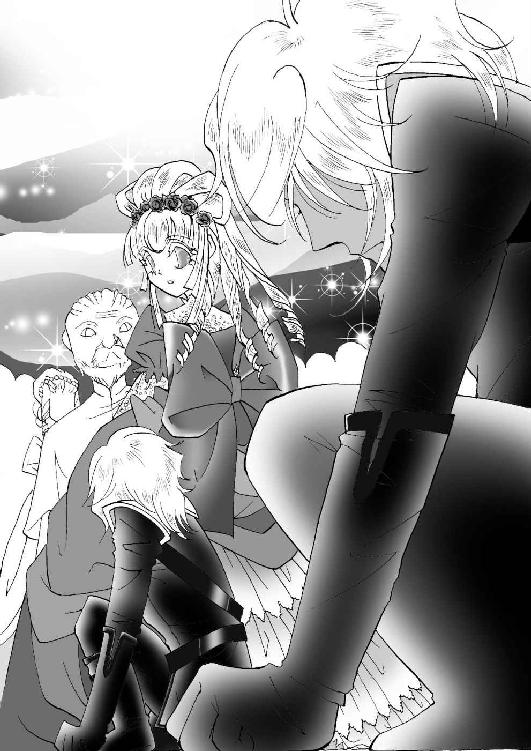

| 愛の嵐に囚われて-水晶の処女姫と褐色の騎士-【書下ろし・イラスト入り】 (トパーズノベルス) | |
| 春原いずみ | |
| (2016) | |
トパーズノベルス
愛の嵐に囚われて～水晶の処女姫と褐色の騎士～
著作 春原いずみ
Illustration セイン流
この物語はフィクションであり、実在の人物・団体・事件とは一切関係ありません。
愛の嵐に囚われて～水晶の処女姫と褐色の騎士～
プロローグ
私には未来が見える。
あなたの前には光り輝く道がある。どこまでもまっすぐに続く、光り輝く道がある。光をまとい、あなたはその道を歩いていく。
できることならば、その隣に私がいることを。
私には未来が見える。
でも、私自身の未来を見ることはできない。
なぜなら、私は聖なる巫女。
自分の未来を見ることは許されていない。
だから、ただ願うことしかできない。
あなたの隣に、私がいる未来を。
ただ、願うことしかできない。
私は......聖なる処女であるのだから。
「あなたをお守りすることが......私の使命なのに」
彼は吐息が触れるほど間近で、クリスタルの瞳を見つめて言った。とても苦しそうに。
「それなのに、私はあなたを......私自身からお守りすることができない」
「どうして？」
クリスタルは彼の金色の瞳を見つめ返して言った。
「どうして、私をあなたから守らなければならないの？」
「それは......」
彼の大きな手がクリスタルの銀色の髪を撫で、頬を撫でる。剣士の手は硬くて、決して滑らかではなかったけれど、とても温かくて、さらさらと乾いている。
「私が......あなたのとても大切なものを奪いたいと思っているからです」
「私の......大切なもの？」
クリスタルも彼の頬に手を触れる。温かな頬。怖いほど澄んだ金色の瞳は、とてもきれいな獣のようだ。
「私の大切なものなら......なおさら、あなたにあげたいわ」
どんなものでも、あなたが欲しいと思うものならあげたい。もしも、私が持っているもので、あなたが欲しいと思うなら。
「レディ......簡単に言ってはいけません」
どうして、彼はこんなに苦しそうなのだろう。クリスタルは少し不思議になる。私はこんなにも安らいで、あなたの温かさと胸の確かな鼓動を感じているのに、どうして、あなたはこれほどに苦しそうなの？
「あなたは......きっと後悔なさるでしょう。アレクシスになど......与えるのではなかったと、きっと後悔なさる。それがわかっているのに、あなたを欲しいと思ってしまう私が......私は許せない」
「アレクシス......」
クリスタルは彼の金色の髪を抱きしめた。日なたの匂いがする、太陽の色の髪。美しい私だけの獣。
「私は......後悔なんかしません」
彼の耳元で囁く。
「私は......あなたに何もかもをあげたいの」
「レディ......」
「待って」
クリスタルは微笑む。
「レディとは呼ばないで」
彼が『レディ』と呼ぶのは、自分の雇い主だけだ。
「クリスタルと......呼んで」
「それは......っ」
それは、彼との関係を変えるということだ。女主と従者ではなく、対等な恋の相手として。
クリスタルは手を伸ばす。さぁ......この手をとって。ためらわずに。
「名前を呼んで、アレクシス」
そうしたら、私はあなたのものになる。あなただけのクリスタルに。
「......クリスタル......」
今まで、血のつながったものにしか呼ばせてこなかった名前を、初めて愛しいと思った人に呼ばれる。クリスタルの胸がとくんと高鳴る。なんて、甘い響き。なんて......素敵な響き。私の名前はこんなにも美しいものだったのだろうか。
「あなたを......愛しています」
彼がそっと額に口づける。
「あなただけを......愛しています。もう......他の誰も愛さない......」
「私もよ......」
初めて愛した。初めて、人を好きだと思った。他の誰にも感じたことのない甘い胸の疼き。これが恋だと知るのに、自分はなんて遠回りをしてしまったのだろう。
彼の長い指がクリスタルの唇をそっと撫でる。薄く開く桜色の唇。そして、重なってくる熱い彼の唇。
「......っ」
唇から溶けてしまいそうなほどの彼の熱。指を絡め合い、頬を重ねて、ただ口づけに酔う。初めてのキスは驚くほど熱く、長いものになる。幾度も角度を変え、お互いの唇を舌で愛撫し、そして。
「......ん......っ」
少し開いた唇から彼の舌がゆっくりと滑り込んでくる。小さく怯えるクリスタルの舌を探し当て、熱く絡んでくる。髪を撫で上げる指が熱い。背中を抱く腕が熱い。何もかもが熱くて、クリスタルは無意識のうちに、ナイトドレスのリボンを解いていた。ふわりと解けたドレスからこぼれた素肌がひんやりとしたシーツに触れて、少しだけ涼しくなる。でも、その素肌も、すぐに彼の掌に包まれて熱くなる。
「クリスタル......」
彼の濡れた声が髪を揺らす。
「愛している......あなたを......」
「私もよ......アレクシス......」
彼の開いたシャツの胸元に手を当てて、クリスタルは囁く。
「あなたの胸......とてもどきどきしてる」
「あなたもだ」
彼の掌が優しく、クリスタルのまだ堅い処女の乳房に触れた。白いふっくらとした乳房の先に、淡いピンク色の蕾が震えている。その蕾に、彼がそっと口づけた。
「あ......っ」
ナイトドレスからこぼれた二つのふくらみを、彼が優しく撫で、そっと指に力を込めて、手の中に包み込む。
「あ......ああ......ん......」
思わずこぼれてしまったはしたない声に、クリスタル自身がびっくりしてしまう。でも、その驚きもすぐに、まだ未熟なふくらみから伝わる官能の疼きに包み込まれてしまう。
彼がそっと指を動かすたびに、優しく蕾を吸うたびに、身体の奥が疼く。お腹の奥がずうんっと重くなって、思わず身体を縮めてしまいそうになる。少しだけ怖い。感じたことのない感覚に、少しだけ怖くなって、彼を抱きしめる。
「あ......っ」
いつの間にか、薄いナイトドレスはベッドの下に滑り落ち、その上に彼のシャツが重なった。初めて感じる人の素肌の熱。さらさらと乾いた素肌の温かさが触れあって、しっとりとした熱に変わっていく。
「あなたは......とてもきれいだ......」
彼が素肌を重ねて囁く。
「何もかもが......美しい......」
滑らかで張りのある彼の美しい褐色の素肌。金色の髪を指に絡めて、クリスタルは小さくため息をつく。美しい私の獣......私だけのもの......。
「......あ......っ」
彼の掌がするすると滑り、クリスタルのシルクのような肌をなぞっていく。まろやかな肩、ふっくらとした乳房、ほっそりとした腰、そして。
「......クリスタル......」
「......あ......あん......っ！」
彼の長く滑らかな指が、クリスタルのしっとりと温んだ花びらをくぐった。まだ頑なな処女の泉をゆっくりと優しい指先で撫で、温かな蜜を溢れさせていく。
「あ......ああ......あ......ん......ん......っ」
恥ずかしい声がこぼれる。ただ彼の胸に顔を埋めて、身体の奥から溢れ出す声に翻弄されていく。
「ああ......私......私......どうし......たの......」
身体がしびれたようになって、力が入らない。彼の指がゆっくりと、でも確実にクリスタルの中に入ってくる。
「......怖がらないで......」
彼が少しつらそうに囁く。
「お願いです、クリスタル......僕を......怖がらないで......」
怖くないと言ったら、それは嘘になる。この疼きも、不規則に乱れる胸の鼓動も怖くてたまらない。でも、なぜか、彼を抱きしめる腕をゆるめようとは思わなかった。なお、彼の胸に深く顔を埋め、そっと首を横に振る。
「怖くは......ないわ......」
顔を上げ、彼の少しかげりの見えた瞳に微笑む。
「あなたが一緒なら......怖くないの......」
「クリスタル......」
再び唇をかわす。甘いキスに心が解ける。優しくベッドに沈められ、彼に抱きしめられる。
「怖かったら......嫌だったら......僕を突き放して。もう......僕は僕を止められない」
彼の囁きに頷く前に、クリスタルは嵐に巻き込まれていた。とてもとても熱い嵐に。
「あ......っ」
唇を触れ合わせたまま、彼がクリスタルを怖いほどの力で抱きかかえた。自分の身体でくるみ込むようにして、優しいが容赦のない力で抱きしめ、身体をたわめていく。
（私......どうなるの......）
怖い気持ちと好奇心がない交ぜになった気持ちで、クリスタルは彼の背中に腕を回す。彼の体温を感じていれば、怖くない。この静かな夜の中で、二人きりでいても、少しも怖くない。
「......っ」
温かく潤み始めていた花びらに、ふいに熱いものが押しつけられた。花びらがとろけ落ちてしまいそうなほど熱いもの。
「あ......」
微かな声をあげてしまう。彼が少しつらそうに吐息をついた。クリスタルは首を横に振り、腕に力を込める。
「......怖くはないの......」
離さないでと指の力で囁く。
「あ......ん......っ」
「......っ」
熱い痛みが身体の真ん中を突き抜ける。その熱にどっと蜜が溢れだし、花びらをしとどに濡らす。
「......ん......んう......っ」
「......身体に力を......入れないで......」
「あ......ああん......っ！」
自分でも驚くような声が響いた。熱い高まりが身体の内側を焼いている。身体の奥から溢れる蜜が高まりをよりいっそう熱くして、二人の体が溶けるように一つになっていく。
「あ......あ......ああ......ん......っ！」
「......クリスタル......っ」
激しくなっていく衣擦れ。互いを呼び交わす熱い声。夜の空気を震わせる悩ましい音が、美しく生けられている薔薇の花びらを散らす。ふわふわとこぼれ落ちる花びらにも、二人は気づかない。ただ熱い愛の嵐のただ中に巻き込まれて。
ＡＣＴ １
「お嬢様？」
腰の近くまでを覆う長い髪を静かに梳っていたマリアがふと気づいたように言った。
「またため息ですの？」
「え？」
クリスタルははっと顔を上げた。
両手で包み込めそうなほど小さな顔に、深いコバルトブルーの大きな瞳。伏せがちの長いまつげと薄めの唇のせいで、どこか寂しげに見えるクリスタルは、このウェブスター伯爵家の妹姫だ。生まれた時から切ったことのない長い髪は透き通るような銀色で、クリスタルの深いブルーのドレスの肩から腰までを覆っている。
「このごろはため息ばかり。何かご心配ごとでもありますの？」
ブラシを手に、丁寧に髪を梳ってくれているマリアは、クリスタルのお付きの侍女だ。とはいっても、クリスタルとは三つほどしか違わない。ウェブスター家に代々仕える執事の娘として生まれたマリアは、クリスタルとは生まれた時からのつき合いだ。クリスタルが三歳になった時から、侍女見習いとして仕え、今では一番近くに仕える信頼ある侍女である。侍女というより、まるで面倒見のよい姉のような存在なのである。他の使用人の前やウェブスター夫妻の前ではもっと固い口調も、クリスタルと二人きりなら、ずいぶんと砕けたものになる。
「......私、十六になるのよ」
クリスタルは憂鬱そうに言った。
「十六になったら、舞踏会から逃げることはできないわ......」
エイドリアン伯爵ウェブスター家は名家である。その娘であるクリスタルもまた、社交界から注目される令嬢の一人だ。クリスタルの姉であるキャロライン姫は、十歳の頃から社交界に出入りしており、十八歳になった今では、社交界一の花形となっている。華やかで美しいウェブスター家の姉姫の妹ともなれば、注目を浴びない方がどうかしている。というより、十六歳までデビューしていなかったことの方がどうかしているのだ。それもこれも、引っ込み思案で、部屋で読書をしている方が好きというクリスタルの性格に、両親が留意してくれてのことだった。しかし、十六歳ともなれば、もう結婚してもおかしくない年頃だ。事実、姉のキャロラインには、十四歳の頃からたくさんの縁談があり、選びきれないほどだ。今年中には婚約がまとまるだろうといわれている。
「旦那様から何か？」
マリアはブラシを置き、クリスタルの髪を器用に編み始めた。ウェブスター家に入った日から、クリスタルの髪を編むのは、マリアの役目だ。つやつやとした素直な髪を美しく編み上げていく。
「お父様は、私が十二の時から社交界にデビューさせようとしていらっしゃったのだもの。こんなに長く待たせられるとは思わなかったと、顔を見るたびにおっしゃるわ。このごろでは、お母様も、いつまでもこのままではいられないわねとおっしゃるし......」
クリスタルはため息をつく。
「マリア、私、舞踏会になんて行きたくない」
「お嬢様」
マリアはクリスタルの髪を編み込み、きれいにまとめると細いダークブルーのリボンで結んだ。すっきりとしたクリスタルの顔立ちが映えて、より美しく見える。
クリスタルは美しい娘だった。顔立ちは整い、大きなコバルトブルーの瞳がまるで宝石のように美しい。透けるような銀色の髪は母親譲りだ。生まれた時にはダークがかったブロンドだったのだが、やがて銀色になり始め、十二歳の時に完全なプラチナブロンドになった。それはある意味、ウェブスター家の宿命のようなものだった。
「お嬢様がいくら抵抗なさっても......きっと周りが放っておいてはくれませんよ」
マリアは気の毒そうに言った。
「舞踏会でなくても、お屋敷で様々な方にお会いしているんですもの......舞踏会が嫌と言っても、通らないと思いますわ」
身近だからこそはっきり言ってくれるマリアの言葉に、クリスタルはしょんぼりと肩を落とした。
「......そうね」
ふと、窓の外を見ると、薔薇が咲き誇る庭園を、多くの取り巻きを連れて散歩している姉の姿が見えた。
「お姉様......」
キャロラインは燃えるようなスカーレットブロンドの美女だった。どこか寂しげなクリスタルと違い、顔立ちも華やかで、プロポーションも小柄なクリスタルとは違い、すらりと長身でグラマラスだ。その身体をコルセットで強調しているので、なお際だつ。その場にいるだけで目を引く、華やかな存在だ。
「私も......お姉様のようだったらよかったのに」
「お嬢様......」
「こんな......ウェブスターの力なんかいらない。お姉様のように......誰の前でも臆することのない、ウェブスターの娘として恥ずかしくない器量を持っていたかったわ......」
『聖なる伯爵家』......それがウェブスター家の別名だった。
ウェブスター家は女系である。現エイドリアン伯爵もロード家からの婿入りで、前伯爵の養子となり、爵位を継いだ。女系ではあっても、直系は爵位を継がない。なぜならば、ウェブスター家の女性はもっと大切な役目を担っているからだ。その力がために、爵位も与えられたのである。
「お嬢様」
クリスタルの部屋に入ってきたのは、執事のモーズリーだった。マリアの父親である。
「お約束のお客様でございます。ノースブルック男爵がお見えでございます」
「......そう」
クリスタルはゆっくりと立ち上がった。マリアが髪を整え、ドレスのスカートを整える。
「お客様は......？」
「水晶の間でお待ちでございます」
「......わかりました」
あまり気乗りのしない様子で部屋を出て行くクリスタルに、マリアが従う。コバルトブルーのビロードでできたクッションの上に置いてある水晶玉を捧げ持って。
大理石のテーブルの上に置かれたコバルトブルーのクッション。その上に鎮座しているのは、透き通る水晶の玉だった。完全な球形でゆがみも亀裂もない美しいものだ。その上を、触れるか触れないかのぎりぎりのところをクリスタルの白い手が滑っている。長いまつげを伏せて、クリスタルは一心に祈るように、静かに手を滑らせていた。
「......お尋ねのお答えを申し上げます」
クリスタルの澄んだ声が響いた。
「この夏は風が涼しく吹くでしょう。太陽よりも雲が空を覆うことが多いでしょう。雨が大地を叩きます」
「それでは領地の秋の収穫は......」
「いつもと同じと思ってはいけません。人の力よりも自然の力が勝る時です」
クリスタルの澄んだ声が神のお告げを伝える。
「自然に逆らってはなりません。恵みを与えるのも、時に奪うのも、神の御心です」
「......ありがとうございます」
壮年のノースブルック男爵は、恭しくクリスタルに頭を下げる。
「領地の不作がわかっていれば、それなりに引き締めることもできます。いつも......大切なお告げをありがとうございます」
「それが私の使命です」
クリスタルは手の動きを止め、コバルトブルーの瞳を開いた。まるで人形のように美しい聖なる令嬢の姿に、壮年の貴族ははっと打たれたように見入った。
「......失礼致しました。相変わらず......お美しい......」
「この子にその言葉は禁句ですわ」
窓際の椅子に座り、ゆったりと、未来を占う娘を見ていた母が微笑んだ。
「男爵様、この子は賛辞が苦手ですの。そんなことをおっしゃると、もうあなたのご依頼は受けないと言ってしまいますわ」
「いや......それは困る」
立派なひげを蓄えた貴族だが、困った顔をすると、まるで少年のようだとクリスタルは思った。
「マリア」
声をかけると、後ろに控えていた侍女が水晶の玉をそっと胸に抱える。
「それでは男爵様......」
「あ......クリスタル姫......っ」
「......私は姫ではありません」
クリスタルは静かに頭を下げると、ソファから立ち上がった。
「失礼致します、男爵様。少し......疲れました」
「あ......これはすまない」
「クリスタル、お部屋で休みなさい」
母のクレアが椅子から立ち上がり、ソファに近づく。あとは引き受けたということだ。クリスタルが十二歳になるまで、同じ役目を負ってきたクレアは、娘の今の状態がよくわかっている。水晶で占った後のクリスタルはぐったりと疲れてしまう。もともと人見知りで、人と話すのは苦手な上に、精神的にひどく疲れた状態になるのだ。世間話などできる状態ではない。
「はい......お母様」
お付きのマリアを伴って、クリスタルは水晶の間と呼ばれる部屋を後にした。
「お嬢様......」
ぐったりと自室のソファに座り込んだクリスタルに、マリアがそっと声をかけた。
「ベッドでお休みになった方が......」
「いいえ......大丈夫よ。少し......頭が痛いだけ」
『聖なる伯爵家』......ウェブスター家がその名で呼ばれるのには訳がある。
女系のウェブスター家には、一代に一人、必ず不思議な力を持つ娘が生まれる。その娘は生まれながらにして、未来を見通す力を持つ。その力は夢見だったり、占いだったりするのだが、未来を見る力であることは共通していた。そして、不思議なことに、その力は次の代の力を持つ娘が生まれると、当代の聖なる娘はその力を失っていくのだった。
クレアは夢見から未来の出来事を引き出す力を持っていた。その力は、長女のキャロラインを生んでも衰えることなく、この家に通う人々に確かな未来を告げ続けた。しかし、次女のクリスタルを生んだ日から、徐々に、はっきりとした未来を予見させる夢を見なくなったという。クレアは、クリスタルに自分の力が継承されたことを知った。クリスタルが初めて未来を予見したのは、まだ三歳の時だ。クリスタルの名を付けてくれた祖母から送られた水晶のお守りを手に包み「お母様、もうじき......おばあさまが天に帰ってしまわれるわ......」と回りきらない口で言ったのが初めてだった。その予言は一週間後に実際のものになった。病気など何一つとして持っていなかったクレアの母が、突然の発作を起こして亡くなったのである。
クリスタルの予言には水晶が必要なのだ......そう知ったクレアは、国中を探して、最高に美しく、完全に近い形の水晶球を取り寄せた。それを手にした日から、クリスタルは次々に未来を言い当てるようになり、完全にクレアが力を失った時、クリスタルが十二歳になった時から、『聖なるウェブスターの娘』となったのである。
「このごろ......とても疲れるの」
クリスタルは小さなため息をついた。
「力が......衰えているのかしら......」
「そんなことはありません」
冷たい水を水差しいっぱいに持ってきたマリアが言った。
「お嬢様の予言は、クレア様のものよりも具体的で、しっかりしていると評判です。クレア様の予言は夢見を解釈してのものでしたが、お嬢様は......水晶の中に、はっきりとした光景をごらんになっているのでしょう？」
「マリア」
クリスタルは首を横に振った。
「お母様は......私よりも高い力をお持ちだったから、曖昧な夢からでもしっかりとした予言をすることができたの。私は......『聖なる娘』としての力が弱いから......神様が力を貸してくださっているの」
『聖なる娘』の称号は、クリスタルには重すぎた。名家の令嬢として、静かにゆったりと過ごしたかった。事実、ウェブスター家ほどの家なら、それが可能だった。領地は広く豊かで、領民にも恵まれている。社交界での地位も高く、王家との関係も良好だ。何一つ不自由なく、おっとりと暮らしていければいいのに。
「どうして......神様は私を『聖なる娘』に選ばれたのかしら......」
マリアがついでくれた冷たい水で喉を潤して、クリスタルはつぶやく。
「どうして、お姉様じゃなくて、私なの？」
「それは、クリスタル様が『聖なる娘』にふさわしいからです」
マリアがはっきりと言う。
「キャロライン様は......『聖なる娘』にはなれません」
「そんなことはないわ」
クリスタルは大きく首を振った。
「お姉様だったら......きっともっとたくさんのご依頼を受けることができるし、きっともっときちんとしたお告げをすることができると思うわ。私は......見たことしか言えないし......」
「それで十分です」
こんな時、マリアは侍女ではなく、まるで姉のようになる。
「キャロライン様のように、いつも殿方を侍らせて、舞踏会に明け暮れているお嬢様に、クリスタル様のような『聖なる娘』はつとまりません。クレア様だって、娘時代には、無駄なお出かけはせず、静かにお屋敷に引きこもっていられたと父が言ってました。クリスタル様はあのころのクレア様に生き写しだって......」
「でも、マリア。お父様は......お姉様が『聖なる娘』だったらって......」
父のウェブスター伯爵は、いつも姉びいきだった。最初に生まれた娘であるキャロラインが可愛いというのもあったのだろうが、やはり聖なる家に他家から入ってきたという引け目のようなものがあるのか、力を持たずに生まれたキャロラインを目の中に入れても痛くないほど可愛がっていた。
「お姉様が『聖なる娘』であるべきだって......」
「旦那様がそんなことを......っ！」
マリアは本気で怒っているようだった。
「いくらキャロライン様が可愛いからって、それは許されないことです......っ！ クリスタル様がいらっしゃるからこそのウェブスター家なのに......っ」
「あらあら」
ぱたんとドアの閉じる音がして、クレアの声がした。
「どうしたの？ マリア。廊下まで声が聞こえてよ」
「お、奥様......っ」
マリアは慌てて、スカートの裾をつまんで、深く頭を下げた。
「も、申し訳ありません......っ」
「お母様、マリアを叱らないで」
クリスタルも慌てて、母とマリアの間に割って入る。
「マリアは、私のことを大事にしてくれるから......っ」
「いいえ、私が出過ぎたことを......っ」
「あらあら」
母は笑っている。優しい手でクリスタルの髪を撫で、そして、マリアの髪を撫でた。
「奥様......」
「マリア、あなたがいつもクリスタルのことを大切に思ってくれていることはわかっていてよ。あなただからこそ、私はこの子を安心して、預けられるの」
「奥様......っ」
マリアが再び深々と膝を折る。
「もったいないお言葉でございます......」
「『聖なる娘』は......とても重い名前なの」
クレアが娘を抱き寄せながら言った。腕の中に華奢な娘を抱いて、さらさらと滑らかな銀色の髪を撫でる。
「一人で、ウェブスター家を背負っていかなければならない、とても重い名前なの。誰も代わることのできない重責を背負う宿命の名前。それを負っていくには、とても一人の力では無理。できることなら......信頼できる方と娶せることができればいいのだけれど......こればかりはね」
「娶せるって......」
クリスタルはびっくりして、母を見上げた。
「結婚......するってこと......？」
「いずれはね」
マリアもきょとんとしている。
「奥様......クリスタル様はまだ......」
「あら、クリスタルはもう十六よ。結婚しても、少しもおかしくないわ」
「お姉様が先ですわ」
クリスタルはクレアの胸に頬をすり寄せて言う。
「私はまだ、お母様の傍にいたいわ」
「まぁ、まるで赤ちゃんね」
クレアは愛おしそうに、娘の髪を撫でる。
クレアにも、この美しい娘が簡単に結婚などできないことはわかっていた。時には、王家からもお召しのある『聖なる娘』を娶ってくれる相手など、簡単に見つかるはずもない。クレア自身も結婚できたのは、二十歳を過ぎてからで、格下であるロード子爵家の三男を婿として取ることになった。両親は不服そうだったが、夫はクレアに一目惚れで、この家に入ることもどうにか了承してくれた。夫は優しい人だったし、結婚に不満はなかったのだが、娘が生まれた時から、二人の間はきしみを見せ始めた。
「......そうね、クリスタルはまだまだ......赤ちゃんよね」
クレアは、クリスタルに『聖なる娘』の他に、別のあだ名が付けられていることも知っている。十二歳でクレアの跡を継いで『聖なる娘』となったクリスタルは、その神秘的な名前と容姿から、いつからか『水晶の処女姫』と呼ばれるようになっていた。確かに、未来を占っているクリスタルは、どこか人間離れした妖精のような雰囲気を醸しだしていて、侵しがたい。とても人間と結ばれるとは思えないことから、『処女姫』と呼ばれているらしい。
（そんなあだ名が付いてしまった娘を......愛してくれる殿方はいるのかしら......）
クリスタルはクレアによく似ていたが、この透き通るような美しさは、自分にはなかったとクレアは思う。依頼人の前で占うことがなかったため、クレアにはクリスタルほどの聖性はなかった。水晶玉を使って未来を占うという力を持ってしまった娘を、クレアは誇らしいと思うと共に、どこか哀れにも思ってしまう。
（ずっと子供のままでいられたら......どんなによかったか......）
何も気づかない子供のままでいられたら、クリスタルはどんなに幸せだっただろう。
夫がクリスタルを疎んでいると気づいたのは、クリスタルが、まだ本格的にクレアの跡を継ぐ前だった。『聖なる娘』の証である銀色に髪が変わりだした頃から、ウェブスター伯爵はクリスタルを傍に近づけなくなった。家族なので、食事は共にするが、食事を終えるとキャロラインだけを連れて、自分の居間に引きこもってしまう。どこかに出かける時も、お供はキャロラインだけだ。クレアは、領地での狩りに行くのについていきたいと言ったクリスタルを、夫が冷たくはねつけているのを見たことがあった。
『気味の悪い子なんて、お父様の娘じゃないのよ』
勝ち誇ったように笑いながら言ったキャロラインの声を、今も忘れることができない。
（あなたが何と思おうと......クリスタルはあなたの娘です......っ）
何度も叫びたくなった。夫の胸を掴んで、揺すってやりたかった。しかし、貴族の娘、『聖なる娘』の誇りが、みっともない真似をさせなかった。
夫と寝所を共にしなくなって、もう何年になるだろう。クレアはクリスタルのためだけに生きていた。この美しい、不憫な娘ができることなら幸せになるように。クレアはそれだけを祈っていた。
「クリスタル、今週末はどなたのご依頼も受けてはいけませんよ」
クレアは静かな声で言った。クリスタルは顔をあげ、母を美しい瞳で見つめる。
「それは......モーズリーの仕事だから」
クリスタルへの未来見の依頼は、すべて執事であるモーズリーが取り仕切っていた。本来であれば、このウェブスター家の当主であるエイドリアン伯爵自身が、その依頼に目を通さなければならないのだが、彼はとっくにその役目を放棄していた。先代夫妻が亡くなり、名実共にこの聖なる伯爵家の当主となった時から、彼は態度を豹変させ、クレアとクリスタルにつらく当たり始めたのだ。
「ええ、モーズリーにも話してあります。クリスタル、この週末の舞踏会で、あなたの成年のお披露目をしますよ」
「え......っ」
貴族の娘は、社交界にデビューする年頃になると、たいてい自宅でお披露目の舞踏会を催す。キャロラインのお披露目は、彼女が十四歳の時だった。クリスタルの十六歳は明らかに遅い。クリスタル自身がそれを拒んでいたせいもあるし、父がこの特別な力を持った娘をどこか疎ましく思っていたせいもある。しかし、もう結婚も考えなければならない十六歳だ。どこかでお披露目はしなければならない。
「そんな......急に......っ」
成年のお披露目は、社交界へのデビューであるデビュタントに次ぐ大きな節目だ。それをいきなり一週間後と言われても、クリスタルはどうしていいのかわからない。
「今週末の舞踏会は、お姉様の名の祝いって......」
名の祝いとは、生まれて名前を付けられ、その家の者として認められたことを祝ってのものだ。誕生日を祝うようなものである。
「奥様」
マリアがたまりかねたように言った。
「恐れながら......キャロライン様のついでのように、クリスタル様の成年のお披露目をなさるなんて......あまりにクリスタル様がおかわいそうでございます......っ」
毎年巡ってくる名の祝いよりも、一生に一度の成年のお披露目は大きな節目だ。
「ドレスだって、クロスだって、誂えなければなりませんのに......っ」
「......いいえ、マリア」
ふいに、ふわっとクリスタルが笑った。まるで、白い花がふんわりと開くような、儚くも美しい微笑みだ。
「考えてみれば......お姉様の名の祝いのついでにしていただいた方が、私も気が楽だわ。主役はお姉様ですもの。私はちょっと顔を出して、ご挨拶をすればいいのですもの」
「クリスタル様......っ」
エイドリアン伯爵ウェブスター家を背負って立つ唯一の存在である『聖なる娘』の成年のお披露目が、姉娘の名の祝いのついでとは。社交界にどんな噂が立つか、わかったものではない。しかし、それを押してまで、父のクリスタルに対する嫌悪の情は強いのだろう。クレアはため息をついた。
「マリア、お前が言いたいことはわかっています。私も伯爵に申し上げました。でも......もう決まったことなんです。そのように、お客様も招待してしまったと言うし......いまさら、クリスタルの披露目をしないというわけにもいかないでしょう。今までしなかったこと自体がおかしいのですから」
夫に、この用意周到に準備されたはかりごとを知らされた時、クレアは半ば絶望的な気持ちになった。力を持って生まれたことは、クリスタルの責任ではないのに、どうしてここまで疎まれなければならないのか。クリスタルが貴族たちの依頼を受ける立場でなければ、おそらく、田舎の領地に幽閉されていただろう。
「さぁ、クリスタル。お母様の成年のお披露目のドレスを見せてあげましょう。あなたと私は髪も瞳も同じ色だから、きっとあなたにも似合うわ」
「お母様の......あのドレス？」
クリスタルの儚げな横顔に、ぱっと光が差した。
「まるで夢のようなレースがたくさんついたドレス......」
「ええ、そうよ」
成年のお披露目に、母が国一番の仕立屋に仕立てさせてくれたダークブルーのドレス。ふわふわと泡のような細かいレースが襟から胸元、そして、肘から手首まで溢れるようにつけられた美しいドレスは、クリスタルが幼い頃から憧れの目で見つめてきた母のドレスだった。姉のキャロラインも欲しがっていたのだが、キャロラインのスカーレットブロンドに、ブルーのドレスは映えない。彼女が泣く泣く諦めてきたものを、クリスタルは着ることができるのだ。
「さぁ、早くいらっしゃい。お直しがあるなら、急がなければね」
ようやくマリアの憂い顔も晴れてきた。マリアも美しいドレスのことは知っている。クレアの成年のお披露目を記念して描かせた肖像画があるからだ。あのドレスは、きっとクリスタルに似合う。
「お嬢様、さ、参りましょう」
「マリアったら、私より楽しみみたい」
「お嬢様はいつも地味なドレスばかりお召しになるから......華やかなものも絶対にお似合いになるのに」
「マリアは、本当にクリスタル贔屓ね」
クレアが嬉しそうに笑う。
「マリア、成年になっても、クリスタルをお願いね」
「承知致しております、奥様」
珍しくわきおこった明るい笑い声に、クリスタルの部屋に生けられた薔薇が少し驚いたように花びらを震わせた。
ＡＣＴ ２
ウェブスター家の舞踏会は、いつも薔薇に彩られている。庭師たちが丹精込めて世話をしている薔薇がいつも華やかに咲き誇る庭を開放して、舞踏会を催すからだ。すべての扉を開け放ち、ダンスを楽しむフロアとにぎやかに談笑する貴族たちでいっぱいの庭が一つになる。
「クリスタル様、成年のお披露目、おめでとうございます」
二度ほど未来見をしたことのある年老いた貴族が、クリスタルの前で礼をする。
「......ありがとうございます」
ドレスの裾をつまんで、クリスタルは礼を返す。
「キャロライン様、名の祝い、おめでとうございますっ！」
華やかな声は、王族の遠縁にあたる青年貴族アボット卿だ。つややかなブルネットに深いブルーの瞳が美しい美貌の貴族である。
「ありがとう、セドリック。ゆっくりしてらしてね」
キャロラインがキスのために手を差し出す。
「後で、ぜひ一曲踊っていただきたいのですが」
「あら、私に順番待ちをしろとおっしゃるの？」
家柄も美貌も才知も併せ持つ青年貴族は、娘たちの人気の的だ。キャロラインはくすくすと笑っている。
「ええ、喜んで、あなたの前に並ばせていただくわ」
「参ったな」
華やかな笑い声が起こる。
「......クリスタル姫」
掠れた声をかけられて、クリスタルははっと我に返る。目の前に立っているのは、やはり何度か未来見をしたことのある田舎の領主だった。
「あ......ごめんなさい......っ」
「成年のお披露目、おめでとうございます」
「あ、ありがとうございます......」
まるで比べるように、クリスタルとキャロラインは並んで、列席者の挨拶を受けていた。キャロラインの方には、貴族の子弟たちが列をなしているのに、クリスタルの前には、クリスタルの力をあてにする壮年の貴族がぽつりぽつりと挨拶に来るだけだ。
いや、若い貴族たちも美しいクリスタルに興味はあるようなのだが、みな臆したように遠巻きに眺めているだけだ。それもまた、クリスタルがさらし者になっているように見えて、若い娘には耐え難いだろう。
「......旦那様、ひどすぎる......」
部屋の片隅で、控えているマリアが父の袖をそっと引いた。執事のモーズリーが「ん？」と振り返る。
「......さっき、招待状を見たの。キャロライン様のお名前だけが大きく書かれていて、クリスタル様の名前は......最後の方についでのように書いてあるだけだった。あれじゃ......気づかない人がいてもおかしくない。シーズンになれば、舞踏会の招待状は山のように来るんだもの。みんな、最後までちゃんとなんて読まない」
「これ、マリア......」
「クリスタル様がおかわいそうだわ。キャロライン様は社交的だもの、お友達も多いし......」
「マリア、その社交界に背を向け続けてきたのが、クリスタル様だ。しかたがないことだよ」
モーズリーはいきり立つ娘をなだめた。
「クレア様は、成年のお披露目の前から舞踏会にはいらしていた。あまり社交的ではない方だったが、幼いながらに、己のお立場をわかっておられたのだろう。ウェブスターの娘として、社交的なおつきあいもできる限りされてきた。しかし、クリスタル様は違う。成年のお披露目も渋っておられたし、お屋敷での舞踏会にも顔をお出しにならない。引っ込み思案なのはしかたがないとはいえ、ウェブスター家のお嬢様としての自覚も必要なのだよ」
「......」
マリアは、憤懣やるかたないといった表情で黙り込んだ。と、その視線の片隅に、ふっとあり得ないものが映った。
「え......」
いつの間にか、クリスタルの後ろに付き従うように立っている青年の姿が見えた。すらりとした長身で痩身だが、しっかりと背中の伸びた姿勢の良さが、彼の体躯を男らしく見せている。しかし、何より彼が目立って見えるのは、その容姿の特異さだった。
「何......あれ......」
「え？」
父のモーズリーも、マリアの視線の先を見ている。
「あれは......」
モーズリーは少し考えてから、まさか......ともう一度視線を戻した。
「......いや、やはりそうか......」
「......どうしたの？」
すっと静かに現れた青年の姿に、周りの視線が集まり始めた。すぐ近くに立たれているのに、目の前の列席者への対応に気を取られて、クリスタルは青年の存在に気づかないようだ。
「大変......っ！ クリスタル様に......っ」
「マリア」
モーズリーが、気はいいが、少し慌て者の娘の袖を引いた。
「彼は......大丈夫だ」
「大丈夫って......大丈夫じゃないわ。若い殿方になんか近づいたことがないのよ。あんなに傍に立たれたら......っ」
クリスタルへの依頼客は、すでに領地を持っているような貴族ばかりで、壮年以上の者ばかりだった。屋敷には当然若い男の使用人もいるのだが、ほとんど部屋に引きこもっているクリスタルにはあまり会う機会もない。いや、クリスタルの方で避けているようなところさえ見受けられる。
「大丈夫だ」
モーズリーが言った。
「彼は......奥様のお墨付きだ」
「え？」
マリアはきょとんとして振り返った。
「奥様の......？」
と、クリスタルの前の客が途切れた。それを待っていたらしいクレアが、クリスタルの肩に手をかけて、振り向かせる。
「あ......っ」
飛び出そうとするマリアの視線の先で、すっと青年が膝を折った。滑らかな仕草で深く膝を折り、クリスタルの前に跪く。
「え......」
クリスタルもとまどっているようだ。なぜなら。
「彼は......奥様がクリスタル様のために選んだ護衛の騎士だ」
「護衛の......騎士？」
確かに、伯爵やクレアには、それぞれ外出したりする時に付き従う護衛の者がいる。今の平和な世の中で命を狙われるようなことはないだろうが、それでも貴族だ。どこで恨みをかっているかわからない。そのために、外に出る時は必ず護衛の者がつく。ほとんどが体術や剣術に優れた騎士である。そして、貴族が連れ歩くのだから、容姿も優れたものが多い。
「でも、あの人は......」
クリスタルの前で深く膝を折る騎士の髪は、宝冠をいただいたような見事な金髪だった。顔を上げ、クリスタルを見つめる瞳も驚くほど明るく、ほとんど金色に見えるほど淡い茶色。そして、彼の滑らかな肌は美しい褐色をしていたのである。

「クリスタル」
母の声に、クリスタルは振り返った。
「あ......っ」
その瞬間、胸を何かに突き刺されたような気がした。心臓が跳ね上がって、胸から飛び出してきそうな気がした。
「初めてお目にかかります。クリスタル様」
低く落ち着いた声が聞こえた。滑らかで美しい声だと思った。よく通る低い声。
「本日よりお仕えさせていただくことになりましたアレクシス・オルブライトにございます。お見知りおきくださいませ」
「仕えるって......」
アレクシスと名乗った青年は、十六歳のクリスタルよりも少し年上のようだった。明らかに少年時代は過ぎており、落ち着きも見える大人びた青年だ。
「クリスタル、アレクシスはお前付きの護衛の騎士です。挨拶をお受けなさい」
「え......っ」
クリスタルは狼狽した。こんなに近くに若い男性を見たことがない。この美しくも不思議な容姿の若者が、自分の従者になる......。
「あ、あの......っ」
「私はクリスタル様のお父様、エイドリアン伯爵の生家であるエインズワース子爵ロード家から参りました。まだ若年ではございますが、精一杯務めさせていただきます」
「アレクシス」
クレアが静かに言った。
「クリスタルはこの通り、引っ込み思案な子です。あなたに慣れるのにも時間がかかるでしょうが、あなたを疎んだりはしないでしょう。大切に仕えなさい」
「はい、奥様」
そして、アレクシスは顔を上げ、クリスタルを見つめた。澄んだ金色の瞳がまるで野生の獣のように美しい。
「マイレディ、私の忠誠はあなたのために捧げます」
腰に差した剣の柄に手をかけて、アレクシスは頭を垂れた。クリスタルはそっと手を伸ばし、まるで宝冠のように輝く金色の髪に触れる。指先が染まってしまいそうなほどの光を、その髪は降りこぼす。
「アレクシス......あなたはどこから......来たの？」
褐色の肌に、金色の髪と瞳。上品に整った美しい顔立ち。そして、すらりとした長身。美しい、異国の姿をした騎士に、クリスタルは思わず尋ねていた。子供の頃に母が読んでくれた異国の物語の中で見た騎士がここにいる。
「ロード家から参りましたが、生まれは存じません。ロード家の森に、赤子の頃に捨てられていたと、私を育ててくれた両親は申しました。ロード家の奥様が、木陰で泣いていた私を見つけてくださったのだと」
「アレクシスは、ロード家の森番に育てられたのよ。マリアは知っているわよね？ ロード家の森番のオルブライトを」
クレアが言った。慌てて傍に寄ってきていたマリアが頷く。
「はい、それは気のいい人で。お嬢様も小さな頃にお会いになっていますよ」
クリスタルは力が表に出るまでは、父と良好な関係にあった。その頃に、父の実家であるロード家に何度か遊びに行っていたのだ。
「オルブライトの両親に育てられ、幼い頃よりロード家の御当主、エインズワース子爵様に仕えて参りました」
「アレクシスは、それは優秀な騎士なのよ」
クレアが嬉しそうに言う。
「クラレンス様に教えに来ていた剣の師範が、召使いであるアレクシスの方が覚えが早いと言って、舌を巻いていたほど。教えていたわけではないアレクシスの方がどんどん上達して、しまいにはアレクシスがクラレンス様に教えるほどになってしまったらしいの」
「もったいないお言葉でございます」
アレクシスが静かな声で言った。
「アレクシスは......いくつなの？」
クリスタルの問いに、アレクシスが答える。
「二十歳でございます。ただ、捨てられておりましたので、いつ生まれたのかはわかりません」
「お母様っ」
その時、高い声がした。クリスタルが振り返ると、姉のキャロラインがつかつかと近づいてくるところだった。
「どうして、クリスタルにだけ、お付きの騎士が与えられるの？ 私が先じゃなくて？」
「クリスタルは『聖なる娘』として、外の方と会う機会が多いでしょう？ 危険がないともいえません。私も十六歳の時に、騎士を与えられました。あなたのことはお父様が考えてくださるでしょう」
「でも......っ」
キャロラインは、この不思議に美しい容姿をした騎士が気になるようだった。
「いいわ、お父様にお願いして、アレクシスを私の騎士にしていただくわ。エインズワース子爵家から来たのですもの、お父様なら......」
「キャロライン」
クレアが諭す口調で言う。
「アレクシスは、私が子供の頃から見てきて、クリスタルの騎士にと決めていた者です。あなたの従者はお父様に頼んで、あなたにふさわしい従者を付けていただきなさい」
「私はアレクシスが気に入ったの」
毛色の変わった美しい従者は自慢になる。命の危機など感じない貴族にとって、お付きの騎士は単なるアクセサリーだ。
「キャロライン」
「お父様は、私の言うことなら何でも聞いてくださるもの。アレクシスは私がもらうわ」
キャロラインがさっとスカートを翻して、父の元に駆け寄っていく。
「......お母様」
不安げなクリスタルに、クレアは微笑んだ。
「大丈夫よ、クリスタル。アレクシスは、もう何年も前から、クリスタルの従者にと考えてきた者なの。お父様もそれはおわかりになっているわ」
「マイレディ」
アレクシスが顔を上げ、クリスタルを見つめる。彼の視線には不思議に体温があった。見つめられるだけで、ふわりと温かくなるような不思議な体温。
「私はレディに忠誠を誓いました。騎士は一人の主にしか忠誠を誓いません。私はレディに忠誠を誓いました。レディ以外の方には、決して仕えません」
「アレクシス......」
アレクシスはすっと立ち上がり、クリスタルの後ろに控えた。
「レディ、お客様がお待ちです。どうぞ、ご挨拶をお受けくださいませ」
「......ええ」
ほんの少し頬を染めて、クリスタルは向き直り、目の前に立つ招待客に微笑む。
「よくおいでくださいました。クリスタル・アデレード・ウェブスターにございます」
澄んだ可愛らしい声が響いた。
クリスタルが成年のお披露目を終えた日から、一層未来見の依頼が増えた。それまで依頼を控えていた身分が上の貴族たちも、クリスタルが成年となったことを知って、クレアと同等の能力がついたものと見、依頼をするようになってきたのだ。
「凄い封筒の数ですね......」
アレクシスが驚いたように言った。マリアが笑う。
「そうよ。それだけ、お嬢様が必要とされてるっていうこと。お嬢様あってのウェブスター家なんだから」
アレクシスがウェブスター家に馴染むのは早かった。その美しい容姿に、初めはぎょっとした従者たちも、彼の親しみやすい性格を知ってからはうち解けた。エインズワース子爵家で育てられたアレクシスは、従者としての立ち居振る舞いが身に付いていて、浮くことがなかったからだ。
「マリア、半分持ちますよ」
「ありがとう」
マリアとアレクシスは、クリスタルの部屋に向かっていた。モーズリーが仕分けた未来見の依頼を届けるためだ。ここからクリスタルがさらに選び、モーズリーが返事を出す。
「お嬢様」
マリアが声をかける。しかし、室内から返事は返ってこない。
「お嬢様......？」
「マイレディ」
アレクシスがそっとドアを開けた。ふわりと吹き込む風。庭へのドアが開け放され、初夏の風が吹き込んでいた。
「お嬢様」
「マイレディ」
アレクシスが庭へ出る。涼しく吹く初夏の朝の風。いっぱいに咲いた薔薇の香りが芳しい。
「マイレディ、どちらですか？」
「アレクシス？」
澄んだ声がした。
「おはよう、こっちよ」
淡いピンクの薔薇の陰から、クリスタルが顔を出した。まだ編まれていない銀色の髪がさらさらと風になびいている。
白い素足に銀のサンダル。ナイトドレスの上にシルクのガウンを羽織って、クリスタルは庭に立っていた。
「おはようございます、マイレディ」
アレクシスは一度部屋に戻ると、ソファにかけてあった暖かなブランケットを手にした。
「朝の風は気持ちようございましたか？」
ブランケットで肩を包むと、クリスタルは少し恥ずかしそうに微笑んだ。
「......薔薇がいい香りだったから」
「お嬢様」
マリアが部屋の中から言った。
「風邪をひいてしまいますよ」
「大丈夫よ」
アレクシスがそっとクリスタルの肩を抱く。ブランケットとしっかりとした腕のぬくもりが伝わってくる。クリスタルは少しうつむいた。耳たぶがほんのりと熱い。
「寒く......ないもの」
薔薇の花びらが風に巻き上げられて、ふわふわと舞う。甘い香りが二人の肩を包む。
「さぁ、お部屋に戻りましょう、マイレディ」
「......ええ」
薔薇がふんわりと枝を茂らせる中を、クリスタルはアレクシスに肩を抱かれたまま歩いた。緑の葉の上にきらきらと朝露のしずくが光っている。
「......きれいね」
思わず手を伸ばしたクリスタルに、アレクシスがすっと手を出して、指先を押さえた。
「アレクシス？」
「レディ、棘で指が傷ついてしまいます」
「え......」
よく見ると、茎に鋭い棘が見える。
「薔薇には......棘があるのね」
部屋に飾られる薔薇の刺は、いつも使用人たちの手できれいに落とされている。庭の薔薇も、手の届くようなところにあるものは、庭師たちが棘を取っているらしく、クリスタルは薔薇に刺があることを知らなかった。
「棘は......痛いかしら」
「そうですね。触れただけでも、きっとレディの指は傷ついてしまいます」
アレクシスが優しく言う。
「ですから、薔薇が欲しい時は、必ず私に言ってください。お好きなだけ、取って差し上げますから」
「ええ」
にこりと微笑んで、アレクシスの金色の瞳を見つめてから、クリスタルははっと目を伏せた。びっくりするくらい胸がどきどきと高鳴っている。
（私、どうしたのかしら......）
「お嬢様、そんなはしたないお召し物で外にお出になってはいけません」
部屋に戻ると、マリアが仁王立ちになっていた。
「アレクシス、お嬢様はお着替えになるから、外で待ってて」
「あ......っ」
その時になって、クリスタルは初めて自分の姿に気づいた。いつもきっちりとコルセットとドレスに包まれている身体が、ごく薄いナイトドレスとガウンに包まれただけで、足下は素足だ。身体のラインがすべて露わになっている姿に、クリスタルは改めて恥ずかしくなり、アレクシスの手からブランケットを引ったくるように取って、身体を隠した。ひどく耳が熱い。
「アレクシス、外で......待っていてちょうだい」
「はい、マイレディ」
慌てることもなく、丁寧に頭を下げると、アレクシスは部屋を出て行った。
「まったく......お嬢様」
すでに用意されている今日着るはずのドレスを両手に抱えて、マリアは呆れたように言った。
「小さなお子様じゃないのですから、おてんばもいい加減になさいませ」
「ええ......でも、あんまり薔薇がきれいで......」
コルセットをきつく締め上げなくても、クリスタルのウエストはほっそりとしている。ダークグリーンのドレスはクリスタルの髪にも瞳にもよく映える。キャロラインのように華やかな赤やピンク、オレンジのドレスは一枚もなく、クリスタルのドレスはダークな色合いのものがほとんどだ。それがマリアは不満なのだが、クリスタルはこの方が落ち着くのだという。確かに、クリスタルの容姿にはこんなダークな色合いのものがよく似合う。マリアがいくら嘆いても、その事実は変わらないのだ。
「さぁ、お嬢様、今日もお美しゅうございます」
横の髪を編み込んでリボンでまとめ、マリアはにっこりした。
「未来見のお手紙がたくさん来ておりますよ」
「......何だか、とても増えているのね」
「お嬢様が成年のお披露目をなさったからですよ。ボーフォート公爵からのご依頼もありましたし、ハミルトン侯爵からも」
マリアが封筒の束を積み上げる。
「お嬢様、アレクシスを呼んでもよろしいでしょうか？」
「え、ええ」
はしたない姿を見られて恥ずかしいが、アレクシスは母が信頼してクリスタルを預けた大切な騎士だ。彼はマリアと共に、常にクリスタルの傍にいることを許された使用人だった。
「失礼致します、マイレディ」
アレクシスが改めて挨拶をして入ってきた。外で待っている内に預かったらしく、クリスタルが大好きな紅茶のセットを持っている。
「お茶をお召し上がりになってからになさっては？」
騎士になる前は、エインズワース子爵家で召使いをしていたこともあるアレクシスは、どんな雑用でも、クリスタルに関することであればこなしてくれた。最初は剣を差した騎士であるアレクシスに雑用を頼むことをためらっていた使用人たちも、アレクシスの人柄を知ってからは彼に気安くいろいろなことを頼むようになっていた。
「まったく......お屋敷のみんなは、アレクシスを何だと思ってるのかしら」
「クリスタル様の従者ですよ」
アレクシスが笑った。白い歯がこぼれ、褐色の肌に映える。
クリスタルはアレクシスのような騎士を見たことがなかった。父や母に付いている騎士はあくまで護衛だけを仕事としており、その仕事がない時は剣の稽古をしたりしている。しかし、アレクシスはマリアと同じように、クリスタルに付き従い、常に傍にいる。
（不思議な......人）
まだクリスタルの従者になってから、ひと月ほどしか経っていないのに、すでに彼の存在はごく自然なものになっていた。傍にいてくれるのが当たり前で、彼がいないと、クリスタルは何となく背中が寒いような気がしていた。
（アレクシスが来てくれるまで、私はどうしていたんだろう......）
マリアがナイトドレスを片づけ、ベッドルームを整えている間に、アレクシスはクリスタルに紅茶をつぎ、手紙を見るための用意をしてくれていた。召使いの経験のあるアレクシスの手際はびっくりするくらいいい。思わずくすっと笑ったクリスタルに、アレクシスが振り向いた。
「どうかなさいましたか？ マイレディ」
「いいえ」
クリスタルは微笑む。
「アレクシスは何でもできるんだなぁと思っていたのよ」
「私は使用人の両親に育てられましたから」
アレクシスも微笑んだ。
「お屋敷の中で育ったようなものです。お屋敷の中の仕事はひと通りやりましたから」
結局、アレクシスはすんなりとクリスタルの従者におさまっていた。姉のキャロラインが父にアレクシスを自分の従者としたいとねだったのだが、さすがにそれは許されなかった。実質、ウェブスター家の当主は父ではなく、『聖なる娘』の力を持つ母である。母はあまりその強権を使うことはなく、父に従っていたが、ここぞというところで意見を通す。今回がまさにそれで、キャロラインにねだられて、アレクシスをキャロラインの騎士にすると言い出した父に、母は断固たる態度を取った。
『アレクシスは、以前からクリスタルの騎士にと考えていた者です。クリスタルの騎士でないのなら、この家に彼を入れることは許しません』
普段は物静かでおとなしい母の断固たる態度に、父は折れた。父の護衛をしていた騎士をキャロラインに付けようとしたが、それはキャロラインが拒否している。とりあえず、様子見となった。
「モーズリーさんから言いつかって参りました。こちらがレディのお返事を必要とするもの。こちらがモーズリーさんのお返事でよいものです」
「ありがとう」
クリスタルは手紙の束を引き寄せて、軽くその上に手を当てた。そうするだけで、何となく自分を必要としているものはわかる。迷うことなく、手紙を引き出し、中を読み始めたクリスタルを、アレクシスがじっと見つめている。
「......アレクシス？」
クリスタルは顔を上げた。
「どうしたの？」
「いえ」
アレクシスが少し笑って首を横に振る。
「不思議に思っていました。レディは少しも迷うことなく、ご自分を必要としている者がわかる。なぜなのか......と」
「アレクシス」
ベッドルームから出てきたマリアがだめだめと声をかけてきた。
「お嬢様の邪魔をしてはだめ。大事なお仕事中なんだから」
「いいのよ、マリア」
以前なら、クリスタルはこの作業をしている時には、マリアが傍にいるのも嫌がっていた。しかし、アレクシスが来てくれるようになって、クリスタルは手紙をより分け、中を読む時に、彼が傍にいても気にならなくなっていた。むしろ、その方が集中できることに気づいていた。
「アレクシスがいてくれると......とても安心するの。急に誰かが入ってきてびっくりするとか......そんなことが絶対にないってわかってるから」
「まぁ、そのための騎士ですからね」
マリアが納得したように頷く。
「確かに、アレクシスがいる時のお嬢様は、とても伸び伸びとなさって、安心されてますよ。少し悔しいですけど、私にはできなかったことです」
「そんなことないわ、マリア」
クリスタルは慌てて言った。
「マリアがいてくれなかったら、今の私はいなくてよ」
本当の姉妹であるキャロラインよりも、もっと姉妹に近いマリア。マリアがいつも傍にいて、何かと励まし、支えてくれたから、今の自分があることをクリスタルはよくわかっている。
「大好きよ、マリア」
「はいはい」
くすりと笑って、マリアはシーツやカバーを抱えて、部屋を出て行った。残されたのは、クリスタルとアレクシスだけだ。
「レディ」
アレクシスが言った。
「お邪魔なら、私はお部屋の外におりますが」
「いいえ、そんなことはなくてよ」
クリスタルはにこりと微笑んだ。
「そこにいてちょうだい。あなたがいてくれると......とても安心するの」
アレクシスはとても温かい雰囲気を持っていると、クリスタルは思う。彼が傍にいてくれると、不思議と心が安らいで、目の前のことに集中できる。
（まだ出会ってひと月でしかないのに......）
彼と出会った時、不思議と懐かしい気がした。ずっと、この温もりを待っていたような気がした。
手紙の上にかざしていた手がふわっと温かくなった。この中に、自分を求めている声がある。封筒の束を斜めに崩して、軽く手をかざしていくと、その封筒がわかった。熱い紅茶を一口飲んで、クリスタルは手紙の封を切る。肩の後ろに、アレクシスの温かい視線を感じながら。
ＡＣＴ ３
その招待状が届いたのは、クリスタルが十六歳の誕生日を迎えて、ひと月と少しが過ぎた頃だった。
「サマセット公からのご招待？」
モーズリーが恭しく差し出した金の紋章も鮮やかな封筒を、クレアは受け取った。
「クリスタルに？」
サマセット公は、古い家柄で公爵の中でも上位にあたる。現在はシーモア家がサマセット公を名乗り、少壮気鋭の公爵が一族を率いている。
「クリスタル様が成年のお披露目をなさったことをお知りになったようで」
サマセット公の次男は、あのハンサムなアボット卿だ。息子から、クリスタルが成年のお披露目をしたことを知ったのだろう。
「サマセット公の......夏の舞踏会にぜひにとあるわね」
クレアが招待状に目を通す。
「これは正式なご招待ね。お断りするには、かなりの理由が必要だわ」
「お母様」
クリスタルは困ったように、母を見上げた。クリスタルはソファに座った母の足下のラグの上に座っている。
「どうしたらいいのかしら......」
今日もアレクシスは、クリスタルの傍に付き従い、窓の近くに立っている。すっきりと伸びた背筋が騎士らしく、彼を凛々しく見せている。窓から射し込む光に輝く金の髪。深い赤の衣装が、金の髪と瞳の彼によく似合っている。
「ボーフォート公のご依頼も受けているわけだから......断る理由はないと思うわ」
母が言う。
「もしかしたら、サマセット公も未来見をしてもらいたいのかもしれないわね......」
過去には、王族も依頼してきたことがあるという、ウェブスター家の『聖なる娘』の力。
「クリスタル、成年のお披露目をした以上、あなたも子供ではありません。自分への依頼は、自分でどうするかお決めなさい」
「お母様......」
クリスタルはもじもじと下を向いた。舞踏会は苦手だ。どうしていればいいのかわからない。幼い頃には、母について行ったこともあるけれど、聖なる娘になってからは自邸での舞踏会をそっと眺めるくらいだ。それに......。
「クリスタル様」
マリアが言った。
「クリスタル様はお美しゅうございます。どこに出て行っても、恥ずかしくないご令嬢にございます」
「マリア......っ」
クリスタルは目をぱちぱちさせている。
「何を言っているの？」
「ご自分でおわかりでないようなので」
「マリア」
クレアがくすりと笑った。
「そういうことではないと思いますよ。この子が気にしているのは」
クレアはクリスタルの髪をさらさらと撫でた。
「クリスタル、ドレスなら心配しなくていいのよ」
「お母様......」
クリスタルは大人になってから舞踏会に行ったことが一度もない。だから、舞踏会にふさわしい衣装自体をほとんど持っていないのだ。
そっと盗み見た舞踏会は、とても華やかできらきらしていて美しくて、自分が行ってはいけない場所に思えた。
（私は......何もできないもの）
未来を見ることはできる。しかし、人と話すことはうまくできない。ダンスもしたことがない。華やかに笑うこともできないし、気の利いたジョークを飛ばすこともできない。こんな自分が、舞踏会に出かけてもいいのだろうか。
「クリスタル、勇気を持ちなさい」
クレアが優しく言った。
「あなたに足りないのは、美しさでもドレスでもありませんよ。あなたに足りないのは勇気。一歩を踏み出す勇気ですよ」
「お母様......」
「あなたには、キャロラインと同じ教育を受けさせています。キャロラインにできることが、あなたにできないはずはありません。あなたは......ごく普通の貴族の娘なのですよ」
クリスタルははっとした。
「ごく普通の......娘......」
もしかしたら、自分を特別と思っていたのは自分なのではないか。クリスタルは視線をさまよわせた。
確かに、周囲は自分を特別なものとして見ていた。それは確かにその通りだ。しかし、誰よりも自分が特別と思っていたのは、自分自身ではなかったか。未来を見る自分を特別だと思っていたのは。
「お母様......私......」
クリスタルは母を見上げた。
「私......考え違いをしていました」
未来を見る以外は普通の娘。ダンスをしたり、つまらないジョークに笑いあったり。そんなことをしてもいいのだ。『聖なる娘』であっても、普通の娘として生きる時間も与えられているはずなのだから。
「マリア」
クレアが振り返った。
「仕立屋のアイリーンを呼んでちょうだい。すぐにクリスタルのドレスを仕立てなくては」
「はい、奥様！」
マリアがぱたぱたと走っていく。クリスタルは思わず、窓際に立つアレクシスを振り向いた。アレクシスはとても優しい瞳でクリスタルを見つめ、微笑んでいた。
「アレクシス......私......」
「マイレディ、どちらにいらしても、レディをお守りすることを誓います」
低く落ち着いた声で言って、アレクシスは胸に手を当て、すっと頭を下げた。
いつでも、どこでも、あなただけをお守りすることを誓います。
クリスタルの初めての舞踏会のドレスは、仕立屋やクレア、マリアと相談して、深い赤のものになった。キャロラインが好むような明るい赤ではなく、少し黒に近いくらいの深い赤だ。そのくらいの色合いが派手になりすぎず、クリスタルの清楚な容姿を引き立てた。
「......おかしくはない？」
ドレスを身につけ、マリアに髪を結ってもらいながら、クリスタルは何度目かになる問いを口にした。
「本当に似合う？」
「ああ、もう......」
マリアがうんざりしたように肩をすくめた。
「私がいくら言っても、お嬢様は納得なさらないのですから、聞くだけ無駄です」
「マリア......」
「アレクシス、何とか言って」
ちょうどお茶を持って入ってきたアレクシスに、マリアが言葉を投げた。
「マリア？」
きょとんとしているアレクシスに、マリアは言葉を重ねる。
「いくらお美しいって言っても、お嬢様は納得してくださらないのよ。あなたからも何とか言って」
「マイレディ」
お茶のセットをテーブルに置き、アレクシスはゆっくりと近づいてきた。首をわずかに傾け、優しい目でクリスタルを見つめる。
「レディ」
アレクシスがクリスタルの足下に跪く。
「私はエインズワース子爵のお供で、あちこちの舞踏会を見て参りましたが、その中でレディ以上に美しい方にはお会いしたことがありません」
アレクシスの口調はびっくりするほど真摯だった。顔を上げ、クリスタルのコバルトブルーの瞳を見つめる。
「大変にお美しくていらっしゃいます」
「ほら、お嬢様」
マリアが我が意を得たりという顔をする。
「アレクシスは、マリアよりもたくさんの舞踏会や貴族のお嬢様を見ているはず。そのアレクシスが言うのですから、間違いありません」
「アレクシス」
クリスタルは耳まで赤くなっていた。ドレスの色が映ったのかと思われるほど赤くなっている。
「本当に......？」
「はい？」
「本当に......舞踏会に行ってもおかしくない？」
アレクシスは小さく笑った。失礼致しますと立ち上がり、庭に出て行く。
「アレクシス......」
彼はすぐに戻ってきた。手には淡いピンクの薔薇と白い薔薇を持っている。どちらも露を含んで、ふっくらと花びらを広げ、きらきらと輝いている。
「マイレディ」
アレクシスは再びクリスタルの前に跪くと、薔薇をすっと捧げた。
「レディは......この薔薇よりも遙かにお美しくていらっしゃいます」
馥郁たる薔薇の香りを吸い込みながら、クリスタルは花を受け取った。きちんと棘が抜かれている薔薇は、クリスタルの手にも優しい。
「......ありがとう」
マリアが薔薇を髪に飾ってくれる。母から送られたルビーのチョーカーをつけ、おそろいのブレスレットとリング、イヤリングを着けて、クリスタルは立ち上がった。すかさず、アレクシスが手をとってくれる。
「さぁ、参りましょう、マイレディ」
「ええ......」
一歩踏み出すと、ふわりと薔薇の香りがこぼれる。美しい女主人の手をとって、金色の騎士はゆっくりと歩み出した。
サマセット公のタウンハウスは、城と言いたくなるような豪奢な館だった。かつんとヒールの音が、石造りの回廊に響く。小さく聞こえるダンスの音楽。笑いさざめく人々の声。
「......アレクシス」
クリスタルはそっと後ろに付き従う騎士に振り向いた。
「......きゃ......っ」
「レディ」
ドレスの裾を踏んでしまいそうになって、足下が危うくなったクリスタルを、アレクシスのしっかりとした腕が支えてくれる。
「大丈夫ですか？」
「え、ええ......」
アレクシスは立ち止まったクリスタルの足下に膝をついて、クリスタルが足を痛めてしまわなかったか確認している。
「足は痛めなかったようですね」
ほっとしたように言い、立ち上がるアレクシスに、クリスタルは不安そうに言った。
「ねぇ、アレクシス。やっぱり、私......」
「マイレディ」
アレクシスが少し困ったように微笑んでいる。
「レディは誰よりもお美しくていらっしゃいます。臆することはありません。いつものように花のように微笑んでいらっしゃればよろしいのですよ」
「でも......お話もできないような娘は......」
「話をするのは殿方の役目と存じます。貴族の姫君は、美しく微笑んでいらっしゃるのが務め。気に入る話題のようでしたら、お話をなさればいい。気が向かなかったら、微笑んで頷いていらっしゃるだけでよろしいのですよ」
アレクシスは手を伸ばし、そっとクリスタルの銀色の髪を撫でた。
「え......」
「失礼致しました。御髪が少し乱れていらしたので」
「......ありがとう」
クリスタルはそっと体の向きを変えると、今度はドレスの裾を踏まないよう気をつけて歩き出した。舞踏会用のドレスは、いつも着ているものより裾が長く、後ろにトレインを引いている。急に振り返ると、ドレスの裾を踏んでしまうのだ。
舞踏会のざわめきが近づいてくる。音楽が聞こえてくる。これはワルツ。頭の中でステップを復習する。
（音楽は好き......これは大好きなワルツ......）
廊下にいたサマセット公の従者によって、ドアが開け放された。
「エイドリアン伯爵ご息女クリスタル姫にございます」
アレクシスがはっきりとした声で言った。そして。
「マイレディ、お忘れなく。レディは『聖なる娘』であり、立派な姫君です」
「エイドリアン伯爵ご令嬢、クリスタル・アデレード・ウェブスター姫にございます」
サマセット公の従者が、クリスタルの名を読み上げる。一瞬、ざわめきがおさまった。クリスタルは逃げ出したくなる。あれが『聖なる娘』だ......人々の声。
「マイレディ」
そっと背中を押してくれる声。
「さぁ......一歩を踏み出して」
そこは光に満ちた場所だった。まばゆいシャンデリア、たっぷりと生けられた花、輝く宝石をまとった淑女たち。
「あら、お珍しい......エイドリアン伯爵の下のお嬢様が......」
「キャロライン様はよくお見かけしますけど、クリスタル様は初めてでは？」
「あれが『聖なる娘』か......」
「マイレディ」
舞踏会では、従者は別の部屋で待つのが普通だが、騎士だけは別だ。護衛の者として、舞踏会への出入りを許される。アレクシスはぴたりとクリスタルの後ろに付いてくれていた。
「レディがあまりにお美しいので、注目の的になっているだけです。臆してはなりません」
「え、ええ......」
人々の視線が痛い。まるで針のようだと思った。アレクシスの視線は優しく暖かいのに、ここに集う人々の視線は恐ろしいほど鋭く、痛い。
「キャロライン様は華やかな方だけど、妹君は......」
「キャロライン嬢は今日はおいでにならないようだな......」
（やっぱり......お姉様がいらした方がよかったんだわ......）
「クリスタル様」
はっきりとした声が聞こえた。ぼんやりと視線をさまよわせそうになっていたクリスタルは、慌てて前を向く。
「あ、あの......」
「ああ、やっぱりクリスタル様だ。覚えてくださっていませんか？ セドリック・シーモアです」
そこに立っていたのは、ブルネットのハンサムな青年だった。サマセット公の次男であるアボット卿である。クリスタルの成年のお披露目の時、キャロラインと軽口を叩いていた青年だ。クリスタルはきゅっと唇を結ぶと、顔を上げた。コバルトブルーの瞳を上げ、真っ直ぐに貴公子を見つめる。
「初めてご挨拶致します、アボット卿。クリスタル・アデレード・ウェブスターにございます」
スカートをつまみ、優雅に一礼する。銀色の髪に、二輪の薔薇が揺れる。振りこぼれる甘い香り。青年貴族は一瞬息を飲んで、クリスタルを見つめていた。
「......アボット卿」
傍にいた別の青年が、貴公子の肩を軽くつつく。
「どうした？」
「あ、ああ......申し訳ありません、クリスタル様。あまりに......お美しいので、見とれてしまって......」
「まぁ......」
クリスタルはうつむいて、少しだけ笑った。桜色の唇にわずかに真珠のような白い歯がのぞく。
「おからかいにならないでくださいませ......舞踏会にはまだ慣れておりませんので」
「いや、とんでもない」
アボット卿の声はよく通る。周囲の視線が集まってくる。しかしそれは、不思議と先ほどほど痛いものではなくなっていた。決して温かいものではなかったが、その場にいられないと思うほどのものではなくなっていた。
「クリスタル様、父にご紹介しましょう。さぁ、どうぞ」
アボット卿自らの案内に、クリスタルが不安そうに振り返ると、アレクシスが頷いた。
「......ご親切に感謝致します」
クリスタルは自然に差し出されたアボット卿の腕に手を添えた。淑女らしい控えめな仕草にアボット卿は微笑む。
「クリスタル様は、キャロラインとあまり似ておられない」
クリスタルは少し寂しそうに笑った。
「......姉はあの通り、美しくて......社交的です。私は......」
「姉妹で同じであられる必要はないと思いますがね」
アボット卿はあっさりと言う。
「キャロラインはあれでいいと思います。事実、人気もありますし、話していてもおもしろい」
「ええ......」
「でも、クリスタル様はまた別です。初めて、間近でお会いしましたが、まるで、密やかな花のようだ」
「え......？」
「キャロラインのように、舞踏会に入った瞬間にわかるような美しさではないかも知れませんが、傍に寄るといい香りがして、ひっそりと佇んでいる。うつむく顔を見ると、冴え冴えと美しい......」
「また、おからかいになって......」
クリスタルは耳たぶをほんのりと染めた。アボット卿はそんなクリスタルの初々しい様子を微笑みながら見ている。
「父も、クリスタル様にはぜひお会いしたいと言っていました。あなたをお連れすれば、僕の株も上がります」
クリスタルと共に、アレクシスもその後に従う。
「ねぇ......あの騎士の美しいこと......っ」
「あの髪の輝き方といったら......まるで光をそのままいただいているようだわ......」
「あの肌は異国のものね。エイドリアン伯はどちらから......」
（アレクシス......）
後ろを振り返りたいが、それはできない。今、エスコートしてくれているアボット卿をないがしろにする行為だ。貴族の娘として、それはできない。しかし、クリスタルはアレクシスが気になってならない。
（そうだわ......アレクシスはとても美しいんだわ......）
傍にいすぎて気づかなかったことだった。クリスタルは若い男性をあまり見たことがない。クリスタルにとって、初めて身近で見る男性がアレクシスだったのである。彼を誰かと比べて見たこともないので、美しいかどうかはぴんと来ない。しかし、こうして彼への賛辞がつきないところを見ると、彼は美しいのだろう。
（アレクシスは......美しいだけではないもの）
クリスタルにとって、アレクシスの外見は、はっきり言ってどうでもいいものだった。クリスタルにとって大切なのは、アレクシスの優しさであり、彼が傍にいる時の安心感だった。アレクシスは決して揺るがない。いつも、いちばん近くでクリスタルを見つめていてくれる。彼がいれば、何も怖いものはないと思った。彼さえいてくれれば。
「あ......」
クリスタルははっと我に返る。
（私......何を考えているのかしら......）
「どうしました？ クリスタル様」
クリスタルがぼんやりしているのがわかったのだろう。アボット卿が声をかけてくる。もうサマセット公は目の前にいる。クリスタルは目をぱちぱちと瞬いて、意識を元に戻した。
（私......何を考えているの......）
肩のあたりには、いつものようにアレクシスの視線を感じる。それがなぜか暖かいだけではなく、少し熱いように感じた。
「父上、エイドリアン伯ご令嬢、クリスタル姫をお連れしました」
アボット卿が紹介してくれるのに合わせて、クリスタルは優雅に膝を折る。母が言った通り、母の授けてくれた教育は、クリスタルのものになっていた。教えられた通りにふるまえば、何も恥ずかしいことはないのだとわかった。
「初めまして、サマセット公爵様、クリスタル・アデレード・ウェブスターにございます」
サマセット公は堂々たる紳士だった。灰色の瞳でじっとクリスタルを見つめる。アボット卿が笑い出した。
「父上、クリスタル様に穴が空いてしまいますよ」
青年貴族は、王族以外の貴族の中では、かなり頂点に近い場所にある父親にも、気安くものを言う。育ちのいい人間ほど、人間関係に鷹揚というのは本当のようだ。
「いや、失礼。クリスタル姫、お初にお目にかかる。チャールズ・ダレル・シーモアだ。これは息子のセドリック。失礼な真似をしてはいなかったか？」
「華やかな場所に慣れないところをお救いいただきました。とてもお優しい方と存じます」
クリスタルはおっとりと静かな声で言った。
「本日はお招きいただきありがとうございます。初めての舞踏会ゆえ、失礼もあるかと存じますが、どうかお許しくださいませ」
「クリスタル姫は初めての舞踏会と？ 成年のお披露目は先日だったが、それまでは？」
サマセット公の問いに、クリスタルは答えた。
「......生まれつきの引っ込み思案ゆえ、舞踏会には出たことがありません。子供の頃には、母について行ったこともあったようでしたが、あまり記憶にございません」
「父上、クリスタル姫は『聖なる娘』です。お忙しいのですよ」
アボット卿が横から言った。サマセット公はじろりと大きな目で息子を見る。
「そうだな。お前のように、遊んでばかりはいられないということだ。姫は大切なお役目を神から与えられていらっしゃる」
そして、サマセット公は、クリスタルの小さな手をとった。ひんやりとした大きな手だった。紋章をあしらった大きな指輪がはめられている。
「クリスタル姫、ぜひ私の依頼も受けて欲しいものだが」
「私でお役に立つなら、公爵様」
クリスタルは深々と膝を折る。その優雅な仕草に、周囲の目が集まっている。もうそこに痛いような棘はない。この美しく聡明な娘に対する賞賛、驚き、そして、好奇心に溢れた目だ。
「ゆっくりと楽しんでいってくだされ、クリスタル姫。この馬鹿息子でよろしければ、いくらでもエスコートにこき使ってやってくれればよい」
「光栄に存じます」
クリスタルはスカートをつまむと、そのままトレインを踏むこともなく、見事な衣装捌きで、サマセット公の前を辞した。
「クリスタル姫、踊っていただけますか？」
一番乗りという風に、アボット卿が手をさしのべる。
「あ、ずるいぞ、セドリック」
すぐに声が飛んできた。
「クリスタル様、次はぜひ私と」
「クリスタル様、お初にお目にかかります。ヘレフォード子爵が一子、ウィリアム・デリックにございます。どうぞ、お見知りおきを」
「あーっ、うるさいうるさいっ」
アボット卿が大きな声を出した。
「お前たち、うるさいぞっ。クリスタル姫がびっくりされているじゃないか」
突然目の前に現れた青年貴族たちの一団に、クリスタルは怯えたようにコバルトブルーの瞳を見はっている。
「アレクシス......」
思わずお供の騎士を振り返ると、彼は少しくすぐったいような顔で微笑んでいた。
「さすがはマイレディでございます。アレクシスは鼻が高うございます」
クリスタルの美しさは、言ってみれば原石の美しさだった。彼女は磨かれないまま、ずっと館の中で眠っていた。それが今、磨き上げられ、閉じていた蕾がふわりと大きく花びらを開いたのだ。芳しい薔薇の香りと深い赤のドレスを身にまとい、クリスタルは静かにそこに佇んでいた。それだけで、その場の空気が変わった。彼女がそこにいるだけで、柔らかな光が差し、涼しげな風が吹き抜ける。誰もがその光に惹かれて、そこに集まろうとしていた。
「とにかく、僕がいちばんに踊るんだからな」
そこは主催者の息子の立場を利用して、アボット卿が名乗り出た。
「クリスタル姫、ワルツはお好きですか？」
「......うまくはありませんけど」
音楽が流れ始めた。聞き慣れた可愛らしいワルツ。クリスタルはアボット卿の手に手を重ねて、フロアに滑り出した。
（ちゃんと......踊れるかしら......）
ダンスのレッスンは好きだった。クリスタルのダンス教師は、キャロラインと同じだったが、彼はいつもクリスタルの方が筋がいいと言ってくれ、彼女が舞踏会を嫌うことをもったいないと言ってくれていた。
ステップを一歩踏み出すと、自分でも驚くほどスムーズに足が出た。アボット卿のリードがうまいせいもあるのだろうが、音楽に乗ることに何の苦もなかった。ふわりと舞うスカート。きらきらとこぼれ落ちるルビーの輝き。そして、シャンデリアの光よりも輝く、クリスタルの銀色の髪。『聖なる娘』の証である神秘的な銀の髪も、今は艶やかに光を弾き、クリスタルの可憐な美貌をより一層輝かせていた。
「もっと早く......」
アボット卿が踊りながら囁いた。
「デビューなさればよかったのに」
「え？」
「周りをご覧なさい」
アボット卿は嬉しくてたまらないといった顔で言った。
「みんな、あなたを見ている。あの美しい姫君は誰だろうと見ている。この場の賞賛はすべてあなたのものだ」
「そんな......」
「本当は、もっと早くあなたに話しかけたかった」
アボット卿がにっこり笑う。人なつこい魅力的な笑顔だ。
「でも、キャロラインが機嫌を損ねるから。彼女の機嫌を損ねると、なかなか面倒でね」
「お姉様が......」
「キャロラインは女王様だから」
くるりとターンをきれいに決めて、彼が言った。
「いつでもどこでも、自分がいちばんでないと気が済まない。華やかで、エイドリアン伯の娘だから許されるようなものだけどね」
花が咲いたように、フロアにはドレス姿の貴族の娘たちと貴公子たちがダンスを楽しんでいる。盛り上がる美しい音楽。笑いさざめく、幸せそうな人たち。クリスタルが知らなかった世界。
「クリスタル」
もうすぐパートナーが変わるところで、アボット卿が言った。
「あなたは美しい。華やかではないかもしれないけれど、もっと傍に寄って見つめたくなるほど美しい」
「アボット卿......」
「今日のラストダンスはぜひ僕に。約束ですよ」
きゅっと優しく手に力を込めて、彼はそう言い、名残惜しげに手を離した。
ダンスは次々に申し込まれてきた。名前も顔も覚える間もなく、次々に貴公子たちが現れる。
「アレクシス」
少し疲れて、壁際に置かれていた椅子に座り、アレクシスが持ってきてくれた飲み物で喉を潤しながら、クリスタルは言った。
「私、ちゃんと踊れていたかしら......」
「お相手の足を踏んだりはなさらなかったのでしょう？」
アレクシスが微笑みながら言う。
「大変優雅に踊っていらっしゃいましたよ」
「そう......それならいいのだけれど」
「クリスタル様」
そこにそっと話しかけてきた者がいた。淡いピンク色のドレスも美しい娘だ。
「失礼致します。少しお話ししても？」
アレクシスはすっと胸に手を当てて頭を下げ、壁際に立つ。騎士として、完璧な立ち居振る舞いだ。ピンクのドレスの娘は、サマセット公の娘でアボット卿の妹ヘイリーと名乗った。
「初めましてクリスタル様。ずっとお会いしたかったの」
「ありがとうございます、ヘイリー様」
「あの......未来が見えてしまうというのは、本当なの？」
アボット卿の妹らしく、ヘイリーは物言いがストレートだ。今までなら、きっと臆してしまったクリスタルも、あまりに真っ直ぐな物言いに、思わず微笑んでしまう。クリスタルが今まで知っていた大人たちは、結局何が言いたいのかよくわからないほど、遠回しなものの言い方をした。こんな風にストレートにものを言うのが、きっと若者の特権なのだろう。
「......ええ。私にはそのような力があるようです」
「どんな風に見えるの？ 何もないところで突然に見えるの？」
「私は水晶の玉を使います。水晶の中に、未来の光景が見えるんです」
「それなら」
ヘイリーは無邪気に言った。
「それを見れば、ご自分の結婚相手も見えるのではなくて？」
クリスタルは少しびっくりした。
（私の......結婚相手？）
そんな身近なことは考えたこともなかった。クリスタルにとって、水晶玉の中に映るのは天変地異であったり、王族の動向であったり、隣国の情勢であったりした。自分のことなど考えたこともなかった。
「あの......私......たちは、自分のことを見てはいけないのです。それは......許されないことなので」
『聖なる娘』は、自分のために自分の力を使ってはならない。それが『聖なる娘』としてのプライドであり、また、権力に身を委ねてはならないという自戒だった。
「そうなの......」
ヘイリーは少しつまらなそうに言ってから、また顔を輝かせた。
「ねぇ、クリスタル様、クリスタル様の騎士はどちらの出なの？ 見たこともない髪と目、肌の色だわ」
クリスタルははっとして顔を上げた。そういえば、ここに入ってから、ずっと貴公子たちばかりでなく、女性たちの視線も感じていた。
（みんな......アレクシスを見ていたの......？）
「アレクシスは......」
すぐ後ろに立っている彼の視線を感じながら、クリスタルは小さな声で言った。
「父の......実家で生まれ育ちました。母が......私のために......」
「アレクシスというのね。素敵な名前。お前はどこの国の者なの？」
ヘイリーは物怖じせず、アレクシスに直接話しかけた。
「レディ？」
礼儀正しく、アレクシスが答えてよいかどうかをクリスタルに尋ねてくる。クリスタルは小さく頷いた。
「私はエインズワース子爵様の敷地内の森に捨てられていた者でございます。自分でも、どこの血を引いているかはわかりません。この髪と瞳の色、肌の色からして、この国の者ではないと思われますが、正しいところはわかりかねます」
「そうなの。そうね、どこか南の国の王子様のようね」
「恐れ入ります、レディ」
アレクシスの受け答えは堂々としたものだった。おそらく、こういった質問には慣れているのだろう。それほど、彼の容姿は目立ち、際だっていた。変わった髪と瞳、肌の色だけでなく、まるで異国の王族のような気品溢れる姿で、クリスタルを守るように立っている。
「ねぇ、クリスタル様」
ヘイリーがいたずらっぽく微笑む。
「この舞踏会、主役はお父様でもお兄様でもないわ」
「え？」
「主役は、間違いなくあなたよ、クリスタル様」
ＡＣＴ ４
夏になり、ウェブスター家の庭はより一層美しさを増す。いっぱいに薔薇が咲き、部屋の中までも濃密な香りで満たす。
「お嬢様」
いつものように、マリアがたくさんの封筒を持って入ってきた。
「お手紙です」
「ありがとう、マリア」
すでにドレスを着替え、椅子に座って、ぼんやりと外を眺めていたクリスタルは、振り返ってにっこりと微笑んだ。
「まぁ......たくさんね」
「お嬢様がサマセット公の舞踏会にお出かけになってからですよ」
クリスタルがサマセット公の舞踏会に出かけたことは、あっという間に社交界の話題になった。あの『聖なる娘』が社交界にデビューした......それは退屈しきっていた貴族たちの大きな話題となった。そして『聖なる娘』を自分の主催する舞踏会に呼んでみたいという人々の欲求を突き動かしたのだった。
「みんな、お嬢様への招待状です」
「え......」
『聖なる娘』としての依頼の他に、様々な舞踏会への招待状も舞い込むようになっていたのだ。クリスタルは少し困ったように微笑んだ。
「そんな......私はこうして静かにしている方が好きなのに......」
「そういうわけには参りませんよ。今や、お嬢様はエイドリアン伯爵家の代表でもあるわけですから」
「そんなのおかしいじゃないのっ！」
その時、庭の方から大きな声がした。夏になり、すべての居室のドアを開け放っているため、他の部屋での話し声もかなり聞こえるのだ。その声は、クリスタルの居間と向かい側にあるキャロラインの居間からだった。
「クリスタルへの招待の方が多いなんて......っ」
「お嬢様、お気をお鎮めください。アリシア、よけいなことをお耳に入れるものではない」
モーズリーの声だ。
「だって......本当のことですもの」
キャロライン付きの侍女アリシアの声だ。おしゃべり好きで、あまりマリアとは気が合わない。マリアもおしゃべりだが、マリアはモーズリーに育てられただけあって、言っていいことと悪いことはわきまえている。しかし、街から雇ったアリシアは美しくて、見目のよい侍女だったが、口が軽いところがあり、たまに言っていいことと悪いことの区別が付かない。よくモーズリーに叱られている。
「モーズリーさんから受け取った封筒の数が全然違うんですもの。アボット卿からのお手紙もあったし......」
「アリシアっ」
モーズリーの声がした。
「少し外に出ていなさい。お嬢様......」
「お前も出て行ってっ！ マリウスを呼んでっ！」
マリウスはキャロラインに付いたばかりの護衛の騎士だ。キャロラインのわがままに負けて、父が自身の護衛の中から、騎士を与えたのだ。
「お姉様......」
クリスタルが両耳を塞いだ。と同時に、ぱたんと音がして、ドアが閉じた。
「おはようございます、マイレディ」
アレクシスだった。庭の方から静かに入ってきたのだ。
「こんな場所から失礼致します。少し......音が気になりましたので」
クリスタルは顔を上げた。いつもと変わらない冷静なアレクシスの姿があった。
「......アレクシス......」
「申し訳ありません、お嬢様。マリアが悪いんでございます」
手紙の束を机に置いて、マリアが膝を折った。
「父のところに、お嬢様宛のお手紙を取りに行った時にアリシアと出くわしてしまって......最近、キャロライン様への舞踏会の招待状が減っているという話をしていたところでして......」
そこに、山のようなクリスタルへの招待状を受け取りに、マリアが行ってしまったのだ。マリアなら黙っていることを、アリシアは黙っていることができず、キャロラインにクリスタルの方がたくさんの招待状を受け取っていると話してしまったのだろう。
社交界は気まぐれだ。キャロラインがデビューしたばかりの頃は、キャロラインがあちこちの舞踏会に呼ばれたものだが、今はクリスタルがその立場になっている。その上、クリスタルは『聖なる娘』という立場も背負っている。神秘のベールに包まれていた彼女を見たいと思う者がたくさんいても、おかしいことではなかった。しかし、今までちやほやされてきたキャロラインには、それが許し難いことなのだろう。
「マリアが悪いわけではないわ」
クリスタルはようやく言った。
「私が......珍しいだけなのに......」
「それだけではないでしょう」
アレクシスが言った。
「貴族のご令嬢を物珍しさだけで招待するものはおりません。それなら、社交界にデビューするしないを別にしてレディをお呼びするでしょう。奥様もキャロライン様も、社交界には出入りされているのですから」
「アレクシス......」
「サマセット公の舞踏会でのレディを見て、みな呼びたくなってしまったのでしょう。レディがいらっしゃるだけで、その場の空気が柔らかくなり、とても華やぐのです。社交界の皆様は、そうしたことにとても敏感でいらっしゃいます。ご自分の主催する舞踏会には、いつも華がいてほしいと願うものでございます」
「アレクシスは、マリアよりも社交界をよく存じています。お嬢様、アレクシスの言うことに間違いはありません」
マリアがにっこりして言う。
「さぁ、たくさんのお手紙が参っておりますよ。ごらんになってくださいませ」
ウェブスター家の薔薇園は、どこの館の薔薇園よりも大きく、美しい。その花はどこよりも早く咲き、どこよりも遅くまで咲いている。ウェブスター家の薔薇園に薔薇がつきることはないとまで言われている。
「赤い薔薇......白い薔薇......」
クリスタルは歌うようにつぶやきながら、庭園を歩いていた。
「ピンクの薔薇は......もう咲いたの？」
「ここよりも......あちらの方が美しゅうございます」
つかず離れずついてきてくれるアレクシスが言った。
「あちらは......お姉様の薔薇」
クリスタルが言った。
「お姉様がそうおっしゃったの。ここは私の薔薇だから、クリスタルは摘んではいけないって」
「そうでしたか。アレクシスは存じ上げなかったので、摘んできてしまいました」
彼はそう言って、すっと薔薇を差し出した。淡いピンク色の薔薇は、白薔薇にそっと息を吹きかけたような色をしていた。芯の部分がほんのりと赤く、花びらは透き通るほどに薄い。
「レディによくお似合いになると思って、摘んできてしまいました」
差し出された薔薇を受け取る時に、ほんの少し指先が触れた。アレクシスの手はとても温かい。剣士の手なので、貴族の手のように滑らかではなかったが、さらりと乾いて、清潔で温かい。
「......じゃあ、私もアレクシスに薔薇をあげるわ」
くるりと後ろを向いて、少し染まった頬を隠しながら、クリスタルは薔薇に手を伸ばした。
「アレクシスには......あ......っ」
深紅の薔薇に触れた指先に鋭い痛みが走った。
「レディ......っ！」
薔薇の刺に触れてしまったクリスタルの手を、素早くアレクシスが取った。そのままためらうことなく、つっと赤い血の流れた指を口元に当てる。
「アレクシス......っ」
指先に温かな感触。指先から溶けてしまいそうなほど甘やかな温かさ。流れる薔薇の悩ましい香り。アレクシスに手を預け、クリスタルはしばらく動けないままでいた。このままでいたい。このままずっと......。不思議な感覚がクリスタルを襲う。この緩やかな温かさの中に、ずっと浸っていたい......。
「......失礼致しました」
そっとアレクシスが、傷ついたクリスタルの指に手にしていた白い布を巻いていた。
「血が......流れていたので」
森で育ったという彼なりの手当のしかただったのかもしれない。耳まで真っ赤になっているクリスタルと違い、彼はいつものように穏やかだった。何だか、自分だけが振り回されているようで、クリスタルはその場から逃げ出したくなった。しかし、手にした淡いピンクの薔薇がふわりと香り、クリスタルの足を止めさせた。
「......アレクシス」
「はい、マイレディ」
薔薇を髪に飾り、クリスタルはまだ熱い頬で微笑んだ。
「あなたに......レディと呼ばれるの、とても......好きよ」
今まで、クリスタルをレディと呼んでくれる者はいなかった。レディとして扱ってくれる者もいなかった。
庭から部屋に戻りながら、クリスタルは薔薇の甘い香りを感じた。
あなたが初めてよ......アレクシス。
その客がウェブスター家に現れたのは、社交シーズンまっただ中の夏の午後だった。
「お久しぶりです、叔父上」
アッシュブロンドの髪に灰色の瞳。薄くそばかすの散った白い顔は整っているが、どこか生気の薄さを感じさせる。クラレンス・ウィード・ロードは、何の前触れもなく、突然ウェブスター家に現れた。
「こちらに来ていたとは、クラレンス、久しいな」
エイドリアン伯爵が嬉しそうに言う。クラレンスは、伯爵の実家であるエインズワース子爵ロード家の跡取りだった。エインズワース子爵はエイドリアン伯爵の兄である。つまり、クラレンスは伯爵の甥に当たる。
「シーズンですから。父も明日あたり、こちらに来るはずです」
貴族たちは、領地と城下、両方に家を持っているのが普通だった。ウェブスター家も領地に邸宅を持っており、避寒に訪れる。エインズワース子爵はその逆で、社交シーズンにだけ、城下にあるタウンハウスを訪れるのだ。
「叔母君もお元気そうで何よりです」
「ありがとう、クラレンス」
クラレンスは、キャロラインより二つ年上で、今年二十歳になる。本人は城下で暮らしたがっているのだが、父のエインズワース子爵がそれを許さないのだと嘆く。子爵は、城下よりも領地での統治のしかたを、まず息子に伝えたいらしい。しかし、若い息子は社交界の方が気になるらしく、シーズンが始まると早々にタウンハウスにやってくる。彼が予告もなく、ウェブスター家に現れるのは毎年のことだった。
「今年は......クリスタルが社交界にデビューしたとか」
「もう、噂を聞いているか」
伯爵が少し渋い顔で言った。
「あまり目立たせたくないのだが」
クリスタルは『聖なる娘』である。未来を見通す力を持った娘を、伯爵は誇ってはいなかった。むしろ、自分には想像もつかない力を持っている娘を不気味に思い、もてあましているようなところがあった。できることなら、社交界などに出さずに、領地に置いておきたいのが見え見えだ。しかし、クリスタルはウェブスター家の一種のシンボルであり、なくてはならない存在だ。そのジレンマが、なお一層、親子の溝を深くしていた。
「そうですか？ 今、いちばん舞踏会に呼びたい淑女じゃないですか」
伯爵の杞憂など知らない振りで、クラレンスが言った。
「僕もいずれ、どこかの舞踏会で会えると思っていたのですが」
「お招きはいただいているのだけれど、クリスタルはもともとあまり出歩くのが好きではないから、たくさんの舞踏会には出かけないのよ」
クレアが言った。
「でも、キャロラインにはずいぶん会いましたよ」
そう言うクラレンスの視線が動いた。
「クリスタルは？ 今日も未来見ですか？」
クレアは少し眉をひそめた。伯爵にとっては血のつながった甥だが、クレアにとっては赤の他人だ。クレアは、この青年があまり好きではなかった。貴族の子弟らしい品はそれなりにあるのだが、それ以上にどこか無神経なところがあり、それがクレアの気に障るのだ。
「久しぶりに、クリスタルに会いたいなぁ。噂じゃ、凄い美人になってるってことですが」
「クリスタルは変わりませんよ」
クレアは穏やかに言った。
「食事の時に会うことになるでしょう。クリスタルはあまり部屋から出ない子ですから」
「それなら、部屋へ訪ねればいいんですね？」
「クラレンス......っ」
クレアが慌てたように言ったが、伯爵は頷いた。
「あれも少しはキャロラインやクラレンスのように、社交術を学んだ方がいい。クラレンス、よかったら、いろいろと教えてやってくれ」
「あなた......っ」
「わかりました、叔父上」
素早く立ち上がり、部屋を出て行こうとしたクラレンスの口元に不敵な笑みが浮かんでいることに、クレアは大きな不安を感じていた。
（クリスタル......）
『レディはただいまおやすみですので』
「何だ、アレクシスの奴......っ」
クラレンスはぶつぶつと文句を言いながら、ウェブスターの薔薇園を歩いていた。客間からクリスタルの部屋に行くには、邸内を通るより、庭を通った方が早い。ウェブスターの邸内をよく知っているクラレンスは、迷うことなくその道を選んだ。しかし、庭の方からクリスタルの部屋をのぞこうとして、その窓の前にいたアレクシスに咎められてしまったのだ。
アレクシスは、もともとクラレンスの父であるエインズワース子爵の護衛だった男である。庭番に拾われた捨て子として育ち、邸内の召使いから、いつの間にか騎士にまでなっていた。クラレンスは、あの異形ともいえるアレクシスの容姿が好きではなかった。美しいと言う者も確かにいたが、クラレンスは彼の肌の色は好きではなかったし、金色の瞳も獣のようで怖かった。アレクシスはいつも礼儀正しく、主の息子であるクラレンスにも礼を欠かしたことはなかったが、なぜか、クラレンスはアレクシスが好きになれなかった。彼のあの金色の瞳で見つめられるたびに、何かを見透かされているような気がしてならなかった。だから、彼がクレアに乞われて、ウェブスター家に行くと聞いた時、ほっとしたものだ。しかし、その彼と、まさかクリスタルの部屋の前で会おうとは。
「いつの間に、クリスタルに......」
「あら、クラレンスじゃないの」
はっと顔を上げると、窓から顔を出していたのは、クリスタルの姉であるキャロラインだった。
「また、突然来たのね。お母様に嫌な顔されなかった？」
「叔母君は、もともと僕が嫌いだからね。嫌な顔されたってどうってことないよ」
キャロラインがテラスのドアを開けてくれた。クラレンスはするりと入り込む。
「あーあ......やっぱりタウンハウスはいいよなぁ......。明るいし」
キャロラインの居間は、ピンク色で統一されている。男の身としては落ち着かないが、いかにも女性の部屋らしい。
「タウンハウスだって、冬になれば暗いわよ」
キャロラインがおかしそうに言った。
「それに、今はカントリーハウスだって、明るいでしょ。涼しくていいんじゃない？」
「よくないよ。あそこにはダンスの音楽もなければ、おいしい酒だってない」
クラレンスは、ピンク色のソファに身体を投げ出した。
「そういうキャロラインだって、カントリーハウスにはほとんど行かないくせに」
「私は虫が苦手なの。森も草原も大嫌い」
くすくす笑って、キャロラインはちょうど届いたばかりの紅茶をカップに注いだ。
「クリスタルは好きみたいだけど」
「そうそう、そのクリスタルだよ」
身を乗り出したクラレンスを、キャロラインはじろりと見た。
「......あなたもクリスタルなの？」
「そりゃあ、社交界の今いちばんの話題だからね。『聖なる娘』、クリスタル・アデレード・ウェブスター姫はさ」
「......まったく、うんざりするわ......っ」
キャロラインが激しい口調で言った。ポットを持つ手が小さく震えている。
「どこに行っても、クリスタルの名前ばかり......っ。私が舞踏会に行くと、みんなあからさまにがっかりするのよ？ 挙げ句の果てに、クリスタル様はお見えにならないんですかですって。私を何だと思ってるの......っ」
「キャロライン......」
「私はクリスタルの添え物じゃないのよ......っ。今までは......あの子の方が添え物だったのに......っ」
社交界の誰もがウェブスター家の娘といえば、キャロラインだと言ってくれた。どこの夜会でも、キャロラインは女王だった。それが、クリスタルがサマセット公の舞踏会に行ってから、すべての状況が変わってしまった。キャロラインはどこに行っても、クリスタルのことばかりを聞かれ、誰もキャロラインのことには触れてもくれない。クリスタルのことが聞けないとなると、みんな去っていってしまう。
「ねぇ、キャロライン」
クラレンスが猫なで声で言った。
「僕、クリスタルには三年くらい会っていないんだけどさ」
「あ、ああ......そうね。あなたが来ても、クリスタルは部屋から出てこないことが多いし」
「僕は叔母君に嫌われているし、クリスタルは叔母君べったりだからね」
「お母様はクリスタルだけが可愛いのよ。私なんか、どうでもいいんだわ」
キャロラインがすねたように言うのを、クラレンスは笑って聞いている。
「クリスタルは『聖なる娘』として、叔母君の跡を継いでいるわけだからね。しかたないさ。代わりに、叔父上は君をものすごく可愛がっているじゃないか」
「当たり前でしょ。私はお父様の娘ですもの」
「おや」
クラレンスが目を見開いた。
「爆弾発言。クリスタルは叔父上の子じゃないっての？」
「さぁ。少なくとも、お父様にはあの変な力はないもの」
キャロラインは肩をすくめた。
「あんな力がなくてよかったと、私は思ってるわ。だって、あんな力があったって、楽しく生きていくのに何の役にも立たないじゃないの」
「『聖なる娘』は、ウェブスター家の必須アイテムだよ」
ソファの背に頭を乗せて、クラレンスが言う。
「神秘的じゃない。誰だって、興味を持つ」
「興味と言えば聞こえはいいけど、つまりは好奇心、覗き見趣味、怖いもの見たさじゃないの。見せ物になるのはごめんよ」
キャロラインははっきりと言い切る。
「人に見られるのは好きだけど、覗き見られるのは嫌よ。私が見せつけた時だけ見てくれればいいの」
「お姫様はわがままだ」
クラレンスが笑った。
「つまり......キャロラインはクリスタルをどう思ってるわけ？ 見せ物になってるあの子をかわいそうだと思うの？ それとも、ざまあみろって思うの？」
「......私はクリスタルが嫌いよ」
キャロラインは吐き捨てるように言った。
「小さな頃からお母様を独り占めにして......か弱い子ぶって......いつも周りを振り回してきた。私がこの家でどんな言われ方をしているか知ってる？ ......役に立たない娘......遊ぶしか脳のない娘。でも、私が社交界でウェブスターの名を広めているから、あの子に未来見の依頼が来るのじゃなくて？ その......私の居場所まで、あの子は奪うの？ 澄ました顔をして......っ」
「おやおや」
クラレンスが胸の前に両手を立てた。
「僕に怒らないでくれよ。僕はちゃんとこうして、表敬訪問してるじゃないか」
「どうだかね」
キャロラインは澄ました顔の従兄弟をきっと睨み付けた。
「どうせ、クリスタルの部屋に行って、アレクシスに追い返されたんでしょ」
言い当てられて、クラレンスは苦笑した。ばれたかと舌を出す。
「アレクシスかぁ......あいつ、すっかり生意気になったよなぁ」
「ああ......彼はロード家にいたんだっけ......」
「そうだよ、父上の護衛だった。捨て子のくせに......嫌な奴」
今度は、クラレンスが吐き捨てる。
「召使いで、屋敷の中を走り回っていたくせに、いつの間にか、僕の剣の稽古を盗み見てて、僕より才能があるだってさ。父上も父上だよ。出自もわからない奴を護衛にするなんて」
「でも、美しいじゃない」
キャロラインがお代わりの紅茶をいれながら言った。
「あの髪の色、瞳の色が褐色の肌に映えて、目が離せなくなるくらい美しいわ。私の護衛にって、お父様にお願いしたんだけど......。そりゃ、マリウスはお父様の護衛の中では一番美しいし、私にも尽くしてくれるけど......」
「君も趣味が悪いな、キャロライン」
カップを受け取って、クラレンスが唇をゆがめた。
「護衛なんて、主人を守る犬に過ぎない。別に美しい必要はないし、第一、僕はアレクシスが美しいとは思わない。そう......君の言い方を借りるなら、不気味としか言いようがないね」
「私はクリスタルが不気味だし、あなたはアレクシスが不気味だと言う。まぁ......微妙な差はあるけど、だいたい見解は一致しているようね」
キャロラインは決して頭の悪い娘ではない。むしろ、頭は回りすぎるくらいだ。そうでなければ、社交界で泳いでいくことはできない。
「......二人とも、いなくなってしまえばいいのに」
薫り高い紅茶を含んで、キャロラインがぽつりと言った。
「そうよ......いなくなってしまえばいいのに。そうすれば......私もあなたも楽になれる」
「キャロライン」
クラレンスがカップを置く。灰色の瞳がぎらりと光った。
「......その方法をちょっと思いついたんだけど、聞く気はある？」
「え......？」
クラレンスは立ち上がると、慎重に窓を閉めた。さりげなく、外に誰もいないことも確かめる。
「クリスタルとアレクシス......二人をここから追い払う方法......うまくいったら、二度と二人を見なくてすむ方法......だよ」
クリスタルの名は、亡くなった祖母が付けてくれたものだ。『聖なる娘』の一人だった祖母には、クリスタルが生まれた時から、某かの予感があったのだろう。水晶でできた小さな玉をお守りとして与え、『クリスタル』の名を付けてくれた。
クリスタルは、そのお守りの水晶玉を手の中に包んでいた。滑らかで柔らかな手触りが、ざわざわと騒ぐ心をそっと静めてくれる。
「お嬢様」
水差しを持って入ってきたマリアが、ソファでじっと動かずにいるクリスタルに声をかけた。
「どうなさったんです？ ご気分でも？」
「ああ......ええ、何でもないの」
体調が悪いわけではなかった。ただ......胸騒ぎのようなものがする。何か、よくないことが起こるような気がする。しかし、そんな不安を口に出しても、この忠実な侍女を心配させるだけだ。
こんな時、クリスタルは自分が無力だと思う。上の位の貴族たちまでもがあてにする自分の未来見の力。水晶の玉をそっと撫でれば、どんな未来も見えるのに、自分の未来だけは見えない。いや、見てはいけないのだ。
『聖なる娘』には、たったひとつの禁忌がある。それが『自分の未来を見てはいけない』というものだった。
『自分の未来を見たら、どうなるの？』
そう聞いたクリスタルに、母は言った。
『その未来が悪いものだったら、どうする？ 変えたくなってしまうでしょう？ 逃げたくなってしまうでしょう？ でも、それは許されないこと。未来は決まっているもの。そこから逃げてはいけないの』
それが『聖なる娘』の誇りなのだと教えられ、そうした自制心を持った者だけが『聖なる娘』として生まれることを許されるのだと教えられた。
「ああ、そうそう。お嬢様、さきほどクラレンス様がお見えになりましたよ」
「え......？」
「お嬢様にもお会いしたかったけど、アレクシスに追い払われたって。私は、アレクシスを褒めたいですけどね」
「アレクシス」
いつものように窓辺に立っているアレクシスに視線を送ると、彼はすっと膝を折った。
「失礼致しました、レディ。レディがおやすみになっておられたので、殿方のご訪問はご辞退させていただきました。いけなかったでしょうか」
「え......いいえ......」
クリスタルは、クラレンスがあまり好きではなかった。キャロラインは幼い頃から仲がよかったが、クリスタルはクラレンスの灰色の目が苦手だった。彼のあの探るような目がどうしても好きになれなかったのだ。
「いいのよ、アレクシス。クラレンス様はキャロライン様がいらっしゃればいいんだから。どうせ、クリスタル様にお会いになったところで、意地悪しかおっしゃらないし」
「マリア」
クリスタルはそっとたしなめた。
「アレクシス、クラレンスはあなたに何も言わなかった？」
アレクシスは、もともとクラレンスの父の護衛だった。元の主人筋にあたるのだ。あのクラレンスのことだ。アレクシスに当たり散らしたとしても不思議ではない。アレクシスはふっと微笑んだ。
「特に何も。レディが気になさることではありません」
「でも......」
「お嬢様、アレクシスがこう言っているんですから、お気になさることはありませんよ。第一、アレクシスはクラレンス様よりも剣の腕は上なんですから、怖いものなんてありませんよ」
マリアが気楽に言うほど、貴族のプライドは簡単なものではないと思う。
「アレクシス......」
「レディ」
アレクシスが落ち着いた声で言う。クリスタルが大好きな低くよく響く声だ。
「私はレディの騎士です。レディをお守りするためなら、どんなことでもいたしますし、どんな相手にでも立ち向かってご覧に入れます。レディはご心配なさいませんように」
「ほらね」
マリアが笑う。
水晶のお守りを握った手がほんのりと温かくなっていた。胸のざわめきが少しだけおさまる。
彼の言葉と彼の声は、まるで魔法だ。
とても美しい、奇跡にも似た魔法のようだと、思った。
何かが追いかけてくる。黒い霧のようなものが触手を伸ばして、どこまでも追いかけてくる。もっと前に進みたいのに、早く逃げたいのに、足は動いてくれない。まるで、ぬかるみの中を進むように、足は前に進んでくれない。
「......っ」
首筋に冷たい触手が触れた。髪を掴まれ、腕を掴まれる。
「助け......て......」
声が出ない。喉が絞められているように、声が思うように出ない。
膝が崩れる。身体が前のめりになる。髪と腕を掴まれて、身体が後ろに引きずられる。黒い霧に包まれる。氷のように冷たい霧が全身を侵してくる。
「誰......か......」
ぼんやりと霧の向こうに誰かが立っているのが見えた。姿ははっきりしないのに、なぜか、クリスタルには、それが誰なのかわかった。わかったというよりも、その人であってほしいと思った。
「アレクシス......っ！」
クリスタルは声を限りに叫ぶ。
「アレクシス......っ！」
「......レディ......マイレディ......」
声が聞こえた。
どうしたの？ いつものあなたの声じゃないわ。いつも低く落ち着いているのに......今日はどうしたの？
「レディ......どうなさったのですか？ マイレディ......っ」
クリスタルはうっすらと目を開けた。意識がふうっと浮かび上がってくる。冷たい水の中から浮かび上がって、クリスタルははっと我に返った。
「アレクシス......っ！」
全身が汗にびっしょりと濡れていた。喉がからからに渇き、頭の芯がじんじんと痛む。
「アレクシス......アレクシス......っ」
クリスタルの華奢な腕が、騎士のしっかりとした胸にすがりついた。
「どうなさいました......？」
少しためらう様子を見せてから、アレクシスの強い腕がクリスタルを抱きしめた。
「夢を......ご覧になったんですね？」
「夢......」
あの生々しい黒い霧の感触を思い出して、クリスタルはぼんやりとつぶやいた。
「夢......だったの......」
身体が氷のように冷たい。クリスタルは無意識のうちに、深くアレクシスの胸に顔を埋める。温かい......ここはとても温かくて、安心できる......。もう......離れたくないくらいに。
「どんな......夢をご覧になったのですか？」
少し息苦しくなるくらいに、アレクシスの腕が強く抱きしめてくれる。
「......わからないの。ただ......とても怖かった。誰も助けに来てくれないと思ってたから......」
「レディ」
髪にふんわりと温かな感触。彼がそっと唇を埋めたのだとわかるまで、少し時間がかかった。そんな優しい仕草をしてもらうのは、初めてだったから。
「アレクシスはいつでもレディをお守りします。どこへでも助けに参ります。どうか......信じてください」
「アレクシス......」
「あなただけを......」
アレクシスの声が、めずらしくも少し掠れた。
「レディ......あなただけを、私は一生......お守りします」
「アレクシス......」
そっと彼の胸に顔を埋める。しっかりとした筋肉が頬に触れ、そのぬくもりが伝わってくる。
「あなたは......とても温かいのね」
クリスタルは人のぬくもりをあまり知らない少女だった。母はよく抱きしめてくれたけれど、母のぬくもりはまた別のものだと思う。クリスタルは母以外のぬくもりを知らなかった。手をつなぐような友達はおらず、姉からも父からも疎まれた。侍女のマリアは大切にしてくれたが、彼女は友達ではなく侍女で、クリスタルが主だから、大切にしてくれるのだ。聡明だからこそ、クリスタルは孤独だった。
「レディも......とても温かい」
アレクシスがそっとクリスタルの髪に頬を寄せる。
「月の明かりのように輝いているのに、レディはとても......温かい」
「そんなの......初めてだわ」
クリスタルを温かいと言ってくれたのは、アレクシスが初めてだった。それほど近く、クリスタルに触れたものがいなかったからだ。
「......レディ」
アレクシスが優しい響きの声で言った。
「私は......レディの手に触れたことがございます。覚えておいでではありませんか？」
「え......？」
少しためらってから、アレクシスの指が優しくクリスタルの銀の髪をといた。
「私が......まだロード家のお屋敷にいた頃でございます。まだ小さかったレディが......森に行きたいとおっしゃり、オルブライトの父がご案内をいたしました。私もお供について参りました」
まだクリスタルが『聖なる娘』となる前、何度かロード家のカントリーハウスに遊びに行ったことがあった。本当に幼い頃で、クリスタルはそのころのことをあまりよく覚えていない。
「レディは......本当に可愛らしかった。小さな手を差し出されて、私に『手をつないでちょうだい』とおっしゃいました。本当に温かくて、可愛らしい手だった」
ロード家の森は美しかった。深い森に湖水、細い白い道が続いていて、どこまでも入っていきたくなる。金色の髪をした少年が、きらきらと瞳を輝かせて、クリスタルを誘ってくれた。あれは妖精だと思っていたけれど......。
「あなた......だったのね......」
「え？」
クリスタルは小さく笑った。
「ずっと......妖精だと思っていたの。森の妖精が、私を森に連れて行ってくれたのだと思っていたわ......」
思えば、あの頃から母は、アレクシスをクリスタルを守る者にしようとしていたのかもしれない。父がどんなに反対しても、母はアレクシスをクリスタルのお守りにしていた。ロード家にいる間、クリスタルはずっとアレクシスと一緒だった。いつも妖精が傍にいてくれる......クリスタルはロード家の森に行くのが大好きだった。だから......『聖なる娘』となり、父に疎まれ、父の実家たるロード家に行けなくなったことが、とても寂しかった。
「アレクシス......やっとあなたに会えた」
クリスタルは顔を上げた。コバルトブルーの澄んだ瞳がアレクシスを見上げる。
「ずっと......会いたかったの。私の......妖精」
手を伸ばし、頬に触れる。褐色の肌は温かく、金の瞳は優しい。
「妖精は......あなたです。マイレディ」
クリスタルの手をそっと握り止めて、アレクシスが囁く。
「美しい銀の髪をきらめかせて、走っていらっしゃる薔薇色の頬のあなた。私は......この世に天使がいるなら、あなたのような姿だと思った」
銀の髪の天使と金の瞳の妖精が戯れ遊んだ森は、光に満ちていた。幸せな光に包まれて、二人の聖なる魂は出会った。
「あなたがロード家においでにならなくなって......どれほど悲しかったか。どうすればあなたにお会いできるのかがわからなくて......。そうしたら、オルブライトの父が教えてくれました。騎士となり、子爵様の護衛となれば、ウェブスター家に行くこともあるだろうと。私は......あなたにお会いするために、剣を習い、騎士となりました」
「アレクシス......」
「クレア様から、あなたの護衛にと言っていただいた時、どれほど嬉しかったか。あなたにお会いできる......あなたのお傍に行ける......私はそのためだけに生きてきたのだと思いました」
指先を絡め、二人はただ見つめ合う。
「マイレディ、私はあなたのために生きています」
「私......もよ」
クリスタルがアレクシスの瞳を見つめて言う。
「あなたに会った時、とても懐かしい気がしたの。初めて会った少女の頃から......そう思っていた。ここであなたにもう一度会って......本当にそう思った。あなたとは......ずっと前から、会うことが決められていたって。私は......あなたに会うために、生まれてきたんだって......」
クリスタルは恋をしたことがない。恋というものがどんなものなのか、考えたこともない。だから、言葉をためらわない。自分の言葉のひとつひとつが、彼をどんな風に変えていくのか、まったく考えない。
「傍にいて......アレクシス。私には、あなたしか見えないの。あなたしか、傍にいてほしくない。どうか......どこにも行かないで」
少女の頃の微かな記憶にある妖精のような少年の姿。クリスタルはただそれだけを大切に抱きしめて、その思い出だけを大切にして、生きてきた。孤独の中のたったひとつの光として。
「マイレディ......私はあなたのものです」
忠実な騎士は声を絞る。
「私はあなた以外の主を決して持ちません。私は......あなただけのものです」
お互いだけを見つめ、お互いだけをほしいと思う。人はそれを何と呼ぶだろう。恋よりも愛よりも深い。ただ、お互いだけを胸の内に抱きしめる関係を、人は何と呼ぶのだろう。
夜の静寂の中で、二人はただ見つめ合っていた。月の光を肩に浴び、星明かりの中で、ただ固く抱き合い、指先を絡め、二つの身体が一つになればいいのにと思うほど、ただ強く抱き合っていた。クリスタルの銀の髪をすくい上げ、アレクシスはそっとひんやりとした髪に唇を埋める。
「私は......この髪の色が嫌い」
クリスタルが悲しそうに言う。
「この銀の髪がなければ......私はずっとロード家の森に行くことができたのに」
『聖なる娘』の証である銀の髪。艶やかな銀色の流れを掌に受け止めて、アレクシスは微笑んだ。
「私は......とても好きですよ。銀の髪は......あなただけに似合う。本当に......美しい」
「本当に......？」
「ええ」
髪の先まで愛おしいと、彼はそっと唇を滑らせる。クリスタルはふわりと微笑んだ。再びアレクシスの胸に顔を埋め、胸に頬をすり寄せる。
「あなたがそう言ってくれるなら......好きになるわ」
銀の髪もコバルトブルーの瞳も......すべて、好きになる。あなたが好きでいてくれるなら。すべて、好きになる。
彼が髪を撫でてくれるのと同じリズムで、クリスタルは彼の背中に腕を回し、その背中を撫で、金の髪に指先を絡める。こんなに間近に触れたことはなかったのに、なぜか、この高めの体温も滑らかな金の髪も、とても懐かしい。もともと一つ身であったものが二つに引き裂かれたかのように、とても懐かしい。
「マイレディ......」
彼がきつくクリスタルを抱きしめた。
「あなたをお守りすることが......私の使命なのに」
彼は吐息が触れるほど間近で、クリスタルの瞳を見つめて言った。どうしてだろう。とても苦しそうに。
「それなのに、私はあなたを......私自身からお守りすることができない」
「どうして？」
クリスタルは彼の金色の瞳を見つめ返して言った。まつ毛が触れ合うほど近くで。
「どうして、私をあなたから守らなければならないの？」
「それは......」
彼の大きな手がクリスタルの銀色の髪をさらさらとかき撫で、頬を撫でる。剣士の手は堅くて、決して滑らかではなかったけれど、とても温かくて、さらさらと乾いている。クリスタルは少し顔をかたむけて、彼の掌に頬をすり寄せる。
「私が......あなたのとても大切なものを、今奪いたいと思っているからです」
彼はそっとささやいた。
「私の......大切なもの？」
クリスタルも彼の頬に手を触れる。温かな頬。怖いほど澄んだ金色の瞳は、とてもきれいな獣のようだ。優しくて強い、私だけの獣。
「私の大切なものなら......なおさら、あなたにあげたいわ」
クリスタルは心をこめて言う。密やかな声で。
どんなものでも、あなたが欲しいと思うものならあげたい。もしも、私が持っているもので、あなたが欲しいと思うなら。
「レディ......簡単に言ってはいけません」
どうして、あなたはこんなに苦しそうなのだろう。クリスタルは少し不思議になる。私はこんなにも安らいで、あなたの温かさと胸の確かな鼓動を感じているのに、どうして、あなたはこれほどに苦しそうなの？ 私はこんなにも......幸せなのに。アレクシスが絞り出すように言った。
「あなたは......きっと後悔なさるでしょう。アレクシスになど......与えるのではなかったと、きっと後悔なさる。それがわかっているのに、あなたを欲しいと思ってしまう私が......私は許せない」
きつく握りしめた手がふるえている。
「アレクシス......」
クリスタルは彼の金色の髪を抱きしめた。日なたの匂いがする、太陽の色の髪。美しい私だけの獣。そんな顔をしないで。
「私は......後悔なんかしないわ」
彼の耳元で囁く。心をこめて。心からの言葉を。
「私は......あなたに何もかもをあげたいの」
「レディ......」
「待って」
クリスタルは微笑む。彼の唇にそっと人さし指を当てる。
「レディとは呼ばないで」
彼が『レディ』と呼ぶのは、自分の主だけだ。
アレクシス、もう私はあなたの主ではないの。私は......あなたのものなの。あなただけのものなの。
「クリスタルと......呼んで」
私の名前を。あなたの声で。
「それは......っ」
それは、彼との関係を変えるということだ。女主と従者を超えるということだ。
クリスタルは手を伸ばす。さぁ......この手をとって。ためらわずに。
「名前を呼んで、アレクシス」
そうしたら、私はあなたのものになる。あなただけのクリスタルに。
「......クリスタル......」
今まで、血のつながったものにしか呼ばせてこなかった名前を、初めて愛しいと思った人に呼ばれる。クリスタルの胸がとくんと高鳴る。なんて、甘い響き。なんて......素敵な響き。私の名前はこんなにも美しいものだったのだろうか。
「あなたを......愛しています」
彼がそっと額に口づける。そっと厳かな誓いを立てる。
「あなただけを......愛しています。もう......他の誰も愛さない......」
「私もよ......」
初めて愛した。初めて、人を好きだと思った。
「私も......あなたを愛しています」
他の誰にも感じたことのない甘い胸の疼き。彼だけが自分の大切な人だと知るのに、なんて遠回りをしてしまったのだろう。
「クリスタル......」
彼の長い指がクリスタルの唇をそっと撫でる。薄く開く桜色の唇。そして、重なってくる熱い彼の唇。
「......っ」
唇から溶けてしまいそうなほどの彼の熱。指を絡め合い、頬を重ねて、ただ口づけに酔う。初めてのキスは驚くほど熱く、長いものになる。幾度も角度を変え、お互いの唇を舌で愛撫し、そして。
「......ん......っ」
少し開いた唇から彼の舌がゆっくりと滑り込んでくる。小さく怯えるクリスタルの舌を探し当て、熱く絡んでくる。髪を撫で上げる指が熱い。背中を抱く腕が熱い。何もかもが熱くて、クリスタルは無意識のうちに、ナイトドレスのリボンを解いていた。ふわりと解けたドレスからこぼれた素肌がひんやりとしたシーツに触れて、少しだけ涼しくなる。でも、その素肌も、すぐに彼の掌に包まれて熱くなる。
「クリスタル......」
彼の濡れた声が髪を揺らす。
「愛している......あなたを......」
「私もよ......アレクシス......私も......愛してる......」
彼の開いたシャツの胸元に手を当てて、クリスタルは囁く。
「あなたの胸......とてもどきどきしてる」
「あなたもだ」
彼の掌が優しく、クリスタルのまだ堅い処女の乳房に触れた。白いふっくらとした乳房の先に、淡いピンク色の蕾が震えている。その蕾に、彼がそっと口づけた。
「あ......っ」
ナイトドレスからこぼれた二つのふくらみを、彼が優しく撫で、そっと指に力を込めて、手の中に包み込む。
「あ......ああ......ん......」
思わずこぼれてしまったはしたない声に、クリスタル自身がびっくりしてしまう。でも、その驚きもすぐに、まだ未熟なふくらみから伝わる官能の疼きに包み込まれてしまう。
彼がそっと指を動かすたびに、優しく蕾を吸うたびに、身体の奥が疼く。お腹の奥がずうんっと重くなって、思わず身体を縮めてしまいそうになる。少しだけ怖い。感じたことのない感覚に、少しだけ怖くなって、彼を抱きしめる。
「あ......っ」
いつの間にか、薄いナイトドレスはベッドの下に滑り落ち、その上に彼のシャツが重なった。初めて感じる人の素肌の熱。さらさらと乾いた素肌の温かさが触れあって、しっとりとした熱に変わっていく。
「あなたは......とてもきれいだ......」
彼が素肌を重ねて囁く。
「何もかもが......美しい......」
滑らかに張りつめた彼の美しい褐色の素肌。金色の髪を指に絡めて、クリスタルは小さくため息をつく。美しい私の獣......私だけのもの......。
「......あ......っ」
彼の掌がするすると滑り、クリスタルのシルクのような肌をなぞっていく。まろやかな肩、ふっくらとした乳房、ほっそりとした腰、そして。
「......クリスタル......」
「......あ......あん......っ！」
彼の長く滑らかな指が、クリスタルのしっとりと温んだ花びらをくぐった。まだ頑なな処女の泉をゆっくりと優しい指先で撫で、温かな蜜を溢れさせていく。
「あ......ああ......あ......ん......ん......っ」
恥ずかしい声がこぼれる。ただ彼の胸に顔を埋めて、身体の奥から溢れ出す声に翻弄されていく。
「ああ......私......私......どうし......たの......」
身体がしびれたようになって、力が入らない。彼の指がゆっくりと、でも確実にクリスタルの中に入ってくる。
「......怖がらないで......」
彼が少しつらそうに囁く。
「お願いです、クリスタル......僕を......怖がらないで......」
怖くないと言ったら、それは嘘になる。この疼きも、不規則に乱れる胸の鼓動も怖くてたまらない。でも、なぜか、彼を抱きしめる腕をゆるめようとは思わなかった。なお、彼の胸に深く顔を埋め、そっと首を横に振る。
「怖くは......ないわ......」
顔を上げ、彼の少しかげりの見えた瞳に微笑む。
「あなたが一緒なら......怖くないの......」
「クリスタル......」
再び唇をかわす。甘いキスに心が解ける。優しくベッドに沈められ、彼に抱きしめられる。
「怖かったら......嫌だったら......僕を突き放して。もう......僕は僕を止められない」
彼の囁きに頷く前に、クリスタルは嵐に巻き込まれていた。とてもとても熱い嵐に。
「あ......っ」
唇を触れ合わせたまま、彼がクリスタルを怖いほどの力で抱きかかえた。自分の身体でくるみ込むようにして、優しいが容赦のない力で抱きしめ、身体をたわめていく。
（私......どうなるの......）
怖い気持ちと好奇心がない交ぜになった気持ちで、クリスタルは彼の背中に腕を回す。彼の体温を感じていれば、怖くない。この静かな夜の中で、二人きりでいても、少しも怖くない。
「......っ」
温かく潤み始めていた花びらに、ふいに熱いものが押しつけられた。花びらがとろけ落ちてしまいそうなほど熱いもの。
「あ......」
微かな声をあげてしまう。彼が少しつらそうに吐息をついた。クリスタルは首を横に振り、腕に力を込める。
「......怖くはないの......」
離さないでと指の力で囁く。
「あ......ん......っ」
「......っ」
熱い痛みが身体の真ん中を突き抜ける。その熱にどっと蜜が溢れだし、花びらをしとどに濡らす。
「......ん......んう......っ」
「......身体に力を......入れないで......」
「あ......ああん......っ！」
自分でも驚くような声が響いた。熱い高まりが身体の内側を焼いている。身体の奥から溢れる蜜が高まりをよりいっそう熱くして、二人の体が溶けるように一つになっていく。
「あ......あ......ああ......ん......っ！」
「......クリスタル......っ」
激しくなっていく衣擦れ。互いを呼び交わす熱い声。夜の空気を震わせる悩ましい音が、美しく生けられている薔薇の花びらを散らす。ふわふわとこぼれ落ちる花びらにも、二人は気づかない。
一つになっている。二つ身になっていたものが、一つに溶ける。彼がクリスタルの中に入り込み、奥底で一つに溶けた。
「あ......ああ......ああ......ん......っ！」
「もっと......聞かせて」
アレクシスが熱く囁く。
「クリスタル......その声を......もっと聞かせて......」
「熱い......凄く......熱い......の......っ」
『聖なる娘』のいつも落ち着いている声が高くうわずる。考える間もなく、言葉が溢れだし、声がこぼれる。
「あなたが......いるのね......ここに......いるのね......」
「ああ......クリスタル......っ」
「離さ......ないで......あ......あん......ああ......っ！」
強く揺さぶられて、びくんっと身体が震える。身体の奥が溶けてしまいそうに熱い。痛みよりも熱さが強い。痛みに震える間もなく、身体が彼の熱に溶かされてしまった。身体の中で、熱い嵐が起こっていた。戦士の強靱な身体に抱きすくめられ、射抜かれて、クリスタルの処女の身体が姿を変え始めている。自分でも驚くほどの滴が溢れだし、熱く太股を濡らす。恥じらっていた身体は、彼の下で柔らかくしなり、彼の力に応える。彼を包み込み、激しく愛する。彼の熱を注ぎ込まれて、乙女の城が扉を開く。
「あ......ああ......アレクシス......っ！」
震えながら、彼の名を叫ぶ。
「アレクシス......アレクシス......っ！」
彼の力強い腕が、クリスタルを抱え上げ、強く抱きしめる。
「あ......ああ......っ！」
「クリスタル......っ！」
吐息の勝った二人の声が窓を震わせた。
一つに溶けて、白いシルクのシーツに金と銀の髪が乱れる。お互いの指を結び合わせて、二人はただ一つに溶ける感覚の中に漂う。
「......離さないで......」
囁く声。震える声。
「どこへも......行かないで......ここに......いて......」
ここにいて。
私の中に......ずっといて。
ＡＣＴ ５
「お嬢様」
マリアがクリスタルの髪をいつものように梳りながら言った。
「私の気のせいかもしれませんけど」
「どうしたの？ マリア」
クリスタルの豊かな声に、マリアは首をかしげながら言った。
「お嬢様の髪......色が変わってきたように思えるんですけど......」
クリスタルはくすっと笑った。
「気のせいよ、マリア。髪の色が変わるはずないじゃないの」
「そうですよね......」
窓の傍で、アレクシスが小さく笑っている。
二人が初めて結ばれた夜が明けた時、クリスタルには不思議なことが起こった。
銀色の長い髪が、ほぼ半ばまで金色に近い色に変わっていたのだ。それだけではなかった。痛々しいほどほっそりとしていた顔立ちがふっくらと丸みを帯び、どこか青白く見えていた頬がふわりと薔薇色になった。まるで生まれ変わったかのような姿で、まぶたを開いたあの朝のクリスタルを、アレクシスは強く抱きしめてくれた。
「でも、お嬢様はお生まれになった時はもっと濃い色の髪でしたから......変わることもあるのかも」
「どうなのかしら」
いつものように髪を編んでもらい、クリスタルはドレスの裾を慣れた仕草でさっとさばいた。淡いフェアリーピンクのドレスはクリスタルによく似合っていた。今まではダークな色合いのドレスばかり着ていたのに、この頃はこんな色合いのドレスも少しずつ増えてきた。
『あなたを愛しています』
真摯に囁き続けてくれるアレクシス。
愛される......普通の少女に生まれれば、何の不思議もないこの感情が、クリスタルにはとても新鮮で、大きな喜びとなった。
愛されている。愛されてもいいのだ。
クリスタルは生まれ変わった。運命に流されるだけでなく、自分で運命を切り開いて生きていく。その勇気をアレクシスはくれた。
「お嬢様、ケント公がお見えでございます」
「あら、大変」
モーズリーの声に、慌てたのはマリアだ。ケント公は王族で、位の高い貴族だ。本来であれば、クリスタルの方から出向かなければならないところを『聖なる娘』に敬意を表して、出向いてくれたのである。
「お嬢様、お支度はよろしゅうございますか」
「マリア、慌てなくても大丈夫よ」
くすくすとクリスタルは笑っている。
「アレクシス、あなたも一緒に来てちょうだい」
「承知致しました、マイレディ」
二人きりの時は呼び合う名前も、今は呼ばない。それは二人だけの密やかな秘めごとだ。秘密をいくつも持って、クリスタルは美しくなった。少女は秘密を持つことで美しくなり、秘密を持つことで大人になる。クリスタルは少女の時代を終えて、大人の一歩を踏み出したのだった。
水晶の玉に手を滑らせて、クリスタルは目を閉じる。掌が温かくなり、風景が見えてきた。目を開くと、そこにはまるで本物のようなはっきりとした風景が浮かび上がっている。
「ケント公爵様」
クリスタルの澄んだ声。
「我が女王様と隣国の王との和やかな様子が見て取れます。隣国との間の戦争は回避されるでしょう」
「ほう......」
「その場に、ケント公爵様のお姿も見えております。季節は......薔薇の咲く夏。来年の夏、隣国との間で戦が起こることはなく、その交渉にケント公爵様のご活躍が見て取れます。今のままの道をお進みくださいませ。いずれ、人々はケント公爵様のご慧眼に敬意を表することになるでしょう」
クリスタルは未来見を終えた。髭も凛々しいケント公が驚いた顔をしている。
「本当に......はっきりと見えているのだな」
「何でございましょう、ケント公爵様」
クリスタルは水晶から手を離し、にこりと微笑んだ。
「いや......私とヨーク公はよく似ている。その二人をはっきりと見分けられるとなると、あなたの未来見はとてもはっきりとした映像を見ていることになる」
理論派で鳴らすケント公の言葉に、クリスタルは曖昧に頷く。
「他のものを見たことがないので、何とも申し上げられませんが、少なくとも、私の見ている絵はケント公爵様でございました。ですから、そのように申し上げました」
「いや、驚いた。噂以上だな、ウェブスターの『聖なる娘』は」
「恐れ入ります」
ウェブスターの『聖なる娘』の未来見は、ますます評判をあげていた。クリスタルの見ている映像が今まで以上にはっきりとしたため、予言が実に具体的なのだ。今までの『聖なる娘』の予言が曖昧だったことに比べると、クリスタルの予言は予言の域を超えて、はっきりとした未来を見ている、まさに未来見といえるレベルだった。今では、貴族たちの他に王族までもが、クリスタルの助言を欲しがっていた。今もケント公の依頼とはなっているが、実質的には女王の依頼といっていいものだ。しかも、クリスタルを呼びつけるのではなく、王族自らがウェブスター家に足を運んでいる。これは前代未聞のことだった。
「これで女王も安心なさるだろう。クリスタル姫、君は大したものだな」
「女王様、ケント公爵様のお役に立てれば、何よりでございます」
「君の予言が外れたことは今までないと聞いている。これで、私も自信を持って、外交を進めることができる」
少壮気鋭の王族は、意気揚々と引き上げていった。
「お嬢様、サマセット公からお礼の品が届いております」
モーズリーが入ってきた。
「お礼？」
「先日の未来見の通り、サマセット公のお嬢様、ジャネット様に男子がご誕生とのことです」
サマセット公の娘であるジャネットは、王族であるグロスター公の元に嫁いでいた。女児が続けて二人生まれたところで、三人目を妊娠し、男児を望まれて、半ばノイローゼのようになっていたのだ。それをクリスタルが男児が生まれると予言し、重圧を振り払ったのである。
「それは何よりね。アボット卿もお喜びでしょう」
「お姉様......」
めずらしくも、水晶の間に入ってきたのは、姉のキャロラインだった。ここには、絶対に足を踏み入れなかったのである。ここは、クリスタルが客を迎える場所であり、キャロラインには与えられていない部屋だからだ。
「最近、舞踏会でもアボット卿はあなたのところばかりで、私には目もくれないけどね」
「そんな......」
サマセット公の息子であるアボット卿は、良くも悪くも新しもの好きで気まぐれだ。クリスタルは、彼の言動などさほど気にしていないのだが、キャロラインは気になるのだろう。その動向を見ているらしい。
「その上、今度はケント公？ 凄いわね、クリスタル」
ケント公はまだ若く、独身の王族の中では特に人気が高い。いわゆる社交界の花形である。
「アボット卿よりも王族の方が魅力的ですものね。乗り換えたらどう？」
「お姉様、ケント公爵様は未来見にいらしただけです。そのように失礼なことを申し上げてはいけませんわ」
思いもしなかったクリスタルの言葉に、キャロラインは一瞬黙り込んだが、すぐに言葉を続けた。
「あら、あなたのためを思って言っているのよ。私はこの家を継がなければならないから、お母様のように婿を取らなければならないけど、あなたはどこへでも行けばいいんだもの。どうせなら、高い位の貴族に嫁いでもらった方がいいわ」
「私は結婚なんて......」
あれから、何度もアレクシスと契りを結んだ。彼以外の者に嫁ぐことなど考えられない。家来筋である彼との婚姻は認められないだろうから、クリスタルはこのまま独身を通すつもりだった。姉が出て行けというなら、どこへでも行くつもりだ。アレクシスが一緒なら、どこへ行ってもいい。
「......まだ考えられませんわ。お姉様、失礼致します」
今までなら黙り込んでうつむいてしまったクリスタルだったが、今は何も怖くない。自分は愛される価値のある人間だったんだと思えるだけで、強くなれた。あれほど怖かったキャロラインに何を言われても、今は何とも思わない。
「アレクシス......」
今も一緒にいてくれた忠実な恋人を伴って、部屋を出ようとした時だった。
「ねぇ、クリスタル。久しぶりに一緒にロード家のカントリーハウスに行かない？」
「え......？」
意外な言葉だった。クリスタルは思わず立ち止まって振り向いた。
キャロラインはロード家のカントリーハウスを嫌っていた。従兄弟のクラレンスと会うのも、いつもこの家か、でなければ、ロード家のタウンハウスだ。もうカントリーハウスには、十年近くも行っていないはずだった。
「お姉様......」
「伯父様の名の祝いがあるのよ。今年は私がお父様の名代として行くことになっているんだけど、あなたも一緒にどう？」
クリスタルは思わずアレクシスを振り返っていた。アレクシスも首をかしげている。アレクシスは最近までロード家にいたのだ。キャロラインがカントリーハウスを嫌っていることも知っているのだろう。クリスタルとの仲など、クリスタルに付いていればわかることだ。仲がいいとは決して言えない妹を、しかも大嫌いな場所に誘うことなどあり得ないのだが。
「......いつですの？」
クリスタルは尋ねた。姉のことは好きではないが、それでも姉妹だ。無下に断ることはできなかった。
「来週よ。そうね、アレクシスも一緒にいらっしゃい。久しぶりに実家に帰るのもいいでしょう？」
「......ありがとうございます。キャロライン様」
いちいち言われなくても、クリスタルの行くところならどこにでもついていくアレクシスだが、クリスタルの顔を立てて、わざわざ逆らうことはしない。この国では、上下関係が絶対だ。それは姉妹の間でも、主従の間でも同じことだった。
「......考えておきますわ」
クリスタルは慎重に言った。
「でも、ロード家のカントリーハウスは大好きです。久しぶりに行ってみたいと思います」
そう答えたクリスタルに、キャロラインはなぜか満足そうに笑ったのだった。
「いい返事を待っているわ、クリスタル」
クリスタルの住むウェブスター家のタウンハウスから、ロード家のカントリーハウスまでは、馬車で丸一日かかる。以前は二日かかっていたのだが、途中に馬を替えることのできる宿ができたので、そこで馬を替え、一日で行けるようになったのだ。
「遠い道をありがとう」
あまり遠出をしないクリスタルがくたくたになった頃、ようやくロード家に到着した。
「クリスタル、久しぶりだね」
伯父のエインズワース子爵が機嫌良く迎えてくれた。さすがに兄弟だけあって、父と面差しがよく似ている。
「お久しゅうございます、伯父上」
「こんにちは、伯父様」
キャロラインはロード家のタウンハウスにも行っているので、子爵とはたまに会っているらしい。気安く挨拶をして、やはり迎えに出てきたクラレンスと抱き合っている。
「久しいな、アレクシス」
馬車の後ろから馬でついてきたアレクシスに向かって、子爵が言った。アレクシスは膝を折って頭を下げる。
「ご無沙汰をいたしております、子爵」
「元気そうで何よりだ。クリスタルには尽くしているか」
「はい、仰せの通りに」
「義姉上もお前の働きには満足しているらしい。お前を育てたオルブライトも私も鼻が高い」
「ありがとう存じます」
ロード家のカントリーハウスは、ウェブスター家のそれよりも立派だ。こちらがメインの住処ということもあるのだろう。広い土地にゆったりと城のような建物が建てられている。
「これが田舎でなきゃね」
キャロラインがつけつけと言った。
「これが城下にあれば、どんな舞踏会でも開けるのに」
「田舎だから、この広さがあるんだよ」
クラレンスがおかしそうに言った。
「エインズワース子爵家ごときが、この規模のタウンハウスを持てるはずないだろ？」
「あら、自虐的ね。社交界でさんざん浮き名を流してるくせに」
キャロラインが混ぜっ返す。
「城下の貴族のご令嬢方をなぎ倒してる、次期エインズワース子爵が何を言っているの？」
「ひどい言い方だな」
「クラレンス、キャロラインも、下品な物言いはやめなさい。キャロライン、お前はエイドリアン伯爵ウェブスター家の令嬢なんだぞ。自覚を持ちなさい」
子爵がなだめる。キャロラインはぺろっと舌を出した。
「叱られちゃった。どうせ、私はクリスタルみたいに淑やかじゃありませんよ」
「お姉様......っ」
クリスタルはマリアに助けられて、旅装をといていた。帽子に隠れていた長い銀色と金色の混じり合った髪に、子爵が感嘆の声をあげる。
「クリスタル......これは美しいな......」
キャロラインのスカーレットブロンドが色あせて見えるほど、クリスタルの髪は美しかった。まるで後光のように、クリスタルの華奢な身体を包み込んでいる。
「お前、小さな頃はもっと暗い色の髪だったはずだが......いや『聖なる娘』となった後も、銀色だったはず......」
「今もそうですわ、伯父上」
クリスタルはふわりと微笑んだ。
「光の具合で色が変わって見えるだけですわ」
「いや、どちらにしても、美しくなったな。見違えるほどだ。晩餐の席では、いろいろと未来見の話も聞かせておくれ」
「はい、伯父上」
マリアとアレクシスがクリスタルの荷物を持ち、与えられた部屋へと、クリスタルは下がった。
「ずいぶん、お屋敷の端ですね」
部屋を見回して、マリアが言った。
「キャロライン様のお部屋は、もっと居間に近いのに」
「でも、こっちの方が静かで落ち着くわ」
部屋は広かった。庭に張り出した出窓には、美しい花が飾られている。しかし、普段使われていない部屋らしく、どこか寂しい雰囲気もあった。ベッドは天蓋付きの大きなもので、クリスタルが普段使っているものよりもずいぶんと大きい。
「何だか、眠るためだけの部屋って感じですよ」
しかも、マリアやアレクシスが与えられた部屋からもずいぶん離れている。
「何だか、お嬢様だけをひとりぼっちにしようとしているみたいで、私は気に入りませんね」
マリアが憤慨したように言った。
「子爵様もクラレンス様と同じですよ、結局。ずっと会っていないお嬢様を軽んじているんですわ」
「そんなことはないと思うわ」
クリスタルはにこりと笑った。
「だって、こんなに美しく花を飾ってくださっているんですもの。きっと、お部屋繰りがうまくいかなかったのよ。いくら広いおうちでも、ゲストルームは限られるもの」
「......そうですか？ お嬢様がよろしいならいいんですけど......」
「マイレディ」
アレクシスが言った。
「こちらにいらっしゃる間は、私が寝ずの番をいたしますので、ご安心ください」
「でも、アレクシス......」
「朝になったら、実家に戻って少し休んで参ります。数日のことです。ご心配なさらずに」
アレクシスなら、きっと本当にそうしてくれるだろう。彼に負担をかけることを申し訳なく思いながらも、クリスタルは愛され、大切にされていることに喜びを感じていた。
「......ありがとう、アレクシス......」
カントリーハウスの晩餐は豪華なものだった。城下よりも新鮮な材料がたくさん手に入るので、野菜も肉も贅沢に使った料理が並んだ。
「田舎の味付けなので、お口に合わないかもしれないけど」
子爵夫人がおっとりと言った。
「クリスタル、最近は女王陛下の依頼も受けているそうじゃないか」
葡萄酒のグラスを干しながら、子爵が言った。
「クラレンスに聞いたぞ」
「いえ......陛下ではなく、ケント公のご依頼です。サマセット公からご紹介をいただきまして」
「クリスタルは、サマセット公のご子息とも親密なのよ」
キャロラインが横から言った。今日も華やかなスカーレットのドレスだ。クリスタルはエメラルドグリーンのドレスである。
「アボット卿はもともと私のお友達だったのに、あっという間にクリスタルが仲良くなっちゃって」
「そんなことないわ、お姉様......」
マリアが同席できない場では、クリスタルは口の立つキャロラインに対して分が悪い。アレクシスは傍にいるが、主たちの会話に口出しはもちろんできない。
「いや、社交界の花形だよ、クリスタルは。どこの舞踏会に行っても、クリスタルの噂を聞かない日はないからね」
クラレンスが言った。
「僕も一応血縁だからさ、あちこちでいろいろ聞かれちゃって」
「よけいなことを言っているんじゃあるまいな、クラレンス。クリスタルは女王陛下からもお召しのある身だぞ」
「伯父上」
クリスタルは首を振った。
「女王陛下にはお目通りもいたしておりません。このような場所で陛下のお名前をお出しになるのは......」
「あ、これは」
姪にたしなめられて、子爵は口をつぐんだ。クラレンスが笑い出す。
「父上も、クリスタルにはたじたじだな。情けない」
「クラレンス......っ」
「僕はそんなことないからな。誰にだって負けない......と、そう言えば」
クラレンスの視線がすうっと動いた。クリスタルの背後だ。
「アレクシス、お前、ここを離れる直前の剣の稽古で、手を抜いたよな」
「......」
アレクシスはクリスタルを見た。主に発言の許しを求めているのだ。クリスタルは小さく頷いた。
「そんなことはございません、クラレンス様」
「僕が知らないと思っているのか？ お前は、ここを離れてクリスタルの元に行くからと言って、最後に僕に花を持たせたつもりでいたんだろう？ 僕を馬鹿にするな」
「そんな......」
確かに、クレアに求められて、クリスタルの騎士になることとなり、ここを離れる前に、最後の稽古をしたいというクラレンスの挑戦を受けた。クラレンスが勝ったことは本当だが、それはアレクシスが手を抜いたわけではなく、もともと二人の実力は拮抗していたのだ。ただ、きちんと子供の頃から稽古をつけてもらっているクラレンスと、ほとんど我流に近いアレクシスの実力が拮抗しているとしたら、それはアレクシスを褒めるべきだろうということである。しかし、それがクラレンスはおもしろくないらしい。
「父上の護衛だったからといって、いい気になるなよ、アレクシス。お前がいなくなって、僕も思いきり稽古に打ち込めるようになった。お前がいた頃は、常に盗み見られているようで気が気じゃなかったんだ」
「クラレンス、マスターはお前とは別に、ちゃんとアレクシスに稽古をつけていたんだ。アレクシスがいたからと言って......」
「父上は知らないんです。アレクシスは、マスターが自分に教えていないことを僕に教えていないか、常に見はっていたんです。こいつはそういう奴だ」
「クラレンス」
クリスタルがたまりかねたように言った。
「アレクシスはそんな人間ではありません。そんなこと、ずっと一緒にいたあなたがいちばんよくご存じでしょうに」
「お黙りなさい、クリスタル」
キャロラインが叱りつける。
「殿方の話に、レディが口出しするものではありません」
「でも......っ」
「アレクシス」
クラレンスが立ち上がりながら言った。
「今度は手抜きなしで立ち会おう。隣の広間でいい。剣を抜け」
晩餐が行われていた食堂の隣には、ダンスなどをするための石造りの広間がついている。クラレンスはそちらに歩き出しながら言った。しかし、アレクシスは動かない。
「アレクシス」
「申し訳ありません、クラレンス様」
「逃げるのか、アレクシスっ！」
「申し訳ありません」
アレクシスは深々と頭を下げる。
「私はクリスタル様の騎士にございます。私闘は許されません。私の剣はクリスタル様のためだけに抜くもの。お許しください」
「卑怯だぞ、アレクシスっ！」
クラレンスが地団駄を踏む。
「クリスタルの陰に隠れる気かっ！」
「何とでもお叱りはお受け致します。剣を抜くことだけは平にご容赦を」
「クラレンス」
子爵が仲裁しようとする。
「アレクシスも今は主人持ちだ。子供のようなことを言うものではない」
「......化け物のためになら、剣を抜けると言うのか」
クラレンスが低い声で言った。
「何......」
「そんな......薄気味の悪い化け物のためになら、剣を抜くと言うのか。みんな言ってる。ウェブスターの妹姫は化け物だ。美しい顔の下には化け物が住んでいる。人の生き血でも吸っているんじゃないかってな......っ」
「クラレンス......っ！」
子爵の声よりも先に、アレクシスがすっと動いていた。
「失礼致します、マイレディ」
すっとクリスタルの横に立ち、手を伸ばし、クリスタルをかばう。
「クラレンス様、今ほどの暴言はご本心からではないでしょう」
「本心からに決まってる」
クラレンスがせせら笑った。
「血縁でもなければ、こんな気味の悪い女と誰が同席するものか。未来見なんて聞こえはいいが、ようは妖術の類じゃないか。この女は魔女だ......っ」
「やめて、クラレンス」
クリスタルが耳を塞ぐ。
「やめて......」
子供の頃から、ずっとこそこそと囁かれてきた言葉。耳に入れまいと思い、意識の中から追い出してきた言葉。
『魔女』『気味の悪い......』『化け物』......。
「クラレンス様」
アレクシスが抑えた声で言った。
「私が立ち会えば......レディへの暴言を撤回していただけるのか」
「アレクシス......っ」
子爵が慌てたように言った。
「クラレンスも本気では......」
「本気だよ、父上。こんな奴に誰が負けるか」
クラレンスは広間の隅から、練習用のレイピアを二本取り出した。先に止めのついているものだ。
「せめてもの情けだ。真剣は勘弁してやる。これでいい」
投げられた剣をアレクシスは受け取った。
「アレクシス......やめて......っ」
クリスタルが叫んだ。
「私なら......いいから。アレクシス、私のために闘うことはしないで......っ」
練習用といえども、見た目はまるきり真剣だ。止めがついていても、これで本気で打たれれば、かなりのけがをするだろう。今のクラレンスに、剣が軽く当たっただけで勝負をストップする理性があるとは思えなかった。
「いいじゃないの、クリスタル」
キャロラインが言った。
「おもしろいじゃない。殿方が自分のために闘うなんて、気分いいでしょ」
「お姉様......っ」
クリスタルは立ち上がろうとした。しかし、アレクシスの強い腕がそれを押さえる。
「アレクシス......」
「レディはこちらで。絶対に席を離れてはなりません。よろしいですね」
そして、アレクシスはさっと身を翻すと、隣の広間に走り込んでいった。金色の髪が舞い、クリスタルの元に微かなぬくもりだけが残される。
（アレクシス......っ）
キンッと高い音がして、剣がぶつかり、火花が散った。クラレンスが踏み込み、その剣をアレクシスが払う。間合いが詰まって、二人は一瞬だけにらみ合って、ぱっと離れた。
「伯父上」
クリスタルが子爵を見やる。コバルトブルーの瞳にはいっぱいに涙がたまっている。
「どうか......どうか、ご仲裁を」
「......致し方あるまい。クラレンスはアレクシスの主人であるお前を侮辱した。主人を侮辱されて、黙っている騎士はいない」
「でも......っ」
二人はじりじりとまた間合いを詰めている。剣を軽く触れあわせて、互いのタイミングを計っている。
「心配するな。あれは練習用の止めのついた剣だ。死ぬことはない」
「伯父上......っ」
剣がぶつかる。火花が散る。さすがにけしかけたキャロラインも青ざめている。それほど、二人の気迫は凄まじく、握っているのが練習用の剣であることが不思議だった。
「アレクシス」
クラレンスが言った。
「三本とは言わない。一本で決めようじゃないか」
「......承知致しました」
長期戦になると、自信がないのだろう。クラレンスの提案に、アレクシスは頷いた。何本で決まろうが関係ない。ただ、騎士はただ一人の淑女のために闘うだけだ。
アレクシスが踏み込んだ。突き出された剣を、クラレンスがぎりぎりでかわす。二人の実力が拮抗しているというのは嘘ではないようだ。ただ、じりじりとアレクシスの方が距離を詰めている。クラレンスの剣の柄を狙っているのがわかる。剣を跳ね上げて、飛ばしてしまおうとしているのだろう。
（アレクシス......お願いだから......けがをしないで......っ）
勝たなくてもいいと思った。自分のプライドなどどうでもいい。ただ、アレクシスが無事であれば、それでいいと思った。
どこでもいいから突きを決めようというクラレンスと、剣を跳ね上げて、どちらもけがをしないようにしようというアレクシスでは、勝負の難度が違う。クラレンスが突き出す剣をぎりぎりで避けながら、アレクシスは柄を狙うが、決め手の一手を出せないでいた。
「あ......っ」
突き出したクラレンスの剣がアレクシスの剣とぶつかって、火花を散らし、と同時に何かが飛んだ。
「止めが......っ」
子爵が叫ぶ。
「両者、そこまでっ！ そこまでだっ！」
しかし、勢いのついたクラレンスの剣は止まらなかった。子爵の叫びに、一瞬止まったアレクシスの隙をついて、その肩先を突いた。
「アレクシスっ！」
ぱっと赤い滴が飛び、突き刺さった剣を手で押さえて、アレクシスが膝をついた。
「アレクシスっ！」
クリスタルが席を蹴った。自分の騎士に駆け寄り、その肩に手をかける。
「血が......っ」
練習用の剣といっても、止めが外れれば凶器と化すのか。鋭く研ぎあげられた切っ先がアレクシスの上着を貫いて、肩に突き刺さっていた。
「止めが......弱くなっていたのか......」
子爵が呆然とつぶやいた。練習用の剣の止めは簡単に飛ばないようにできている。だから、勝負を許しもしたのだが。クラレンスも驚いているようだ。
「アレクシス......大丈夫か」
「大したことはありません」
意外にしっかりとした声で言い、アレクシスは突き刺さった剣を抜いた。傷は深くないらしく、血が染み出てくることもなかった。
「アレクシス、これを」
クリスタルが差し出すハンカチで傷を押さえ、アレクシスはクラレンスに膝をついた。
「クラレンス様、アレクシスの負けでございます。腕を上げられました」
「そんな......僕は卑怯にもお前の隙をついただけだ。これは勝負ではない。申し訳ないことをした」
クラレンスががっかりしたように言った。
「すまない。お前と本気で立ち会いたかっただけなんだ。クリスタルにも申し訳ないことをした」
クリスタルは、アレクシスのけがが大きなものでないことを確かめて、ほっと息をついた。アレクシスは若く健康だ。このくらいの傷はかすり傷だろう。もう血も出ていないくらいだ。
「......いいえ、クラレンス。私こそ、殿方のお気持ちも考えずに。でも、こんな怖いことはもうおしまいにしてくださいませ」
「そうだな」
ようやくクラレンスが笑い、アレクシスも立ち上がった。
「大丈夫なの？ アレクシス」
「問題はありません。上着に小さな穴が空いただけです」
剣は片づけられ、クラレンスもクリスタルも晩餐の席に戻った。アレクシスもクリスタルの後ろに立つ。
何事もなかったかのように、晩餐は続けられたのだった。
「......アレクシス？」
異変が起きたのは、晩餐を終え、人々が居間に席を移した頃だった。
「どうしたの？ アレクシス」
ソファに座ったクリスタルの後ろに立っていたアレクシスが軽く額に手をあて、わずかによろめいたのだ。敏感なクリスタルがすぐに気づく。
「アレクシス......」
「何でも......ありません......」
しかし、額にはびっしりと汗が浮かび、襟足も汗で濡れている。褐色の肌ゆえ、顔色の悪さは目立たないが、目がうつろになっているのがはっきりとわかる。
「どうした、アレクシス」
子爵が声をかけた。
「長旅の疲れか？」
「そうかも......しれません。申し訳ございません。お気になさらず......」
がくりと膝が崩れた。
「アレクシス......っ」
クリスタルが悲鳴を上げる。ソファから立ち上がり、騎士の傍に跪いた。
「ひどい熱......」
触れたアレクシスの額は驚くほど熱い。逆に身体は冷たく凍りつくようだ。固く結んだ唇が震えている。高い熱で歯の根があわなくなっているのだ。
（どうして、気づいてあげられなかったの......っ）
もしかしたら、あの剣の試合の時から具合が悪かったのかもしれない。どうして、気がつかなかったのだろう。愛しい人がこんなに苦しんでいるのに。
「伯父上......」
「オルブライトを呼ぼう」
子爵がすぐに執事を呼び、迎えを走らせる。オルブライトはロード家の森番で、アレクシスの養い親だ。
「部屋を用意しよう。迎えが来るまで、そこでアレクシスは休めばよい」
「申し訳......」
最後まで言い終わらぬうちに、アレクシスは意識を失ったようだった。
「アレクシス......アレクシス......っ！」
クリスタルの悲鳴が響き渡った。
「大丈夫でございますよ、お嬢様」
髪を梳ってくれながら、マリアが言った。
「アレクシスは丈夫ですもの。きっと一晩休めば、よくなりますよ」
「そうだといいんだけど......」
倒れたアレクシスは、クリスタルもおぼろげに覚えていた森番のオルブライト夫妻に引き取られ、馬車で実家であるオルブライト家に運び込まれた。クリスタルもついていきたかったが、それはできない相談だ。仕方なく、マリアに付き添われて、この部屋に戻ってきたのだが、気になるのはアレクシスのことだけだ。
「でも......どうしたのかしら。アレクシスに会ってから、体調を崩したことなんて、一度もなかったのに......」
騎士は自分の体調管理も仕事のうちだ。大切な主人を守るべき時に力を出せないではすまないからだ。
「そりゃ、アレクシスだって、不死身じゃありませんからね」
マリアが笑った。
「それよりお嬢様、ここのお屋敷の侍女のキャロルに聞いたんですけど、アレクシスがクラレンス様と決闘になったとか......」
「決闘とか、そういうものじゃないのよ」
クリスタルは首を振った。
「何だか......よくわからなかったんだけど......クラレンスはアレクシスと本気で手合わせをしてみたかった......そんなとこなのかしら」
「それは無理ですね」
マリアが即座に言い切った。クリスタルはきょとんとマリアを見る。
「マリア？」
マリアはさっさと片づけを始めた。ブラシやピンを片づけ、ベッドの用意を始める。
「ねぇ、マリア......」
「アレクシスはクリスタル様の騎士ですから。アレクシスはクリスタル様を守る時だけ、剣を抜くことを許されます。逆に言えば、それ以外で剣を抜くことは許されません。それがたとえ、主人の命であってもです」
「どういうこと？」
「これは父の受け売りですが」
マリアは前置いて言った。
「騎士は、従者の中では特別な地位にいます。主人を守るという名の下に、どんな場にも同席を許されますし、時には寝室への出入りも許されます。それだけに、簡単に剣を抜く人間では困るのです。主人を傷つけかねませんから。ですから、騎士になるものは、必ず、誓いを立てるのだそうです。主人を守ること以外では、絶対に剣を抜かないと」
「......」
「そのアレクシスが剣を抜いた。クラレンス様はいったいアレクシスに何を言ったんですか？」
「......ごめんなさい」
クリスタルは小さな声で言った。
「そのことは......言いたくないわ。ただ......アレクシスは騎士の誓いを守った。それだけよ」
「お嬢様」
マリアがひどくまじめな顔をして、振り向いた。
「それは......クラレンス様がお嬢様に何かをしたと......いうことですか？」
「え......」
「お嬢様に危険が及ばなければ、アレクシスは剣を抜きません。でも、アレクシスは剣を抜いた......お嬢様に何かがあったということです」
マリアは聡明だった。だからこそ、クレアがクリスタルの侍女としているのだ。クリスタルは再び首を横に振った。
「......大丈夫よ。私のことは、アレクシスが守ってくれたの」
しかし、そのアレクシスは病に倒れてしまった。実家に運ばれていく時に意識だけは戻り、震える声でクリスタルに詫びていた。そして、これだけはと懇願した。
『何としても......私がおそばに戻るまでは、マリアを離さないように』と。
「ねぇ、マリア」
持ってきたかごの中に髪を梳るための道具をまとめて入れ、忘れ物はないかと見回すマリアに、クリスタルは言った。
「今日は......一緒に寝てくれない？」
「お嬢様」
なだめ顔でマリアが言う。
「それはできません。小さなお嬢様ならまだしも、十六歳にもなっているお嬢様と使用人である私が同じ部屋で眠ることはできません」
「でも......」
久しぶりに、胸がざわざわとする。アレクシスと契りを結んでから、こんなことはなかったのに、なぜか今夜は落ち着かない。彼がいてくれないせいだろうか。彼が倒れてしまったからだろうか。
「大丈夫ですよ、お嬢様。明日になれば、アレクシスは元気に戻ってきます。今夜だけは鍵をしっかりかけて、おやすみください。このお部屋、鍵だけはちゃんとしているみたいですし」
マリアがそっと近づいて、クリスタルの髪を優しく撫でる。
「お嬢様、アレクシスがご心配なのはよくわかります。でも、アレクシスはきっと、お嬢様がご心配になるのを望んではいないと思いますよ」
「ええ......そうね......」
アレクシスはそういう男だ。クリスタルを守ることだけ、愛することだけに生き甲斐を感じ、自分を省みることはしない。自分を心配などしてほしくない。自分はいつも、あなたを守るためだけにあるのだから。そういう男だ。
「そうね......マリア」
クリスタルは無理に微笑んだ。
「私が一人で眠れないなんて赤ちゃんみたいなことを言っていたら、病気のアレクシスをよけい心配させてしまうわね......」
「そうですよ、お嬢様」
マリアがにっこりした。と、その時、ノックの音がした。二人は顔を見合わせる。
「はい」
「私よ」
キャロラインの声だった。
「お姉様......」
クリスタルが頷くと、マリアがドアを開ける。
「マリア、キャロルが手伝ってほしいって」
「あ、はい......」
キャロルはこの家の侍女だ。
「じゃあ、お嬢様のお部屋の戸締まりを見てから......」
「そんなの、クリスタルだって見られるでしょ。早く行きなさい」
「でも......」
「マリア」
クリスタルが頷いた。
「私は大丈夫。早く、キャロルを手伝ってあげて」
「......はい、お嬢様。それではおやすみなさいませ......」
キャロラインに少し不服そうな視線を投げながら、マリアは部屋を下がっていった。
「まったく......生意気なんだから」
キャロラインとマリアは同い年だ。キャロラインは生まれた時から一緒にいるマリアを苦手にしていた。マリアをキャロラインの侍女にするという話もあったのだが、キャロラインの方で絶対に嫌だとだだをこねた。口が達者な者同士、どうも気が合わないらしい。
「お姉様......どうなさいましたの？」
キャロラインがクリスタルの寝室に来るなど、幼い頃以来だ。同じ屋敷の中に暮らしていても、姉妹はほとんど顔を合わせることもない。クリスタルがあまり部屋を出たがらないせいもあるし、キャロラインの外出が多いせいもある。同じ母から生まれて、なぜここまで性格が違うのか、クリスタルも不思議に思うことがある。『聖なる娘』の血はそれほどまでに濃いものなのだろうか。
「ふぅん......庭がよく見える部屋ね」
庭に向いた窓に向かって、キャロラインが言った。
「でも、ここの庭、あまりきれいじゃないわ」
「......そうでしょうか。花が自由に咲き誇っていて、とてもきれいだと思いましたけど......」
ロード家の庭は、ウェブスター家の庭のように整備されていない。自然のままを生かして、まるで草原や森を思わせる自由な庭造りをしている。広い敷地があってこそできるもので、クリスタルは気に入った。しかし、タウンハウスの人工的な庭に慣れているキャロラインには、この自由さが何となく野蛮にも思えるのだろう。これは感じ方の差としか言いようがない。
「あっちがアレクシスの家のある方ね」
暗闇を指さして、キャロラインが言った。クリスタルの部屋から望むことはできないが、東の方向に森がある。その中に、森番であるオルブライトの住む家があるのだ。
「アレクシス、ずいぶん具合が悪いみたいだったけど」
「ええ......疲れが出たのでしょうか」
「主人筋のクラレンスに剣を向けたりするから、罰が当たったんじゃない？」
キャロラインがつけつけと言う。クリスタルは眉を寄せた。
「お姉様......剣を先に向けたのはクラレンスですわ。アレクシスはそれを受けただけ。けがをしたのもアレクシスです。お姉様も見ていらしたはずなのに......どうして、そんなことをおっしゃるの？」
「クリスタル」
キャロラインがくるりと振り向いた。
「前から思ってたんだけど、クリスタル、使用人に甘すぎるわよ」
「え......」
「マリアもアレクシスも、自分が使用人だとわかっていないんじゃないかと思うわ。生意気で、私のことなんて、主人とも思っちゃいない。わかってる、クリスタル？ 確かにマリアもアレクシスもあなた付きだけど、二人とも雇っているのはお父様よ。そして、私はウェブスター家の長女。あなたよりも上にいるのよ」
クリスタルは頭が痛くなってきた。この姉とは所詮分かり合えない。考え方が根本的に違うのだ。自分にとってはマリアもアレクシスも使用人ではなく、マリアは姉ともいえる存在だし、アレクシスは愛しい恋人だ。そこに主だの、使用人だのという線引きはない。二人とも、クリスタルにとってかけがえのない人たちなのだ。
「......お姉様、私、そろそろ休みたいと思いますの」
クリスタルはすでにナイトドレスに着替えていた。髪もほどき、ゆったりと横に流して結んであるだけだ。
「あなたも生意気になったものね」
キャロラインが鼻で笑った。
「ついこの前まで、私の前じゃろくに口もきけなかったのに」
庭に向いた窓に手をかけていたキャロラインはすっと手を離し、ドアに向かった。
「窓の鍵、見といてあげたわよ」
「......ありがとうございます、お姉様」
キャロラインが出て行った後、クリスタルはドアに鍵を下ろす。ガチャリとひどく重い音がした。
「どうしてこんなことに......」
高熱にあえぐ養い子の服を脱がせて、オルブライトは目を見はった。肩についた小さな傷が大きく腫れ上がり、血と膿が吹き出している。
「これは......」
「お父さん、どう？」
そっとのぞき込んできたのは、妻のアンナだ。大きなブナの木の根本に捨てられていた養い子を見つけたのは、アンナだった。泣くこともできないほど衰弱していた赤ん坊を必死に看病し、ようやく回復した彼を引き取って育てたいと言ったのも彼女だった。
「ああ......」
真っ赤に腫れ上がった傷。小さな傷なのに、毒々しく赤く腫れ上がり、周囲は紫色になっている。これは普通の傷ではないとすぐにわかった。
「......これは......っ」
アンナも目を見開く。
「お父さん、これ......シビレグモの毒じゃ......っ」
「あ、ああ......」
オルブライトは狩りの獲物をさばくためのナイフを取り出した。暖炉の火を引き出し、よく洗ったナイフの刃を焼く。
「早く毒を出さないと......大変なことになる」
「でも......どうして、シビレグモの毒なんて......っ」
シビレグモは乾いた砂にいる毒蜘蛛だ。その牙から抽出する黄色い液体は、ほんの数滴を大量の水に溶かせば薬にもできるものだが、原液は恐ろしい毒だ。放っておくと、全身に回り、身体が動かなくなり、やがて呼吸ができなくなる。
「アレクシス」
真っ赤に焼いたナイフの刃を、オルブライトは大切に育ててきた養い子に向けた。
「少し......辛抱してくれ」
夜の森からの風は冷たい。昼間の風は涼しく気持ちがいいが、夜の森からの風は体によくないといわれている。湿気を含んでいるからだ。
「窓......」
クリスタルはぼんやりと目を開けた。
「窓......閉めなくちゃ......」
ロード家に泊まる時は、どんな真夏でも必ず窓を閉めて寝るように言われた。
「窓......」
そして、クリスタルは考える。今は母と一緒に眠っている少女の頃ではない。窓はしっかりと戸締まりしたはず......いや、キャロラインが......。
はっと我に返って跳ね起きようとした時だった。
「......っ！」
突然、何かで口を塞がれて、クリスタルは目を大きく見開いた。悲鳴は喉の奥で凍りつく。
（誰......っ）
こぼれそうに見開いた目で見た庭へのドアは細く開いていた。
（どうして......っ）
「おとなしく......はしてもらわなくてもいいか」
どこかで聞いたことのある声がした。
「どうせ、ここならいくら叫び声をあげても、誰にも聞こえない......」
恐ろしいことを告げて、侵入者はにやりと笑った。灰色の瞳、アッシュブロンドの髪、黒ずくめの衣装。
「......クラレンス......っ」
ベッドの上のブランケットを引き剥いで、クラレンスはクリスタルの腕を掴んだ。
「は、離して......っ」
「へぇ......子供かと思ったら、ちゃんと女の身体になってるな......」
ブランケットを剥ぎ取られて、クリスタルはナイトドレス一枚でベッドの上にいた。薄物のナイトドレス越しに、クリスタルの白い肌と乙女らしいほっそりとした華奢な肢体が透けて見える。
「で......出て行って......っ」
ベッドの端に追いつめられながら、クリスタルは掠れた声で叫んだ。
「な......何のつもりなの......っ！」
「いくら泣きわめいたって、誰も来やしないさ......ここは僕の屋敷だからな」
クラレンスの灰色の瞳が、クリスタルのふっくらとした乳房やナイトドレスからすんなりと伸びた白い足を舐め回すように見ている。
「クリスタル、舞踏会で僕と会ったことなんて、覚えていない......いや、僕を見てもいなかっただろう」
「舞踏会......」
クラレンスはクリスタルの腕を掴み、ぐいと引き寄せた。
「いや......っ」
「いくつもの舞踏会で、僕はお前を見た。それなのに、お前は僕に気づきもしない。上の位の貴族の男どもにちやほやされて、田舎貴族の僕になんか、目もくれなかった」
「知らない......知らないわ......っ」
「知らない？ それですむと思ってるのか？」
「だって......や......いや......っ！」
驚くほど軽い音を立てて、ナイトドレスが肩から引き下ろされた。薄物は若い男の力に簡単に引き裂かれて、まろやかな肩から胸元が露わになる。とっさに両手で胸元を押さえて、クリスタルはベッドから逃れようとする。
「いやぁ......っ！」
その肩を後ろから掴み、クラレンスは一気にクリスタルの両肩からドレスを引き下ろし、ウエストの下まで引き裂く。
「やめて......っ！ やめて......っ！」
まだ少女の域を脱していないクリスタルに、若い男にあらがうだけの力はなかった。ベッドに引き戻され、かろうじて胸元を隠していた腕を大きく開かれて、ベッドに押さえ込まれた。
「いやぁ......っ！」
ふっくらとした白い乳房が露わになった。薄赤い乳首が震えている。つんと上を向いた形のよい乳房に、クラレンスがにやりと笑った。
「ふぅん......」
「あ......ああ......っ！」
片手でクリスタルの腕を押さえ込んで、空いた手で乳房を鷲づかみにする。
「いや......いやぁ......っ！」
ぐいぐいと強く揉みしだかれて、あまりの痛みに悲鳴を上げる。アレクシスが愛してくれる時は、いつも優しく触れてくれた。こんな風に力任せに揉みしだいたりしない。乙女のまだ固い乳房は、乱暴な愛撫を痛みとしてしか感じることができない。
「やめ......て......っ！ やめて......っ！ いや......っ！」
ドレスはもうずたずたに引き裂かれていた。邪魔そうにベッドの外に放り出すと、クラレンスは改めて、クリスタルをベッドの上に押さえ込む。
「どうし......て......っ」
「......何が聖なる乙女だ......男に犯されれば、ただの女だろうが。僕は......昔からお前をめちゃくちゃにしてやりたかったんだ......っ」
犯される......恐ろしい言葉に、クリスタルの全身が凍りついた。その反応をどう感じたのか、クラレンスは妙に甘ったるい猫なで声を出す。
「初めてなんだろう？ 朝まではたっぷり時間がある......何度でも犯してやるよ......お前が女になるまで、何度でも......」
「あ......」
首筋に顔を埋め、白い肌に唇を押しつけながら、再び両手で乳房を揉みしだく。
「......へぇ......処女でも乳首が固くなるんだな......」
「......あ......っ」
痛みの中に、羞じらいの声が漏れる。暴力の中の微かな疼き。
「やめ......て......っ！ いや......いや......っ！」
「いい声だ......もっと泣けよ......」
乱暴な手がクリスタルの太股に伸びた。強引に固く合わせたももの間を開こうとする。
「いやぁ......っ！ やめて......っ！」
「へぇ......」
にやりと笑う薄い唇。
「ここでどうされるのか、わかってるのか？」
そこには大事な乙女の泉がある。愛する者だけを受け入れる清らかな泉がある。しかし、クラレンスはそれを暴力で犯そうとしていた。反射的に、クリスタルの手が上がり、クラレンスの頬を平手打ちにする。
「この......っ」
かっとなったクラレンスは、クリスタルの顔を幾度も殴った。ぐったりとしたクリスタルをベッドに叩きつけ、強引に両足の間を割る。
「やめ......て......お願い......やめて......」
弱々しい懇願を逆に耳に心地よく聞いて、クラレンスは自分の前に手をかけた。
「......何だ......ちゃんと濡れてるじゃないか......」
乱暴に、柔らかい花びらを暴く。しっとりと露を含んだ花びらを強引に押し分けられて、苦痛にクリスタルの眉がゆがむ。
「痛いのか？ こんなもので痛がってたら、これからどうなるんだろうな......」
醜く膨れあがったものを取り出して、クラレンスはクリスタルの白い太股を押し開いた。
「『聖なる娘』か......どんな味がするんだろうな......」
「い......いやぁ......っ！」
花びらに膨れあがったクラレンスの雄が突き立てられた。クリスタルの絶叫が窓を揺らす。
「いやぁ......っ！ やめて......っ！」
焼け付くような痛みが頭の芯まで駆け上り、クリスタルの身体を押し上げる。しかし、クラレンスはずり上がるクリスタルの肩を両手で押さえつけて、強引に自分の雄を飲み込ませようとする。
「きつい......な......」
「やめて......やめて......っ！」
「痛いのか......痛いだろう......初めてなんだからな......う......きつ......い......っ」
「いや......いや......っ」
弱々しく押しのけようとする腕を押さえつけて、さらに強引に身体を進める。身体を引き裂く激痛に、クリスタルの目が裂けるほどに見開かれる。
「......っ！」
あまりの痛みに声も出ず、クリスタルはシーツをきつく掴む。
「お前も......少しはいいんだろう......ここは......」
無理矢理に雄を飲み込まされている花びらを指でいじって、クラレンスが囁く。
「ちゃんと濡れてるもんな......少しは気持ちいいんだろう......」
ぐいと腰を入れられて、クリスタルがのけぞる。ぴんと尖った薄赤い乳首が震える。
「もっと足を開けよ......もうお前は俺のものなんだ......俺を悦んで迎え入れろよ......」
薄桃色の二つの尻の丸みを揉みながら、ぐいぐいと腰を進める。
「あ......ああ......っ」
揺さぶられて、絶望の声がこぼれた。犯されてしまった......大切な泉を汚されてしまった......クリスタルの目の前が真っ暗になる。
「......ああ......いいぞ......」
クリスタルのほっそりとした華奢な腰を抱え上げ、強引に揺さぶりながら、クラレンスが声をあげ始める。
「......いい......いいぞ......」
「やめ......て......やめて......」
腰を高く持ち上げられ、ぐいぐいと押し込まれながら、クリスタルはあまりの苦しさに声を漏らす。身体が冷たい。苦しい。痛い。死んでしまう。
「ああ......いい......気持ち......いいぞ......」
揺さぶられて、つんと尖った乳房が揺れる。白い身体がシーツの上でのたうつように揺れる。
「ああ......いい......っ」
乳房を掴み、ぐいぐいと揉みしだきながら、自分も大きくのけぞって、クラレンスが腰を蠢かす。
「いいぞ......ああ......いい......っ！」
「あ......ああ......っ！」
身体の中が粘りつくもので汚される。悦びも幸福感も何もない......暴力。涙さえもこぼれず、クリスタルはただぼんやりと宙を見つめていた。
「......っ」
幾度めかの吐精を終えて、クラレンスはまだ堅さを保ったままの雄をクリスタルの中にこじ入れたままで、裸のクリスタルを引き寄せた。冷たい肌に唇を押しつけ、乳首に舌を這わせる。
「......お前の秘密を知ったぞ......」
乳首を舐め回し、密やかな花園に乱暴に指を突っ込んで、クラレンスが言った。
「......処女のしるしがない......」
処女であれば、初めての営みの後、シーツに印されるはずのものがない。赤く散る花びらがそこにはない。
「お前......処女じゃなかったんだな」
くっくっと笑う。
「何が『聖なる娘』だ......とっくに誓いは破られていたんじゃないか」
誓い？ ぼんやりとした意識の中で、クリスタルは無言の問いを投げかける。
誓いとは何？
「『聖なる娘』は誓いを立てた相手としか交わってはならない。終生、交わるのは誓いを立てた相手とのみ。さもなくば、聖なる血は汚れ、未来見の力は失われる......」
誓いを立てた相手......。
「お前の父からキャロラインが聞いていた。俺はお前の力を奪うために......というのは、まぁ、建前だ。ずっとお前を抱きたいと思っていたんだが......お前はもう、汚されていたんだな。だから、濡れたのか......この......淫売が」
何度も何度も犯された身体は、泥のように重く湿っている。脱ぎ捨てたいと思っても、これは自分の身体......。
「アレクシスに毒を盛ってまで、手に入れるような身体じゃなかったわけだ。俺がベッドに忍び込めば、お前は悦んで足を開いたんだな」
（アレクシスに......毒を......？）
「シビレグモの毒を手に入れるのは、なかなか大変だった。舞踏会で知り合った医者のご令嬢を丸め込んで、ようやくだ。練習用の剣に塗っておいたのは、正解だったな。あいつは思ったよりも簡単に、勝負に応じた。お前、あいつにも足を開いたのか？ いやにご執心だったが」
（違う......）
愛しているのは、アレクシスだけ。この身体はあの人のためだけにあるものなのに......。
「......まだ、朝までには時間がある。まぁ......処女じゃないのは残念だったが、その分、たっぷり悦ばせてやるよ」
「......もう......やめ......て......」
白い肌は薄赤い痣だらけだ。シーツもしとどに濡れそぼり、身体は冷たい。意識はふっと遠のき、また引き寄せられ、ふうっと遠のくことを繰り返している。もう......時間の感覚もなくなった。いったい......何度犯されたのかもわからない。
（このまま......死んでしまいたい......）
クラレンスが蠢き始めた。乱暴に揺さぶられ、血の出るほど乳首を噛まれる。
（もう......アレクシスには会えない......）
両足を広げられ、何度目になるのかもわからない行為を強要される。力を失うことを知らない雄に貫かれ、突き上げられて、クリスタルはベッドに身体を投げ出す。
（死んで......しまいたい......）
ＡＣＴ ６
「お嬢様......お嬢様......？」
マリアはノックを繰り返していた。
「お嬢様、ご気分でも悪うございますか？」
「どうしたの、マリア」
通りかかったのは、屋敷のメイドであるキャロルだった。
「うん......お嬢様が......」
「お返事がないの？」
「ええ」
「もしかしたら、中で倒れていらっしゃるのかも。執事さんに鍵を持ってきてもらうわ」
すでに朝食の時間は過ぎている。すぐに駆けつけてきた執事から鍵を借り、マリアはドアを開けた。
「お嬢様......お嬢様......っ！」
クリスタルはベッドの上にいた。そのあられもない姿に、マリアはベッドに飛びつくと、床からブランケットを拾って、クリスタルの上にかけた。
「......マリア......」
続いて入ってきたキャロルが呆然と立ちつくしている。マリアは見られてしまったのだと悟った。
ベッドの上のクリスタルは裸だった。全身に薄赤い痣が散り、手首には縛られたような痕もあった。ナイトドレスはびりびりに引き裂かれていて、クリスタルの身の上に何が起こったのかは推して知るべしだった。
「......キャロル......すぐに......ウェブスターのお屋敷に使いをやって......奥様を......」
マリアは勝手にこぼれてくる涙をぬぐいもせずに言った。
「すぐに......奥様を......っ！」
クリスタルが陵辱された。
その噂は、誰が口にしたのか、あっという間に屋敷内に広がった。
「......いったい誰が......」
「怖いわ......」
「エイドリアン伯のお嬢様を......恐ろしい......」
「オルブライトさん」
薪を届けに来たオルブライトを見つけて、マリアは駆け寄った。森まで行こうとしたところをキャロルが見つけ、オルブライトなら待っていれば来るからと言われ、ずっと勝手口で待っていたのだ。
「おお......マリアさん......」
オルブライトは昨日よりもやつれて見えた。目が赤く充血し、背中も丸まっているようだ。
「アレクシスは？」
勢い込んで尋ねたマリアに、オルブライトは首を横に振った。
「......シビレグモの毒にやられておりまして......毒は傷を切って吸い出したのですが、身体に回っていたようで......」
「傷？」
「肩に傷がありました。そこから毒が入ったようで。今、妻が付いておりますが......」
マリアは目の前が真っ暗になったような気がした。ここには誰も味方がいない。
意識を失った状態で見つかったクリスタルは、ロード家お抱えの医師が診てくれたが、今も意識が戻らないままだ。その上、頼みの綱のアレクシスも倒れたままとあっては、マリアはどうしていいのかわからない。
「どうしよう......」
「マリアさん」
「お嬢様もアレクシスも......どうしよう......」
マリアは座り込んで、その場で泣き出してしまった。
クレアがロード家に駆けつけたのは、クリスタルが意識を失った状態で発見されてから、二日後だった。
「奥様......っ！」
馬車から降り立ったクレアに、マリアが駆け寄る。
「申し訳ありません、申し訳ありません......っ！ マリアがついていながら......」
「マリア」
クレアは気丈にマリアを慰めた。
「誰も......こんなことが起こるなんて、思わないわ......」
「クレア......っ」
子爵が出てきた。
「申し訳ない......大切な......『聖なる娘』をお預かりしておきながら......」
「とりあえず、クリスタルに会わせてくださいませ」
クレアは取るものもとりあえず、クリスタルが休んでいる部屋に向かった。
クリスタルは最初泊まった部屋から移されていた。あの部屋は広いが、他の居室から離れており、森も近く空気が重い。今は、マリアが泊まっている部屋の隣の明るい場所にベッドを移されていた。
「マリア」
クリスタルは人形のように眠っていた。たった二晩でびっくりするほど顔が小さくなり、肌の色は青白い。
「何があったのか、教えておくれ」
クレアはそっとブランケットをめくって、クリスタルの身体をさっと改めた。まだ痣は消えておらず、生々しい暴力の跡を残している。
「はい......」
マリアはロード家に到着してからのことを順番に話し始めた。聡明で話もうまいマリアだが、さすがに取り乱していては話もうまくつながらない。クレアに助けられながら、ようやく、晩餐でのクラレンスとアレクシスの争いや、寝室にキャロラインが来たこと、そして、アレクシスはシビレグモの毒にやられて、今も意識がもうろうとしていることなどを話し終えた。
「......じゃあ、もともとの部屋はここではなかったのね？」
「はい......この廊下の......右に曲がったところでした。他のお部屋からずいぶん離れているなぁとは思いましたが、広かったですし、お嬢様は森の近くがいいと思われたのかも......」
「お部屋は誰が決めたの？」
「さぁ......キャロルが言うには、クラレンス様がキャロライン様と相談しておられたとのことですが......」
クレアは考え込んだ。
「......」
そっと手を伸ばして、クリスタルの長い髪に指を触れる。クリスタルの髪は輝きを失っていた。明るい銀と金に輝いていた髪は、色合いが暗くなり、艶を失っていた。先の方は黒く見えるほど、その色合いが変わっていた。
「奥様......」
「マリア、クリスタルに付いていておくれ。何があっても、決して離れてはいけません」
「はい、奥様......っ！」
マリアは、あの夜、クリスタルが一緒に寝て欲しいと懇願したことを断ってしまったのを深く後悔していた。クリスタルは特別な娘だ。自分に、あの夜何が起きるのかを感じ取っていたのかもしれない。どうして、それを無視してしまったのだろう。クリスタルは決してわがままを言う娘ではなかった。そのクリスタルが何かを怖がっていたのだ。
「あの......奥様は」
「私は......アレクシスの元に行ってきます」
クリスタルの身に起きた不幸は、決してアレクシスと無関係ではないと思った。
（私がもっと......クリスタルのことを気にかけていれば、こんなことには......）
最近のクリスタルは急に大人びてきていた。引っ込み思案の子供っぽさがなくなり、自分のことは自分でできる......そんな娘になっていた。だから、不仲のキャロラインとの旅も許したのだが。
（あの子のことは、私が守らなければ......）
ウェブスターの『聖なる娘』。クリスタルが望んでそう生まれたわけではないのに、生まれながらにして様々なことを背負い、狭く険しい道を生きることを運命づけられた娘。
（何としても......守らなければ......）
オルブライトの家は、森の奥にあった。家というより、それは小屋に近いわび住まいだ。薪が積み上げてあるところに馬を繋ぎ、クレアはドアを叩いた。
「はいはい......」
出てきたのは、オルブライトの妻アンナだった。
「ウェブスターの奥様......っ」
「久しぶりね、アンナ」
「お、お久しゅうございます、奥様」
スカートの端をつまんで膝を折るアンナに、クレアは微笑みかけた。
「アレクシスはどうなの？」
「ご、ご心配いただきまして......」
アンナは先に立って、アレクシスが休んでいるベッドに案内した。小屋の中は二間しかなく、奥の方のベッドにアレクシスが休んでいた。
「......時々、何かを言おうとするのですが、はっきりしなくて......」
アレクシスの強靱な身体が、ベッドからはみ出しそうだ。熱に浮かされた唇はひび割れ、金色の髪もぱさぱさに乾いている。
「アンナ、葡萄酒はある？」
「は、はい......ございますが」
「持ってきてちょうだい」
「はい、奥様」
アンナがキッチンに引っ込んだ。クレアはベッドに近づくと、血のにじんだ包帯が巻かれている肩に軽く触れた。
「......確かに、シビレグモの毒ね......」
シビレグモの毒は、一部の貴族の間で、ごく少量を媚薬として使われていると聞く。しかし、原液は猛毒だ。原液に近いものを使われたとしたら、よくここまで持ちこたえているものだ。さすがに鍛え抜いた騎士の身体は違う。
「奥様......」
アンナがカップに入れた葡萄酒を持ってきた。クレアは手袋を外すと、迷うことなく自分の小指に歯を当てた。
「奥様......っ」
小指を噛みきり、垂れ落ちた血をカップに落とす。赤い血の色は、すぐにカップの赤い葡萄酒に溶けた。
「これを......アレクシスに」
ハンカチで溢れる血を押さえて、クレアは言った。
「は、はい......っ」
アンナは、アレクシスを抱え起こすと、その唇にカップを押し当て、そっと傾けた。少しずつ赤い葡萄酒がアレクシスの唇の中に消えていく。と、その喉が小さく動いた。
「アレクシス......」
クレアが囁く。
「目を覚ましなさい、アレクシス」
アレクシスの額にまだ血の流れる手を当てて、囁く。
「『聖なる娘』の名の下に命じます。汝、『聖なる娘』を守る騎士よ、目覚めなさい......っ」
アレクシスのまぶたが小さく動いた。ブランケットの下で指が小さく動き、シーツを握る。
「アレクシス......っ」
アンナが叫ぶ。
「ウェブスターの奥様がいらしてくださったのだよ......っ」
アレクシスの金色の目がうっすらと開いた。さまよっていた視線が、クレアの顔ですっと止まる。
「奥様......」
掠れた声が出た。震える手でクレアの手に触れる。
「奥様......クリスタル......は......」
「アレクシス......っ」
「アレクシス、クリスタルはとても......とても危険な状態にあります。あなたが......守りなさい」
アレクシスの目が開いた。金色の瞳がクレアを見つめる。手の震えはすでに止まっていた。筋肉に力が戻り始めている。
「奥様......クリスタルは......クリスタルはどうしたのですか......っ」
アレクシスがベッドに起き直った。『聖なる娘』の血が毒を一瞬にして浄化したのだ。カップに残っていた葡萄酒をすべて飲み干すと、アレクシスの身体に力が戻った。高い熱が続いたため、体力は消耗され、少しふらついてはいるが、意識はしっかりしているようだ。
「アンナ......」
「はい、奥様」
心得たアンナが安堵の涙を拭きながら、そっとキッチンに下がった。ベッドから降り、足下に跪いたアレクシスの頭に手を置いて、クレアは言った。
「クリスタルは......何者かに陵辱されました」
「な......んですって......っ」
「......髪の色が......黒く変わり始めています。おそらく......『聖なる娘』としての力を失っていることでしょう」
「奥様......っ」
クレアはアレクシスの手をとって、ベッドに座らせた。
「『聖なる娘』は一人の男性に操を捧げます。決して、複数の男性と交わることは許されません。一人だけに誓いを立て、その人とだけ結ばれることが許されます。もしも......もしも、複数の男性に体を許すと『聖なる娘』としての力はなくなり、次代に受け継がれることもなくなります」
クレアは落ち着いた銀色の髪をゆったりと束ねていた。
「この髪の色は『聖なる娘』としての力を表します。銀の色が冴えれば冴えるほど、力は強くなり、私のように黒みを帯び始めると、力は弱くなっていきます。クリスタルの髪は今......黒くなりつつあります。黒みを帯びるのではなく、黒く変化しつつあります。急激に......力を失っているのでしょう。つまり......クリスタルは誓いを立てた者以外と交わったことになります」
「......っ」
「アレクシス」
クレアが優しい声で言った。
「......クリスタルは......あなたと契っているのね？」
「奥様......っ」
「クリスタルの髪は......あなたの髪の色を映して、より一層輝きを増し、力もより一層強くなった。あなたが......クリスタルの運命の人なのね......？」
アレクシスは再び跪いた。クレアの足下に蹲り、そのドレスの裾を両手で押し頂いて、額に押し当てる。
「お許しください、奥様。私は......レディを......クリスタルを愛してしまった......っ」
クリスタルは処女だった。二人で初めて目覚めた朝、シーツにはくっきりと処女のしるしが残されていた。
「......クリスタルはあなたと契った。あなただけを一生愛し抜くことを誓った。だから......神はお許しになった。クリスタルがあなたと契っても、力を失わなかったことが何よりの証拠よ」
クレアは優しく言った。
「立派な貴族の家柄なんていらない。ただ必要なのは......自分を愛してくれることだけ。一生、愛してくれることだけなの......アレクシス」
「はい、奥様」
「あの子は......陵辱されてしまった。必死に抵抗はしたけれど......犯されてしまった。そんなあの子を......あなたは愛せますか？」
クレアは真摯に尋ねる。
「あの子はもう......今までのあの子ではありません。それでも......愛を誓えますか？」
「奥様」
アレクシスは深く頭を垂れる。
「私でいいのなら......大切な時にあの人を守れなかった私で許されるなら......一生をかけて、あの人を愛します。たとえ......あの人に許してもらえなくても、私は......あの人以外を愛さない」
クレアはほっと息をついた。胸を押さえ、そっとアレクシスの髪に指を埋める。
「クリスタルは......旅に耐えられるようになったら、家に連れ帰ります。あなたも......一緒においでなさい」
「奥様」
アレクシスは顔を上げた。金色の瞳がクレアを見つめる。
「クリスタルの傍に行く前に......私は騎士として、しなければならないことがあります」
頭に置かれていたクレアの手を押し頂いて、アレクシスは言った。
「それまで......クリスタルのことをよろしくお願いいたします、奥様」
「アレクシス......」
「必ず......必ず、クリスタルの傍に参ります。それまで」
騎士の熱を帯びた瞳に、クレアは頷いた。彼は何かを決心している。そして、それは決して覆らないほど揺るぎないものだ。
「わかりました、アレクシス。我が息子よ」
クレアはようやく血の止まった指で、アレクシスの唇を撫でる。
「無事に帰っておいでなさい。クリスタルの元へ」
クレアがロード家の館に戻ったのは、夜になる頃だった。
「奥様......っ」
部屋に入ると、マリアが飛びつくように駆け寄ってくる。
「アレクシスは......っ」
「アレクシスならもう大丈夫よ」
クレアは微笑んだ。
「もうじき、戻ってくるわ」
「ああ、奥様......っ」
マリアが泣き出した。
「よかった......お嬢様がこんなことになって......アレクシスまで......」
クリスタルの髪は、もう半ばまで黒くなっていた。うっすらとコバルトブルーの瞳が開いている。
「クリスタル......」
「お嬢様......っ」
マリアがベッドの傍に駆け戻る。
「お嬢様......っ！」
「お......母様......」
クリスタルの掠れた声。
「お母様......いらっしゃる......の......」
「お嬢様、奥様なら......ここに......」
クリスタルのコバルトブルーの瞳があらぬ方向をさまよっている。マリアがはっとしたようにベッドにしがみついた。
「お嬢様......マリアが......マリアが見えますか......っ」
「クリスタル......」
「マリア......どこに......いるの......」
ベッドから出た細い手が宙をさまよう。
「お母様......マリア......どこに......ここは......暗いの......真っ暗なの......っ」
「お嬢様......っ」
マリアが号泣している。
「何てことなの......お嬢様が......」
クレアがそっとクリスタルの手を握る。
「クリスタル......お母様ですよ......」
この不幸な娘に、神はどれほどの試練を与えようというのであろうか。美しいコバルトブルーの瞳から光を失った娘を、クレアは痛ましげに見やった。
「クリスタルが処女じゃなかった？」
「ああ」
キャロラインとクラレンスは、クラレンスの居間にいた。クレアの到着は知っていたが、さすがに顔を出す勇気は二人になかった。
舞踏会で、子供だとばかり思っていた従姉妹がすっかり美しくなったのを見かけ、クラレンスは劣情を抱いた。昔から、クラレンスはこの巫女のような従姉妹が苦手だった。傍にいるだけで、何だか自分の器の小ささを見せつけられるようで嫌だったのだ。しかし、美しく女らしく成長した従姉妹に対して抱いたのは、この美しい乙女を組み敷きたいという劣情だった。女神のように美しくなった従姉妹を汚したい......それはある意味、劣等感の裏返しだったのかも知れない。自分の手の届かないところにあるような聖女を引きずりおろし、組み敷いて泣かせたい......そんな感情だ。
妹に劣等感を抱いているという点では、キャロラインも同様だった。『聖なる娘』としてウェブスターの血を継承している妹に、ずっと劣等感を抱き続けてきた。自分の方が父に可愛がられ、社交界でちやほやされている......そんな自意識に支えられてきたのに、クリスタルが大人への一歩を踏み出した今、自分の存在意義がわからなくなってしまった。妹を消し去りたい。この世からいなくなってしまえばいい......その気持ちが、恐ろしい罪を手引きさせた。
「可愛い顔して、もう男をくわえ込んでいたんだよ」
「そんな......信じられないわ」
クリスタルは、舞踏会に飛び回り、時に夜遊びもしていた自分と違って、必ずきちんと自分のベッドで眠る娘だった。あの妹が、いったい誰と寝たというのか。
「でも、あいつは処女じゃなかった。だからさ、俺とやったって、きっとどうってことないよ。どうせ気がついているんだろうけど、処女じゃないことが俺にばれて、気まずいんだろ」
紅茶をがぶりと飲む。
「あーあ、こんなことなら、何もアレクシスを殺しかけなくたってよかったなー。黙って、クリスタルのベッドに忍び込めばよかった」
「......シビレグモの毒なんて、どうやって手に入れたのよ」
キャロラインの問いに、クラレンスは肩をすくめて答えた。
「舞踏会で知り合った女が医者の娘でさ、あれ、媚薬代わりにもなるだろ？ 持ち出してきたら、あれ使ってやってやるって言ったら、ぶつぶつ言いながらも持ってきた」
「びっくりしたわよ。あなたがまさかアレクシスに毒を盛るなんて......」
「あいつ、絶対に袖の下とか受け取らないタイプだろ？ こっちに巻き込んで、クリスタルの部屋に引き込めなんて言ったって、絶対に聞かない。もともと生意気なんだよ。捨て子のくせに」
「でも......きれいじゃない。アレクシスがもし死ななかったら、今度こそ、私の騎士にしてもらうわ。どうせ、クリスタルはもう傷物だから、カントリーハウスにでも幽閉されるだろうし」
「傷物はないだろ」
クラレンスが笑った。
「やったのは俺だぜ？ ま、いってみりゃ、もともと傷物だったんだ。どこの誰とやったか知らないが、処女のままだったら、俺の妻にしてやってもよかったんだがな」
「いやよ、あんたみたいな外道が弟になるなんて」
二人は声をそろえて笑った。
結局、あの後、キャロラインと葡萄酒を開けることになり、クラレンスは少しふらつく足取りで、自分の寝室に戻った。
「あいつ......女のくせに強いんだよな......」
どさりとベッドに身体を投げ出して、クラレンスはふと気配に気づいた。
「......誰だ......っ」
いつの間にか、庭への窓が開け放されていた。ベッドの傍に蹲る人影。
「失礼いたします、クラレンス様」
低い声が聞こえた。夜のように黒いマントに散る金色の髪。
「アレクシス......お前......っ」
「死んだはずではなかったか......ですか」
低い声が笑う。
「死にきれずに、地獄から戻って参りました」
「何だと......っ」
さっとマントを払って、アレクシスが立ち上がった。その手には剣が握られている。
「クラレンス様......お命頂戴仕ります......」
「アレクシス......っ」
クラレンスはぱっと飛び退こうとした。しかし、酔いが足下をふらつかせる。
「騎士は......簡単に剣を抜かないのじゃないのか......っ」
「騎士は主のために剣を抜く者でございます」
剣がさっとクラレンスの前髪を撫でる。かろうじてかわして、クラレンスは後ろに飛びすさった。
「クラレンス様が我が主、クリスタル様になさった無礼、許し難く存じます」
肩口を斬りつけられて、クラレンスは膝をつく。
「俺が......クリスタルに何をしたと言うんだ......っ」
「私の口から申し上げずとも、おわかりのはず」
斬りつけるのを燭台で受け止めて、クラレンスはわめいた。
「知るかっ！ あんな淫売のことなど......っ」
「クリスタル様は清らかなお方......ご存じだからこその狼藉と存じます」
落ち着いた口調と殺気を帯びた剣筋のギャップが恐ろしかった。
「き、騎士が......剣を持たない者を斬りつけるか......っ」
「卑怯は知っての上のこと。あなた様がクリスタル様になさったことを考えれば、騎士に切り捨てられることこそ、名誉かと」
ざくりと剣が脇腹をえぐった。
「......っ！」
「一太刀で殺しはしません。クリスタル様の味わった屈辱、その身で思い知るがいい......っ」
ざっくりと肩に剣を振り下ろす。
「『聖なる娘』の重みも知らぬ者が......クリスタル様に触れるなど......っ」
首に切りつける。一気に血が噴き出した。切り裂かれた喉笛から、掠れた嫌な音がする。
「何度殺しても飽きたらぬ......っ！」
思い切り胸に剣を突き立てる。びくびくとクラレンスの血まみれの身体が痙攣している。
「......神の怒りを思い知れ......っ！」
アレクシスは一太刀で、クラレンスの首を斬り落とした。
屋敷中に明かりがついていた。使用人たちの騒ぐ声。子爵や夫人の護衛の者が叫びながら、走り回る。
「クレア様っ」
ノックが響いて、キャロルが顔を出した。
「ご無事にございますかっ」
「どうしたのですか？」
クレアはクリスタルのベッドの傍に置いた椅子から立ち上がった。
「騒々しい」
「申し訳ございませんっ。賊が押し入り......クラレンス様が......っ」
キャロルは恐怖に唇を震わせている。
「クラレンス様がく、首を......っ」
マリアが両手を口元にあてがって悲鳴を上げる。
「鍵をしっかりと閉めて、外にはお出になりませんようっ。窓の外は護衛の者がお守りいたしますのでっ」
「クラレンス様に護衛は」
クレアは落ち着いた口調で言った。
「い、いえ、お屋敷の中では......クラレンス様が嫌われたので......」
「それではしかたありませんね」
クレアはさらりと言った。
「キャロル、私たちのことは心配なく。護衛も必要ありません」
窓の外、闇の中を透かし見ながら、クレアは言った。
「夜の闇は......怖いものではありませんから」
ＡＣＴ ７
光を失ったクリスタルがクレアに連れられて屋敷に戻ったのは、ロード邸での事件から一週間後だった。
「住み慣れたところにおいでになれば......きっと具合もよくなられますよ」
マリアはそう言って、カーテンをさっと開けた。早い秋の薔薇が咲き始めた庭が、妙に懐かしい。
「薔薇の香りがするわ......」
椅子に座り、ぼんやりとつぶやいたクリスタルの髪は、艶のない漆黒だった。クリスタル自身の視力が失われ、自分の髪を見ることがないのがわずかな救いだった。しかし、手触りで何かを感じるのだろう。クリスタルは決して自分で髪に触れようとはせず、手入れはすべてマリアに任せていた。黒く変わってしまった髪を見るたび、マリアは涙をこぼすのだが、それもクリスタルには見えていない。
「あとで少し摘んで参りましょう」
マリアが言った。しかし、クリスタルは首を振る。
「いいえ......摘んでしまってはかわいそう......窓を開けてちょうだい。香りは流れてくるわ」
「......はい、お嬢様」
コンコンとノックの音がした。入ってきたのはモーズリーだ。いつもならノックはしないのだが、目が見えなくなってしまったクリスタルに気を遣ったのだろう。
「お嬢様、ケント公からお見舞いが届いております」
そして、壺いっぱいに生けられた薫り高い薔薇が運ばれてきた。
「耳がお早いこと」
言いながら入ってきたのはクレアだ。旅装を解いただけで、すぐに娘の部屋に来たらしい。
「昨日、使者がおいでになりまして、未来見のご依頼があったのですが、お嬢様は伏せっておられると......」
モーズリーが言った。病気で休んでいるとでも言わなければ、王族の依頼を断ることは難しい。
「もう......未来見はできないわ」
クリスタルがぼんやりと言った。
「お祖母様の......水晶を触っても、何も感じないの。いつもなら......温かく感じるのに」
「お嬢様......」
「目が見えなくても、未来見はできるの。目を閉じていても、水晶に映っているものは見えるから。でも......水晶に何も映らなければ、見ることはできないわ......」
クリスタルは寂しそうに言った。
「私は......もう『聖なる娘』ではないのね......」
クラレンスに襲われ、犯されてしまったことはクリスタルの記憶から消えていなかった。クリスタルが丸二日間意識を失っていた間に、もしかしたら記憶が消えたかも知れない。ショックが大きすぎると記憶が消えてしまうこともある。マリアはそんなことも期待したのだが、クリスタルは自分の身に起こったことを覚えていた。
意識を取り戻した日から、クリスタルは逆に眠れなくなっていた。眠りに落ちては叫び声をあげて目覚めることを繰り返し、ついには眠りそのものを拒否するようになってしまった。
『眠ると......怖いの。怖いものが......襲ってくるの......』
眠ることも食べることも拒否するクリスタルは、一回りも小さくなっていた。
キャロラインはクリスタルよりも一足先に城下に帰っていたが、クリスタルと会うことを恐れるかのように、家に帰るなり荷物をまとめて、父方の叔母の家に行ってしまった。
『クラレンスがあんなことになったからな......ショックなんだろう』
父はそう言って、キャロラインをかばった。
クラレンスは賊に襲われ、首を切り落とされた惨殺死体となって発見された。夜を徹しての探索にもかかわらず、賊は結局見つからなかった。クラレンスの葬儀も終え、ロード子爵家はひっそりと静まりかえっていた。
「そのことは......あまり考えない方がいいわ」
クレアはさらりと言った。
「時が来るのを待ちなさい」
「お母様......」
「それよりも、身体を早く健康にしなければね」
「お嬢様のお好きなサマープディングをご用意いたしました」
モーズリーが恭しく言った。
「おいしいブラックベリーが手に入りました。みな、お嬢様に食べていただきたいと腕をふるいました。どうぞ、お召し上がりください」
クリスタルの食欲がないことは、クレアによって伝えられていたのだろう。甘い香りを漂わせて、葡萄酒色のサマープディングが運ばれてきた。
「まぁ、おいしそう......」
思わずマリアが言った。
「お嬢様、さ、一口だけでも」
「いい香りね......」
ようやくクリスタルが微笑んだ。屋敷の者たちの暖かさに触れて、少しだけ気持ちも和んだようだ。
「......切り分けてちょうだい」
「はい、お嬢様」
マリアが涙を拭き、張り切って言った。
夜が嫌いになった。
ベルベットのように美しい夜の闇。怖いと思ったことなど一度もなかったのに、あの夜から、クリスタルは夜が嫌いになった。
『今日も一緒に休みましょうか？』
マリアが言ってくれたが、クリスタルは首を横に振った。
マリアは疲れている。あの日からずっとクリスタルにつきっきりで、夜もちゃんと寝ていない。家に帰ってから、もう十日......いいかげん、マリアを解放してやらなければならない。
クレアも疲れているようだった。芯の強い母は愚痴一つこぼさないが、娘が襲われ、その上目まで見えなくなってしまった。心労がないはずはなかった。その上、評判が高くなってしまったクリスタルの未来見が、突然できなくなってしまったことの後始末もしてくれているのだ。王族からの依頼もあり、それをさばくのは並大抵のことではない。
もちろん、クリスタルの身に起こったことは隠し通さなければならない。未婚の十六歳の娘が従兄弟に襲われて強姦された。それだけでもスキャンダルなのに、その上、その従兄弟が直後に惨殺されたのだ。ウェブスター家にとっても、ロード家にとっても、何としても隠し通さなければならないことだった。
「しっかり......しなければ」
わかっている。自分のすべてが変わってしまったことは。『聖なる娘』としての能力はなくなってしまった。おそらく、美しかった髪も変わってしまっただろう。手触りの不快さでそれはわかる。そして。
「アレクシス......」
美しい金色の騎士もいなくなってしまった。いてほしいのに。こんな時だからこそ、いてほしいのに。
でも、彼がいないことに少しだけほっとしている自分も確かにいる。
彼に愛された......彼だけに愛されていたこの身体は汚されてしまった。彼との甘い睦言の記憶よりも、あの夜の恐ろしい記憶の方がずっと鮮明に残っていることが悲しかった。彼の熱さよりも、あの男の醜い生ぬるさの方が身体に残っていることが悲しかった。
「アレクシス......」
でも、あなたに会いたい。
母に彼のことを聞いた時、母は一瞬ためらってから、こう言った。
『クリスタル......時間が解決してくれます』と。
母は彼が死んだとは言わなかった。あの恐ろしい状態から、彼は生き返ったのだろう。しかし、それならなぜ、すぐに飛んできてくれないのだろう。やはり......彼は知ってしまったのだろうか。クリスタルがもう清い身体ではないことを。そして......去ってしまったのだろうか。どこか遠くへ。
涙だけが溢れる。見えない目から、ただ涙だけが溢れる。
アレクシス。あなたにもう一度会いたい。どんな蔑みの言葉を投げられてもいい。どんな侮蔑のまなざしで見られてもいい。あなたが、ただあなたが生きていてくださるなら。あなたが生きていてくださるなら、あなたが誰を守ろうとかまわない。ただ、生きていてくださるなら。
薔薇の香りがふっとした。
ああ、あれはケント公からいただいた薔薇......まだ咲いていたのかしら......。
そして、冷たい夜の匂い。クリスタルははっと身体をこわばらせる。
「......誰......？」
窓が開いている......この薔薇の香りは庭の薔薇の香りだ。ケント公がくださった薔薇の薫り高さには及ばないけれど、すっきりとした優しい香り。
「誰か......いるの......」
声が掠れた。怖い......怖い。
「マリア......」
ああ、きっとマリアは疲れ切って眠っている。だって......ずっと眠っていなかったのだもの。
「お母様......」
お母様だって、疲れていらっしゃる。みんな......私のせい......。
「私の名は......呼んでくださらないのですか」
「え......」
低く響く声。
「クリスタル......私の名は呼んでくださらないのですか？」
（アレクシス......っ）
夢。これはきっと夢。私が見ている夢。見えない目で見ている......夢。
「クリスタル......私を見てください」
でも目は......。
ぼんやりと人影が見える。月に輝く金色の髪。星を映す金色の瞳。
これは夢......だって、見えるはずがないもの。
「クリスタル......クリスタル」
手が触れた。無意識に伸ばした手が彼の手に触れた。
温かい......温かい。ずっと探していたぬくもりが指先に伝わる。
「アレクシス......っ」
次の瞬間、クリスタルは騎士に抱きしめられていた。熱い胸、熱い腕。優しく強い私だけの騎士。
「クリスタル......」
まとめられていた髪をほどき、その先に口づけして、アレクシスが言った。
「会いたかった......会いたかった......」
「私も......私もよ......っ」
胸に顔を埋め、彼のまとっている薔薇の香りを感じる。冷たい夜露に濡れた肩に腕を回しかけて、クリスタルははっと身を引いた。
「クリスタル......？」
アレクシスが突然こわばったクリスタルの身体を引き寄せようとする。
「だめ......だめだわ......っ」
クリスタルは叫んだ。
「だめなの......もう......だめなの......っ！」
「クリスタル......」
アレクシスの身体から我が身を引き離して、クリスタルはベッドに身を沈めて、泣き崩れる。
「アレクシス......あなたが愛してくれたクリスタルは......もういないの......っ」
アレクシスの指がクリスタルの髪をすくい、そっと口元に運ぶ。ふっと息を吹きかけられたところから、黒く艶を失っていた髪が鮮やかな金色に染め変えられていく。しかし、クリスタルは気づかない。
「私は......あなたに愛される資格などないの......」
「クリスタル、あなたに何があっても、私はあなたを愛します。あなた以外の誰も愛せない......っ」
「私は......私は汚されてしまったの......」
涙を振り絞るようにして、クリスタルは掠れた声で囁いた。
「クラレンスに......無理矢理に......」
「クリスタル」
アレクシスが優しく、クリスタルの髪に口づけ、そっと引き寄せた。
「クリスタル、私を見て」
クリスタルのコバルトブルーの瞳がアレクシスをとらえる。見える......愛しい人の姿が見える。アレクシスはすらりと剣を抜いた。
「......この剣で、クラレンスの首を落とした」
「アレクシス......っ」
「こんなことで、あなたの心が安まるはずもない。それはわかっている。しかし、そうせずにはいられなかった。あなたを......私の大切なあなたを......そんなにも苦しめた奴を、私は許せなかった」
そして、剣を胸の前にすっと立てる。
「クリスタル、改めて誓う。私は......未来永劫にあなただけの騎士だ」
「アレクシス......」
彼は知っている。クリスタルがどんな辱めを受けたのかを。そう思うだけで死にたくなった。しかし、愛する人を目の前にして、死ぬことはできなかった。一瞬でも目を離したくない。ずっと傍にいたい。もう離れたくない。二つの思いに身が引き裂かれそうになる。
「クリスタル、どうか顔を上げて。私を見て」
瞳にかかっていた霧が晴れる。クリスタルは生まれたばかりのような澄み切った瞳で、アレクシスを見つめた。
「クリスタル......記憶を消すことはできないけれど......記憶の上から記憶を重ねることはできる」
剣を吊る帯を外し、アレクシスは剣をそっと置いた。
「だめ......」
ベッドの上で身を引くクリスタルに、アレクシスは微笑みかける。
「クリスタル......もう待てないんだ」
手を伸ばし、白いナイトドレスの裾を手にとって、口づける。
「怖がらないで......僕は......ここにいる」
「アレクシス......」
彼の顔に手を触れて、クリスタルはそっとのぞき込む。懐かしい金色の瞳。生気を宿す唇。愛しい人の顔。
「アレクシス......っ！」
夢中で口づける。唇は深く重なり、お互いを確かめ合うように幾度か離れ、また深く重なり合う。唇を赤く濡らし、クリスタルは彼の胸に顔を埋めた。
「ああ......アレクシスなのね......夢じゃないのね......」
確かな体温と確かな鼓動。ずっと求めていた熱さ。あの地獄のような営みの中でも、決して忘れることのできなかった優しい熱さ。
「......愛している......」
告げられる言葉は短く重い。
「あなただけをずっと......愛している」
「私もよ......」
愛という言葉の何と重く深いことか。何もかもを越え、飲み込み、受け入れて、初めて出会うその言葉の重さ。
「私も......愛しているわ、アレクシス」
素肌に触れたい。ただその体温を感じたい。お互いの衣服に手をかけ、素肌を露わにしていく。クリスタルの白い肌に血の色が昇り、ふわりとした桜色に染まっていく。アレクシスの褐色の肌に、クリスタルの白い肌が触れ、ぽぅっと桜色に上気していく。
「温かい......」
アレクシスの胸に寄り添い、そっと頬を押し当てて、クリスタルはつぶやいた。クリスタルを抱き寄せ、優しく唇を吸って、アレクシスが微笑む。
「夜の闇に紛れながら......ずっとあなたを思っていた。こうして......抱きしめたいと思っていた」
「ええ......」
白い乳房を温かな手で包み、そっと蕾に唇を寄せる。
「あ......っ」
触れるか触れないかの愛撫なのに、声がこぼれた。彼の吐息を感じただけで、身体の奥が波立つ。柔らかい花びらが溢れだした甘い蜜に濡れていく。
「ん......」
彼の唇が欲しくて、そっと吐息で誘った。すぐに応えてくれる熱い唇。唇を重ね、お互いの甘い舌を味わう。唇を重ねたまま、ふわりとシーツの上に抱き下ろされ、全身に彼の重みを感じた。髪を撫でながら、飽くこともなく、唇を舌を味わう。
「いくらでも......欲しくなる」
彼が囁いた。
「どうしてだろう......どんなに与えられても、もっともっと欲しくなる......」
「いくらでも......奪って」
微熱に浮かされる声で、クリスタルは囁く。
「あなたになら......奪って欲しい......もっと......もっとあげるわ......」
あんなに怖かった『奪う』という言葉が、これほど甘く響くとは知らなかった。
彼のさらさらと乾いた手が、クリスタルの頬から首筋、肩、乳房と柔らかく撫でていく。そのシルクの肌触りを楽しむように、愛おしむように、彼の手が滑り、撫で上げ、撫で下ろしていく。クリスタルも彼の素肌に手を伸ばす。滑らかに張りつめた褐色の肌を掌で味わい、薄い皮膚の下の熱を確かめる。
「ん......んん......う......っ」
「愛している......愛している......」
彼の言葉は呪文だ。クリスタルの恐怖に固く凍りついていた身体を溶かす、魔法の呪文だ。
「クリスタル......あなたを愛している......」
背中を抱き、細い腰を撫で下ろし、ふっくらとした二つの丸みに掌をあてる。ただ、彼の体温を感じているだけなのに、恥ずかしいほど高まってしまう身体。もう声を抑えるのも難しいほど、身体は高ぶっている。
「あ......あ......っ」
つんと固く尖ってしまったピンク色の乳首が、彼の胸にこすれた。そんなわずかな刺激で、身体がびくりと震える。
「あ......いや......」
恥ずかしさに頬が赤くなる。熱くなった耳たぶを彼がそっと噛んだ。
「あ......あ......」
「可愛い......」
小さなピンク色の蕾を優しくつまんで、彼がそっと口づけた。たったそれだけで、彼の髪を抱きしめて、大きくのけぞってしまう。
「あ......ああ......っ」
乙女の泉から溢れだす熱い蜜を、彼が指先ですくい上げた。
「あ......っ」
すうっと彼の身体がクリスタルの身体を滑る。
「あ......ああん......っ」
熱く濡れた花びらに、彼が口づけた。
「だ......だめ......だめよ......そんな......っ」
柔らかい舌先が花びらをくすぐる。
「ああ......ああ......ん......っ」
「甘い......蜜だ......甘いよ......」
「いや......いやぁ......っ」
声は拒んでいるのに、身体は拒めない。彼が導くままに、白い太股を開いて、彼を受け入れる。
「ああ......だめ......だ......め......っ」
身体が溶けてしまいそうだ。腰から下がぐずぐずになって、ベッドに溶け出してしまいそうだ。
「だめ......溶け......ちゃう......」
「ああ......柔らかく溶けてる......こんなに......こぼれて......」
「あ......ああ......やめ......て......ああ......だめぇ......」
とろとろと蜜をこぼし、乙女は美しい女へと姿を変える。
「あ......ああ......ああ......ん......っ！」
ベッドサイドの薔薇がほろりと花びらをこぼした。溢れる芳しい香り。二人の乱れた吐息が散った花びらを震わせる。
「......はぁ......あ......あ......」
胸を喘がせて、クリスタルがシーツを掴む。頭の中が真っ白だ。意識が一瞬どこかに飛んでいってしまい、記憶が曖昧になっている。身体はがくがくと震え、まるで痙攣のようにびくりびくりと腰が跳ね上がる。
「......私......どうしたの......」
何が起こったのか、わからなかった。彼が抱きしめてくれる。
「......綺麗だよ......クリスタル......」
そしてかわす深い口づけ。指先を絡めて、お互いの唇に酔う。少しおさまりかけていた身体の奥の炎が、再びふうっと火勢を増す。
「......ん......」
唇を重ねながら、彼の指がさまよい、クリスタルの乙女の花びらを優しくくすぐった。クリスタルは彼を抱きしめる。触れあう素肌がまた熱さを取り戻し始めていた。噴き上がる炎はもう消すことができないところまでのぼりつめようとしている。
「......怖い......？」
彼が優しく囁いた。
「......あなたですもの......」
クリスタルは微笑んだ。彼の背中に腕を回し、そっと引き寄せる。
「もう......何も怖くないわ......」
白い太股を開いて、彼の指を誘う。
「ん......っ」
花びらを押し開き、彼の指が熱い蜜をすくう。
「あ......ん......っ」
微かな痛みもすぐに疼きに変わっていく。ベッドに沈められて、クリスタルは彼を見上げた。熱を帯びた金色の瞳に撃ち抜かれそうだと思った。
（あなたになら......撃ち抜かれてもいい......）
「あ......ああ......っ」
熱い彼が押し入ってくる。花びらが溶けてしまいそうだ。
「ああ......っ！」
力強い彼が中で息づいている。ゆっくりと押し分けて、奥の泉へと進んでいく。
「あ......あん......あん......ああん......っ」
痛みはなかった。身体の奥がどくりどくりと脈打っている。それが彼の鼓動なのだと気づいた。彼が中にいる。私の中に彼がいる。
「クリスタル......っ」
「ああん......っ！」
ベッドから腰が浮き上がった。彼が抱き上げてくれる。そして、そのまま。
「ああ......ん......っ！ ああん......っ！」
声が揺すり出される。どこまでひとつになるのだろう。怖いくらいに奥の方まで彼が届いている。
「熱い......熱いわ......っ」
「ああ......あなたも......熱い......」
「ああ......溶け......ちゃう......っ！ 溶けるぅ......っ！」
あられもなく乳房を揺らし、彼の激しい愛撫に応える。何が正しくて、何が正しくないかなんてわからない。ただ、この熱さに溺れていたい。彼の刻むリズムに身を委ねて、思い切り声をあげていたい。
「ああ......いい......いい......の......ああん......いい......っ」
「クリスタル......クリスタル......っ」
「もっと......もっと......来て......もっと......っ」
いくらでも欲しがって。いくらでもあげるから。もっと......欲しがって。もっと......あげるから。
「あ......あ......あ......っ」
「......ああ......どんどん......溢れてくる......ああ......もっと......っ」
「いいの......いいの......ああん......いい......っ！」
クリスタルの甘い叫びが響く。シーツを乱し、声を振り絞って、悦びを表す。
「アレクシス......アレクシス......っ！ ああ......だめぇ......っ！」
彼の背中にすがりつく。彼も固く抱きしめてくれる。彼の熱がいちばん深いところに届いた。
「クリスタル......っ！」
彼の汗がぽたりとシーツに落ちた。クリスタルは目を閉じて、彼の熱だけを感じる。
「あ......ああん......っ！」
記憶が塗り替えられていく。恐怖と痛みに満ちた記憶が、熱い愛の行為で上書きされていく。
「ああ......」
固く抱き合ったまま、二人はベッドに崩れ落ちる。
もう、何も怖いものはない。
朝日が横顔に暖かく当たる。クリスタルはまぶしそうに空を見上げた。
「......どこに行くの？」
アレクシスとウェブスターの家を出たのは、まだ朝日が昇りきらない頃だった。夜の星が輝き、地平線がわずかに白くなった頃、クリスタルはアレクシスに手を引かれて、生まれた時から暮らした部屋を出た。
「どこか遠くへ」
アレクシスが答えた。
部屋を出、庭を抜けたところに、二頭の馬をつないだ馬車があった。アレクシスはクリスタルを馬車に乗せ、街を出るまではかなり速いスピードで走らせていた。
「僕と二人では嫌？」
「そんなはずないわ」
クリスタルは笑った。街を抜け、山道に入ったところで、ようやくアレクシスは馬たちを抑え、ゆっくりと歩き出した。
「僕はロード家に追われている。クラレンスを殺してしまったからね......」
「私のせいだわ」
「そんなことはないよ。僕が自分の意志でやったことだ。でも......そのせいで、君を一生城下に帰してあげることはできなくなった......」
「アレクシス」
クリスタルは微笑む。
「私の幸せが、あの街にあって？ あなたのいないあの街にあって？」
「クリスタル......」
「未来見の力なんてどうでもいい。私は......ただあなたと一緒にいたいだけ。あなたと二人で......静かに暮らしていきたいだけ」
あなたは孤独だった『聖なる娘』に命を吹き込んでくれた。生ける人形のように、ただ息をし、未来を占うだけだった人生に『愛』という命を与えてくれた。
「一緒に行きましょう、アレクシス。あなたと二人なら、どこに行っても幸せになれる」
空が青い。風が涼しい。クリスタルはそっと手の上に、部屋からただひとつ持ち出してきた祖母の形見である水晶をのせた。
「温かい......」
一度はクリスタルを冷たく拒んだ祖母の水晶が、再び命を吹き返したように、温かく息づいていた。
「クリスタル」
馬車を操っていたアレクシスが声をかけてくる。
「どちらがいい？」
「え？」
クリスタルは窓から顔を出した。目の前は二本の道に分かれていた。一本は右で、森に続いていた。左の道は湖へと続いていた。
「君の好きな方へ行こう。どちらがいい？」
クリスタルはそっと手の上の水晶に、反対の手をかざした。両手で水晶を包み込むような形だ。
「......」
目の前が開けてくる。明るく暖かな光に満ちている。
「......こっちがいいわ」
「ようし！ じゃあ、こっちだ」
馬車が左の道を歩き出した。窓から射し込む暖かな陽射し。
クリスタルの髪が輝く。
湖を目指して、馬車はゆっくりと進んでいく。
愛し合う二人を乗せて。
エピローグ
四頭立ての馬車は、高貴な人物が乗っているらしく、ドアの部分に紋章が輝いていた。艶やかな黒に塗装された立派な馬車だ。
「ようこそおいでくださいました」
馬車から降りた人物に、金髪に金の瞳、褐色の肌という異形ではあるが、美貌の主人が膝を折った。
「ケント公爵様」
「今日は忍びだ」
ケント公は笑った。立派な髭もいかめしい人物だが、笑顔になると青年らしい若々しさも見える。
「奥方は息災か？」
「ありがとうございます。公爵様のおいでを待ちかねております」
白亜の小さな館。こぢんまりとしてはいるが、隅々まで手のかかった美しい家である。綺麗に塗られた白い壁に、湖水のきらめきが小波模様に反射している。ドアを開けると、金髪の小さな子供が飛び出してきた。
「これはこれは」
ケント公の膝にぶつかって、びっくりした顔の子供はすぐにたどたどしい仕草で膝を折った。
「ようこそいらっしゃいませ......公爵様」
「これは愛らしい。名は何という？」
ひょいと子供を抱き上げて、ケント公は尋ねた。子供はきゃっきゃっと笑って答える。
「ジェイドと申します、公爵様」
「翡翠か......美しい名だ」
ジェイドと名乗った少女を主人に渡し、ケント公は家の中に入った。
「ようこそいらっしゃいました、公爵様」
ソファから立ち上がったのは、美しい女主人だった。少女とよく似た美しい顔立ちと透き通るような白い肌、金色に輝く長い髪が印象的だ。
「息災か、『聖なる娘』よ」
「その名はとうに捨てました」
クリスタルは明るく笑った。
「今はただの妻で、母親でございます」
クリスタルがウェブスター家を出てから、すでに五年が過ぎていた。
『聖なる娘』を失ったウェブスター家は、細々と続いていた。しかし、クリスタルを失った今となっては、次なる『聖なる娘』が生まれる確率は低く、未来見によって爵位を受けたウェブスター家は、今代で取りつぶされることになるだろうという噂だ。
また嫡男を失ったロード家も爵位を継ぐ者がいなくなり、先行きが危ぶまれているという。
「公爵様、本日はどういった御用向きで」
ソファにケント公を招き、クリスタルは穏やかに尋ねた。テーブルの上には、ビロードのクッションの上に乗った水晶玉。
「女王陛下からのお召しにお前が応じないので、この私が伝書鳩代わりだ」
顔をしかめるが、ケント公の目は笑っている。クリスタルも微笑んだ。
「『聖なる娘』はいなくなりました。女王陛下のお召しになど応えられるわけがございません」
すっと手を水晶玉の上にかざす。目を閉じ、ゆっくりと手を動かす。
「......このずうっと先に......やはり女王陛下の御世がやって参ります。その治世が長くなるでしょう。その時......今の女王陛下のように、平和な時が長く続くでしょう。王家は......途絶えることなく、続いて参ります」
「......これは驚いた」
ケント公が目を丸くする。
「依頼の前に答えがわかってしまうとは......」
「あまりにご治世が長くなっていらっしゃるので、不安になることはございましょう。そして、この後どうなっていくかがご心配になることもございましょう」
クリスタルはすっと手を引き、目を開いた。美しいコバルトブルーの瞳がケント公を見つめる。
「力を持つ方は、どの時代も心労が多いものでございます」
「それは......あなたもかな？ 『聖なる娘』よ」
「私はその名を捨てた者にございます」
クリスタルは涼しく微笑む。
「公爵様も、どうぞご内密に。未来見の娘は死んだのでございますから」
「心配はいらぬ。自ら、懐にある宝を放り出す者はおらぬわ」
ケント公は高らかに笑った。
「エイドリアン伯もエインズワース子爵も馬鹿なことをしたものよ。掌中の玉を自ら傷つけるとは」
「公爵様」
クリスタルはそっと唇に指をあてる。
「その名はここでは......。夫が気にいたしますので」
「おお、そうであったな。これはすまぬ」
ケント公は立ち上がった。
「早く女王陛下に未来見の結果をお伝えしなければ。このところ、お年を召されたせいか、気苦労が耐えぬ」
「陛下も公爵様のような方がいらっしゃればこその長いご治世と存じます」
クリスタルも立ち上がった。駆け寄ってきたジェイドを抱き上げ、ドアに向かう。
「奥方、この家の住心地はどうだ？」
ケント公が振り返った。
「こんな小さな家でよいのか？ 我が国におけるお前の立場を考えれば......」
「十分でございます、公爵様」
クリスタルは目を伏せた。
「追われる身であった夫と私が、静かに暮らし、子供までもうけることができたのは、公爵様のおかげでございます。それ以上は望みませぬ」
ケント公の馬車を追って、ジェイドが走り出した。手を大きく振りながら、走っていく。
「さようなら、公爵様ぁ」
きらきらと湖水の輝く家の前で、クリスタルはアレクシスの肩にそっと頭をもたせかけた。アレクシスが抱き寄せてくれる。
何もいらない。
あなたがここにいてくれれば。
ただ、あなたがここにいてくれるなら。
それ以上は何も望みませぬ。
ＥＮＤ
あとがき
こんにちは、春原いずみです。
『愛の嵐に囚われて～水晶の処女姫と褐色の騎士～』、春原初のお姫様ものをお届けします。主人公のクリスタルは正確な意味でのお姫様ではありませんが、王族でなくても、貴族のお姫様ってことで、ご勘弁を。かなり長い間、作家という職業をやっていますが、お姫様ものを書いたのは初めてです。編集様からご依頼をいただいた時、海外ものを書いた経験はあっても、オファーの「中世もの」はまったくボキャブラリーの中にありません。結局、中世までは行き着けず、参考にした資料はイギリス世紀末のあたりです。そのおつもりでお読みいただけると幸いです。
理系の学生時代を送ったので、歴史を勉強したこともほとんどありません。ですから、今回のお話のビジュアルのイメージは、好きでよく見ているバレエからいただきました。全編のイメージはラブシーンも含めて、バレエの「ロミオとジュリエット」です。「ロミ・ジュリ」にはいろいろなバージョンがありますが、私が頭の中にイメージしていたのは、バレエのバージョン。舞台はイギリスではありませんが、いろいろな意味で参考にしました。バレエというとラブシーンなどないのではと思われそうですが、どうしてどうして、ちゃんとしたラブシーンがあります。たまに見ていると恥ずかしくなるくらい。クリスタルとアレクシスのラブシーンはバレエ版「ロミ・ジュリ」の「寝室のパ・ド・ドゥ」をイメージしました。あそこまで露骨（笑）ではありませんが、とてもすてきな愛のシーンですので、機会があればバレエもご覧くださいませ。見るなら、ガラではなく全幕ものをオススメ。舞台を見慣れている方なら「ロミ・ジュリ」やノイマイヤー版「椿姫」をオススメします。バレエと言うより、ドラマ性が高く、舞台劇的です。バレエとして見るなら、やはり「白鳥の湖」や「くるみ割り人形」、音楽が聞き慣れているので、見やすいはず。バレエの美しさなら「ジゼル」「ラ・シルフィード」。バレエブランが楽しめます。
今回のビジュアル面はセイン流先生に頼りっきりでした。衣装などのデザインもお任せで、本当に素敵なクリスタルとアレクシスを作り上げてくださいました。心から感謝いたします。ありがとうございました。
私の引き出しになかったオファーをいただき、初めは困惑しましたが、新しい世界を見せていただいたことに感謝します。編集のＦ様、ありがとうございました。
そして、数ある電子書籍の中から、この作品を選んでいただいたあなた。本当にありがとうございます。少しでも夢の世界に飛んでいただけたら、作者冥利に尽きます。感想もいただけたら、望外の喜びです。
それでは、そろそろ幕を引く時間となりました。カーテンコールはいただけますか？
SEE YOU NEXT TIME!
春原 いずみ
二〇一六年三月吉日
トパーズノベルス
同時配信二〇一六年四月二九日配信予定
箱入り王女の蜜愛レッスン～恋人同士はどうするものなの？～
【書下ろし・イラスト十枚入り】
著作：麻倉とわ
イラスト：ＯＤＥＫＯ
「ほら見てごらん。ララのかわいい花びらがうれしそうに震えている」
ヴォルガンド王国の第二王女ブランシェは、政略結婚ため隣国に嫁ぎに来たのだが、つかの間の自由を欲し、逃亡を図る。しかし中途で泊まった宿にて悪漢に絡まれてしまう。そこへ彼女を救いにアルという青年が現れた！
トパーズノベルス
近日配信二〇一六年五月二七日配信予定
佯狂の王子とお針子の寵姫
【書下ろし・イラスト十枚入り】
著作：伊吹芹 イラスト：純友良幸
「『いい』と言ってみろ。『もっと』と」
針子のアリアーヌは、ある日王宮へと連れて行かれる。そこで自分を貴婦人だと思いこんでいる狂人ディトリッシュ王子の相手をすることに。襲われ純潔を失うが、王子が狂人のふりをしているのではとアリアーヌは思い始め......。
蜜愛の牢獄～メイドは反逆の宰相に乱される～
【書下ろし・イラスト十枚入り】
著作：ただふみ イラスト：有馬かつみ
「君は想像よりずっと甘くて美味しいですね」
王宮で働くメイド・オデットはある罪人の世話を命じられる。王妃暗殺未遂で投獄された宰相・ジェルトリュドに会いに行くと、襲われて純潔を奪われる。抵抗するオデットだが、次第にジェルトリュドとの行為にのめり込んでいき......！
トパーズノベルス
愛の嵐に囚われて～水晶の処女姫と褐色の騎士～
電子第一版発行 二〇一六年四月二九日
著 者 春原いずみ
イラスト セイン流
編 集 オフィスふたつぎ 二木由利子
デザイン 荒木香樹
発行所 会社名 アイデジタルパブリッシング
所在地 東京都渋谷区渋谷一‐八‐七
© Izumi Sunohara / Ryu Sein/ Ai digital publishing 2016
※本書の一部、あるいは全部を無断で複製複写（コピー、スキャン、デジタル化等）、転載、上演、放送することは法律で特に規定されている場合を除き、著作権者、出版社の権利の侵害となるため禁止します。
本書を代行業者等の第三者に依頼してスキャンやデジタル化することは、たとえ個人や家庭内で利用する場合であっても一切認められておりません。